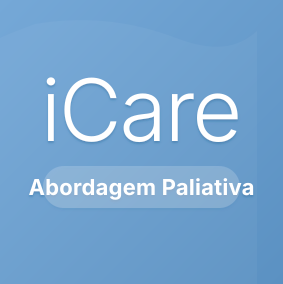
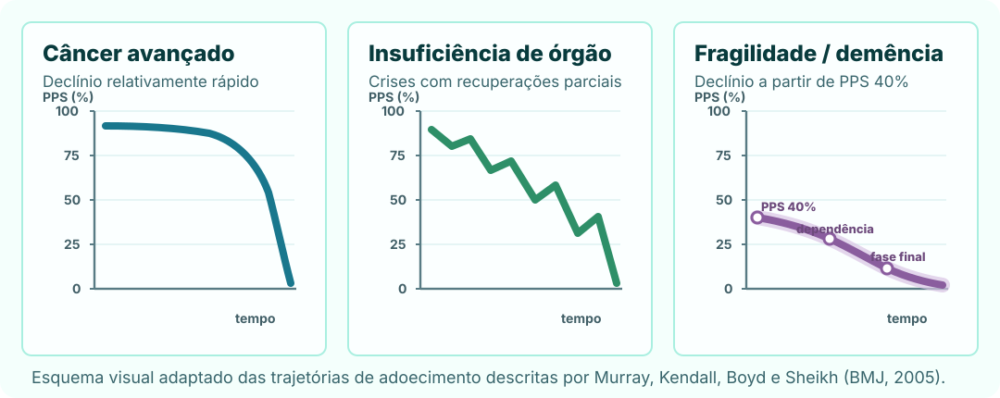
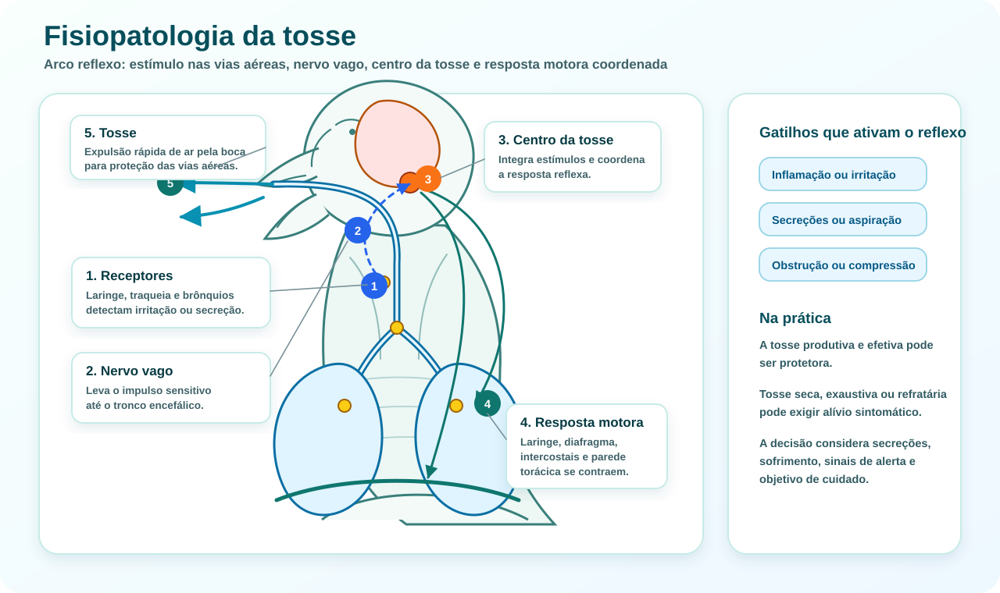
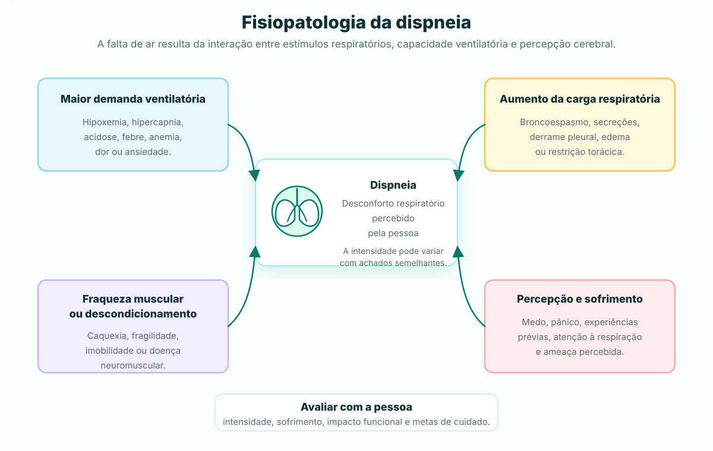
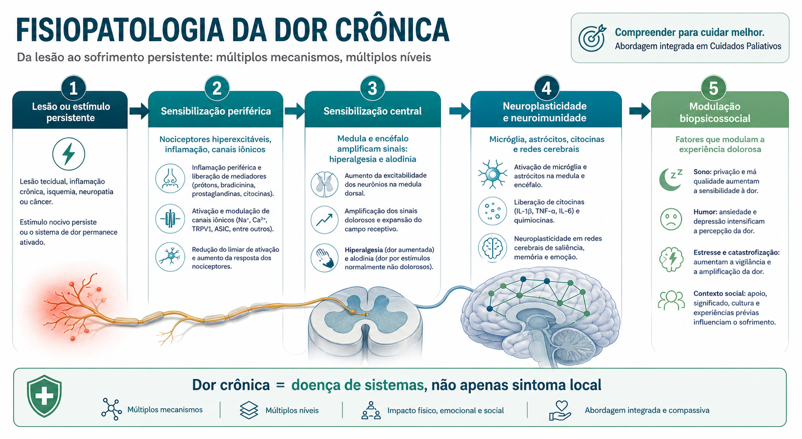
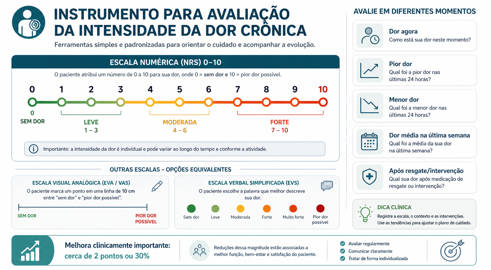
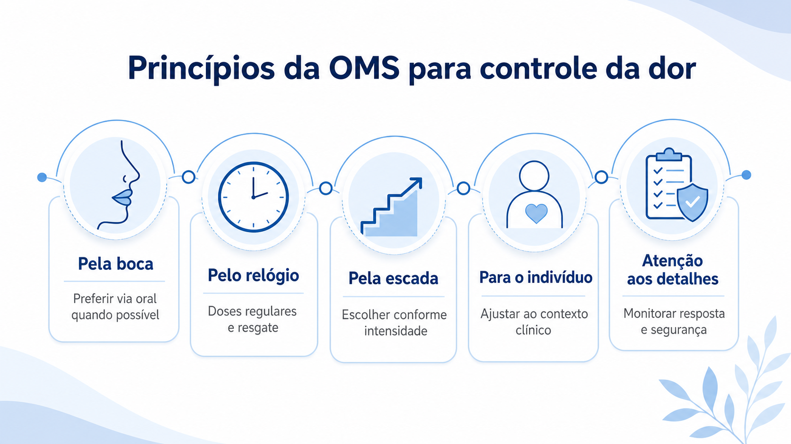
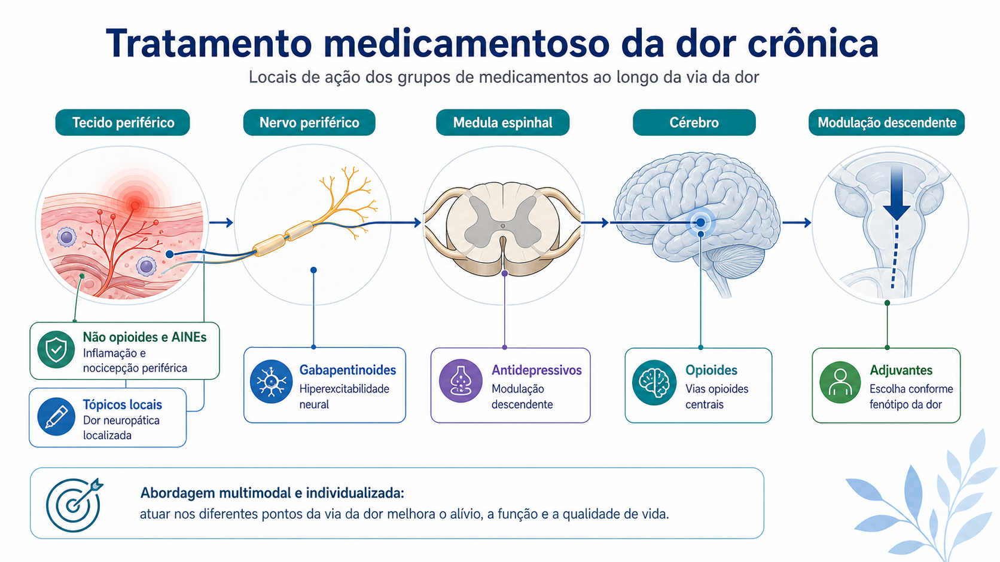
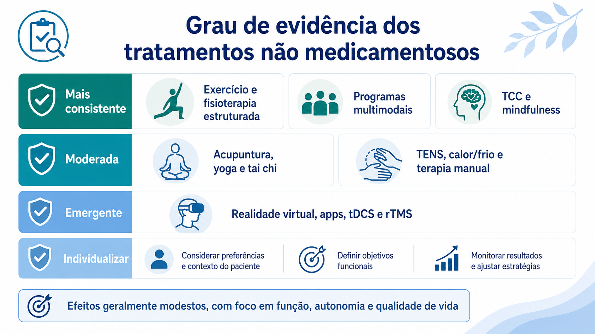

Este conteúdo foi organizado para apoiar a prática clínica e a comunicação com pacientes e famílias.
Privacidade e cookies
Usamos armazenamento local para preferências e contador de visitas. Se anúncios forem ativados, parceiros como
o Google poderão usar cookies conforme a política de privacidade.
iCare - Abordagem Paliativa
abordagem paliativa para profissionais do serviço público de saúde

iCare - Abordagem paliativa
Olá,
Este material foi organizado para apoiar profissionais do serviço público de saúde na abordagem paliativa
de pessoas com doenças ameaçadoras da vida. Reúne conceitos, políticas,
critérios de identificação na Rede de Atenção à Saúde, avaliação inicial, comunicação, tomada de decisão,
planejamento antecipado, controle de sintomas, vias de administração, cuidado pediátrico, prescrição,
apoio ao cuidador, fim de vida, óbito em domicílio e luto.
O cuidado paliativo pode ser primário, secundário ou terciário. O cuidado paliativo primário reúne
competências básicas esperadas de todos os profissionais; o secundário é prestado por especialista; e o
terciário ocorre em centros voltados a casos complexos, assistência, ensino e pesquisa.1
Nas recomendações da Academia Nacional de Cuidados Paliativos (ANCP), a nomenclatura abordagem paliativa
foi utilizada como equivalente ao cuidado paliativo primário.2
Sobre este material
Organizado para consulta rápida no atendimento presencial, domiciliar ou remoto.
Focado em conforto, autonomia, segurança e alinhamento de metas de cuidado.
Criado com auxílio de inteligência artificial e validado por seus idealizadores.
Não substitui avaliação individual, protocolos locais nem discussão multiprofissional.
Idealizadores
BB
Bruno Belo Lima
Médico paliativista, graduado em Medicina pela Universidade Federal do Rio de Janeiro (UFRJ),
com formação em Clínica Médica pela Universidade Estadual de Campinas (Unicamp) e Medicina
Paliativa/Cuidados Paliativos pela Universidade de São Paulo (USP).9
Professor, autor e idealizador
de ferramentas digitais de apoio ao cuidado paliativo, com atuação em educação em saúde,
telemedicina, comunicação clínica e cuidado centrado na pessoa.10
MF
Marinete Esteves Franco
Enfermeira paliativista, graduada pela Escola de Enfermagem da Universidade de São Paulo (USP),
com residência em Saúde do Idoso em Cuidados Paliativos pela Faculdade de Medicina da USP. Atua
em cuidados paliativos, educação em enfermagem e qualificação de equipes assistenciais, com experiência
em serviços de cuidados paliativos no Hospital Universitário Evangélico Mackenzie e no Hospice Erasto
Gaertner. É coordenadora do Comitê de Enfermagem
da Academia Nacional de Cuidados Paliativos (ANCP) e autora de produção científica na área de dignidade
em cuidados paliativos.13
AR
Aline Maria de Oliveira Rocha
Médica pediatra e reumatologista pediátrica, com mestrado em Cuidados Paliativos pelo Instituto
de Medicina Integral Prof. Fernando Figueira (IMIP), especialização em Cuidados Paliativos pelo
Instituto Pallium Latinoamérica, especialização em Bioética pela Universidade de São Paulo (USP)
e doutorado pela Universidade Federal de São Paulo (Unifesp) com foco em cuidados paliativos
pediátricos. Atua como professora do Curso de Medicina do Centro Universitário São Camilo,
médica no setor de transição de cuidados pediátricos do Instituto Perdizes do HCFMUSP e
preceptora afiliada em Reumatologia Pediátrica e Cuidados Paliativos Pediátricos na Unifesp.5
É autora de produção científica em cuidados paliativos pediátricos e bioética.67
TG
Tamyris dos Santos Gonçalves
Nutricionista pela Universidade Federal da Bahia (UFBA), especialista em Envelhecimento na forma de
Residência Multiprofissional pela Universidade Federal de São Paulo (Unifesp), com formação em Cuidados
Paliativos pelo Instituto Pallium Latinoamérica e formação como Doula da Morte. Possui experiência no
atendimento ao idoso em reabilitação e cuidados paliativos no âmbito hospitalar, clínica de transição,
Instituição de Longa Permanência para Idosos (ILPI) e domicílio. Atua no atendimento domiciliar ao idoso
em reabilitação e cuidados paliativos e coordena o Comitê de Nutrição da Academia Nacional de Cuidados
Paliativos (ANCP).8
Esta área foi escrita para pacientes, familiares, cuidadores e pessoas da comunidade. Informações claras
sobre abordagem paliativa aumentam conhecimento, segurança e confiança para participar do cuidado.123
O que é abordagem paliativa
É uma forma de cuidado voltada à qualidade de vida de pessoas com doenças que trazem sofrimento
importante. Pode acontecer junto com tratamentos da doença e não significa abandono; é uma abordagem
centrada na pessoa, na família e nas necessidades físicas, emocionais, sociais e espirituais.4
Quando conversar com a equipe
Procure ajuda quando houver sintoma novo ou difícil de controlar, piora rápida, dúvida sobre o que
esperar ou insegurança para cuidar em casa. Conversas francas e materiais escritos ajudam cuidadores
e famílias.5
Como ajudar no cuidado
Mantenha uma lista atualizada de medicamentos, alergias, contatos, diagnósticos e orientações recebidas.
Treinamentos simples para cuidadores podem aumentar preparo, autoeficácia e segurança no cuidado.26
O que perguntar
Pergunte qual é o objetivo do cuidado, quais sinais observar, quando pedir ajuda, como usar os
medicamentos e o que fazer se houver piora fora do horário habitual.25
Papel da comunidade
Familiares, vizinhos, voluntários, ex-cuidadores e grupos comunitários podem ajudar com presença,
escuta, tarefas práticas, apoio social e redução do isolamento, sempre respeitando limites e orientações
da equipe.7
Limites do cuidador
Cuidar não significa dar conta de tudo sozinho. Exaustão, medo de errar, privação de sono ou falta
de apoio são motivos para pedir ajuda.26
Sinais para pedir ajuda rapidamente
Falta de ar intensa, dor forte ou sintoma que não melhora com o plano combinado.2
Vômitos repetidos, engasgos frequentes, dificuldade para engolir ou suspeita de aspiração.6
Cuidador exausto, inseguro ou sem condições de manter o cuidado com segurança.26
Importante:
Este site não substitui consulta, avaliação presencial, serviço de urgência ou orientação da equipe que
acompanha a pessoa. Em situação de risco imediato, procure o serviço de saúde de referência.4
Alguns medicamentos do SUS são retirados em farmácias do Componente Especializado da Assistência
Farmacêutica (CEAF). Eles costumam exigir análise de documentos, receita, laudo e critérios clínicos
definidos em protocolos. A equipe de saúde e a farmácia estadual podem orientar quais documentos são
necessários em cada caso.12
O que é
É uma forma de acesso a medicamentos que precisam de solicitação formal e avaliação pelo SUS. Nem todo
medicamento entra por esse caminho; alguns ficam na farmácia básica, outros no hospital, e outros no CEAF.
Quem orienta
A Unidade Básica de Saúde, ambulatório, equipe que acompanha a pessoa ou a farmácia estadual podem informar
onde entregar documentos, prazo de análise, local de retirada e necessidade de renovação.
O que levar
Documento de identificação, CPF ou Cartão Nacional de Saúde.
Comprovante de residência, quando solicitado.
Receita médica dentro da validade.
Laudo para Solicitação, Avaliação e Autorização de Medicamentos (LME), quando exigido.
Relatório médico, exames e formulários do protocolo, quando solicitados.
Antes de ir à farmácia
Confira se nome, dose e apresentação do medicamento estão iguais na receita, LME e relatório.
Verifique validade da receita, assinatura, carimbo, CRM e data.
Leve cópias quando a farmácia solicitar e guarde uma foto ou cópia dos documentos entregues.
Se outra pessoa for retirar, confirme antes se é necessária autorização por escrito.
Documentos que podem ser pedidos
LME: laudo com dados da pessoa, diagnóstico, CID, medicamento, dose, quantidade e justificativa.
Receita: deve estar legível, com nome genérico do medicamento, dose, via, intervalo e quantidade.
Relatório médico: pode explicar o diagnóstico, tratamentos anteriores, sintomas e motivo da solicitação.
Exames: dependem do medicamento e do protocolo do SUS.
Autorização: pode ser exigida quando familiar ou cuidador retira o medicamento.
Importante:
Não compre, troque dose, interrompa ou substitua medicamento por conta própria. Se houver falta do medicamento,
perda de receita, evento adverso ou piora clínica, avise a equipe que acompanha a pessoa.
Buscador por medicamento
Digite o nome do medicamento para ver uma orientação inicial sobre o caminho de acesso no SUS. A lista
abaixo é apenas um apoio: regras, estoque, documentos e local de retirada podem mudar conforme estado,
município, protocolo e apresentação do medicamento.
O LME tem validade definida pelo Ministério da Saúde, e a solicitação ou renovação deve seguir o local
indicado pela Secretaria Estadual de Saúde.345
Os PCDTs estabelecem critérios diagnósticos, tratamento, medicamentos, posologias, monitoramento e
acompanhamento a serem seguidos no SUS.6
Digite para buscar
O resultado aparecerá aqui com orientação geral sobre farmácia básica, componente especializado ou necessidade de confirmar no serviço de saúde.
Antes de sair de casa:
confirme com a Unidade Básica de Saúde, farmácia municipal, farmácia estadual ou equipe que acompanha a pessoa quais documentos levar e se o medicamento está disponível.
Localizar CEAF mais próximo
Digite um endereço para procurar unidades do Componente Especializado próximas. Confirme sempre endereço,
horário de atendimento, documentos e agendamento com a Secretaria de Saúde ou a Unidade Básica de Saúde antes
de se deslocar.
Informe uma localização
Digite um endereço para abrir links de busca no mapa e em páginas oficiais.
Dica:
em muitos estados o CEAF também é chamado de Farmácia de Alto Custo, Farmácia Especializada,
Farmácia de Medicamentos Especializados ou polo de dispensação.
Este material foi criado com auxílio de inteligência artificial e validado por seus idealizadores, reunindo
experiência clínica, educação em saúde e prática multiprofissional em abordagem paliativa.
BB
Bruno Belo Lima
Médico paliativista, graduado em Medicina pela Universidade Federal do Rio de Janeiro (UFRJ),
com formação em Clínica Médica pela Universidade Estadual de Campinas (Unicamp) e Medicina
Paliativa/Cuidados Paliativos pela Universidade de São Paulo (USP). Professor, autor e idealizador
de ferramentas digitais de apoio ao cuidado paliativo, com atuação em educação em saúde,
telemedicina, comunicação clínica e cuidado centrado na pessoa.12
MF
Marinete Esteves Franco
Enfermeira paliativista, graduada pela Escola de Enfermagem da Universidade de São Paulo (USP),
com residência em Saúde do Idoso em Cuidados Paliativos pela Faculdade de Medicina da USP. Atua
em cuidados paliativos, educação em enfermagem e qualificação de equipes assistenciais. É autora
de produção científica na área de dignidade em cuidados paliativos.3
AR
Aline Maria de Oliveira Rocha
Médica pediatra e reumatologista pediátrica, com formação em cuidados paliativos, bioética e cuidados
paliativos pediátricos. Atua em ensino médico, transição de cuidados pediátricos e produção científica
em cuidados paliativos pediátricos e bioética.45
TG
Tamyris dos Santos Gonçalves
Nutricionista pela Universidade Federal da Bahia (UFBA), especialista em envelhecimento, com formação
em cuidados paliativos e atuação no cuidado domiciliar ao idoso em reabilitação e cuidados paliativos.
Coordena o Comitê de Nutrição da Academia Nacional de Cuidados Paliativos (ANCP).6
Definição segundo a Organização Mundial da Saúde (2020)
Cuidados paliativos são uma abordagem que melhora a qualidade de vida de adultos, crianças e famílias
que enfrentam problemas associados a doenças ameaçadoras da vida. Essa abordagem previne e alivia o
sofrimento por meio da identificação precoce, avaliação adequada e tratamento da dor e de outros problemas
físicos, psicossociais ou espirituais.1
A OMS também destaca que o sofrimento vai além dos sintomas físicos: exige cuidado das necessidades
práticas, apoio aos cuidadores, suporte no luto e trabalho em equipe para ajudar a pessoa a viver da forma
mais ativa possível até a morte, respeitando necessidades e preferências individuais.1
Ideia-chave:
Cuidados paliativos não são definidos por “não há mais o que fazer”, mas por “há sofrimento e necessidades
que precisam ser cuidadas com prioridade”.
Qualidade de vida
O foco é melhorar a qualidade de vida da pessoa e da família, com alívio de sofrimento físico,
psicológico, social e espiritual.1
Início precoce
Deve ser considerado cedo no curso da doença, junto a tratamentos modificadores proporcionais, reduzindo
internações evitáveis e uso desnecessário de serviços.1
Cuidado integral
Inclui avaliação correta de dor, dispneia e outros sintomas, além de necessidades emocionais,
espirituais, familiares, sociais e práticas.1
Equipe e rede
Envolve profissionais de diferentes áreas, cuidadores, voluntários e serviços integrados na atenção
primária, comunidade, domicílio, ambulatório e hospital.1
Acesso universal
Deve estar disponível conforme os princípios da cobertura universal em saúde, independentemente de renda,
idade, diagnóstico ou local de cuidado.1
Dever ético
Controlar sintomas e aliviar sofrimento é apresentado pela OMS como responsabilidade ética dos
profissionais e dos sistemas de saúde.1
Começa cedo
Pode ser iniciado desde o diagnóstico de uma condição grave, junto a tratamentos modificadores da doença,
e não apenas nos últimos dias de vida.1
Não é abandono
O cuidado continua com proporcionalidade terapêutica, manejo de sintomas, comunicação clara e apoio às
decisões compatíveis com valores e metas da pessoa.
É interdisciplinar
Envolve equipe multiprofissional, família e cuidadores, considerando necessidades clínicas, sociais,
emocionais, espirituais e práticas do cuidado.1
Organização no SUS
Integração entre atenção primária, especializada, hospitalar, urgência e atenção domiciliar.
Articulação com a Política Nacional de Cuidados Paliativos no âmbito do SUS.
Identificação precoce de pessoas elegíveis e cuidado centrado em necessidades, com coordenação pela APS quando o percurso exigir integração entre pontos da rede.3
Capacitação de equipes, apoio matricial, estratificação de necessidades e plano de cuidado para ampliar acesso na APS.4
World Health Organization. Palliative care [Internet]. Geneva: World Health Organization; 2020 Aug 5 [cited 2026 May 29]. Available from: https://www.who.int/news-room/fact-sheets/detail/palliative-care
Brasil. Ministério da Saúde. Cuidados paliativos [Internet]. Brasília: Ministério da Saúde; [cited 2026 May 25]. Available from: https://www.gov.br/saude/pt-br/composicao/saes/cuidados-paliativos
A identificação de pessoas com necessidades paliativas deve ocorrer em todos os pontos da Rede de Atenção à
Saúde (RAS), o mais precocemente possível, orientada por necessidades, sintomas, trajetória da doença,
funcionalidade, fragilidade, sofrimento e preferências da pessoa.12
Na Atenção Primária à Saúde, a identificação deve ser traduzida em estratificação de necessidades,
plano compartilhado e coordenação do percurso da pessoa na rede.5
Como coordenadora da RAS, a APS deve articular resolutividade, ordenação dos fluxos e contrafluxos e
responsabilização pela população adscrita.6
A OMS reforça que a maior parte das pessoas que precisam de cuidados paliativos está na comunidade, o que
torna a identificação precoce na APS uma etapa central para acesso oportuno.8
Quem deve ser identificado
Pessoas com doença grave, progressiva, incurável ou ameaçadora da vida, com declínio funcional ou maior dependência.5
Pessoas com sintomas persistentes, sofrimento físico, psicológico, social ou espiritual e necessidade de plano de cuidado compartilhado.
Pessoas com internações repetidas, maior uso de urgência, fragilidade, perda ponderal, demência avançada ou insuficiências orgânicas progressivas.
Onde identificar
Atenção primária: território, visitas domiciliares, consultas, renovação de receitas, curativos, acompanhamento de crônicos e reuniões de equipe.5
Território adscrito: reconhecimento de subpopulações, famílias e pessoas com maior risco, usando o vínculo longitudinal da equipe.6
Urgência, SAMU 192 e hospitais: crises de sintomas, internações recorrentes, piora funcional, processo ativo de morte ou decisões de proporcionalidade.
Atenção domiciliar e ambulatórios especializados: necessidade de cuidado compartilhado, sintomas complexos ou transições de cuidado.
Pistas clínicas
Declínio funcional sustentado, acamamento progressivo, dependência para atividades básicas ou sobrecarga do cuidador.
Dor, dispneia, delirium, fadiga, síndrome de anorexia-caquexia, sofrimento emocional, feridas complexas ou sintomas de difícil controle.
Perda de peso, redução de ingesta, quedas, disfagia, infecções recorrentes, hospitalizações frequentes ou piora rápida após alta.
Aplicar elegibilidade simplificada como primeira triagem comunitária, especialmente pelo Agente Comunitário de Saúde; qualquer item positivo deve acionar discussão em reunião de equipe e avaliação com SPICT-BR.7
Associar ferramentas ao julgamento clínico, à trajetória da doença e à conversa com pessoa, família e equipe.
Triagem positiva não encerra a avaliação: deve acionar avaliação estruturada, definição de necessidades e plano proporcional.
Conduta após identificar
Registrar necessidades, sintomas prioritários, funcionalidade, rede de apoio, cuidador, preferências e riscos previsíveis.
Iniciar manejo básico de sintomas, comunicação, orientação familiar e planejamento antecipado de cuidados quando apropriado.
Estratificar a complexidade e definir se o cuidado será conduzido pela equipe da APS, com matriciamento, atenção domiciliar, ambulatório, hospital ou equipe especializada.5
Definir o que pode ser resolvido pela APS, quando acionar apoio especializado e como organizar os fluxos e contrafluxos na rede.6
Quando houver elegibilidade, revisar tratamento atual, pactuar objetivos de cuidado, planejar cuidado futuro, registrar em prontuário e comunicar o plano à rede.7
Papel do território
Agentes comunitários de saúde podem reconhecer mudanças no domicílio, dúvidas familiares, barreiras de acesso e sinais de piora para qualificar a informação da equipe.4
Conhecer população adscrita, famílias e condições de vida permite antecipar necessidades, organizar visitas e priorizar acompanhamento longitudinal.6
A biografia da pessoa, com história de vida, valores, vontades, necessidades e prazeres, deve orientar o plano futuro de cuidado.7
A equipe deve transformar a identificação em plano de cuidado, evitando que o reconhecimento de necessidade paliativa fique apenas como “observação”.5
Revisar o plano sempre que houver nova internação, crise de sintomas, perda funcional, mudança terapêutica ou sobrecarga familiar.
Próximo passo:
Identificar uma pessoa com necessidade paliativa deve gerar ação: avaliação inicial, priorização de sintomas,
pactuação de metas, plano de urgência e definição do ponto da RAS responsável pelo seguimento.
O fluxo abaixo segue a proposta do Guia Orientador para reconhecimento de usuários elegíveis na APS:
Elegibilidade Simplificada pelo Agente Comunitário de Saúde, discussão em equipe, aplicação do SPICT-BR
e uso da pergunta surpresa para priorização.7
1
Elegibilidade Simplificada
Aplicada pelo Agente Comunitário de Saúde na rotina do território. Selecione os itens presentes.7
2
Aplicar SPICT-BR
Após discussão em equipe, selecione indicadores gerais ou clínicos compatíveis com o SPICT-BR.37
Indicadores gerais de piora ou deterioração
Indicadores clínicos por condição
3
Pergunta surpresa
“Eu ficaria surpreso se esta pessoa falecesse nos próximos 12 meses?”
Saída esperada:
A identificação na APS deve terminar com uma pessoa nominalmente acompanhada, necessidades priorizadas,
profissional/equipe de referência, plano de cuidado registrado e critério claro para acionar a RAS.
Reconhecer a fase do adoecimento ajuda a ajustar metas, comunicação, local de cuidado, intensidade de exames
e prioridade de conforto. A trajetória clínica pode variar entre progressão oncológica, crises de
insuficiência orgânica e declínio lento por fragilidade ou demência.12
Terminalidade
Há progressão da doença ou quadro clínico a despeito de tratamento eficaz instituído.3
Determina perda significativa de capacidade funcional, medida por escala apropriada.
Determina declínio nutricional.
Determina comprometimento de fatores intangíveis do ponto de vista social e da autonomia do doente.

Fase final de vida
Período de maior declínio e aumento de necessidades, geralmente nas semanas ou meses que antecedem a morte.1
Pode haver piora funcional, internações recorrentes, menor resposta a tratamentos e necessidade de revisar local de cuidado e plano de conforto.
O cuidado deve antecipar sintomas, apoiar família e cuidador, revisar medicamentos e fortalecer comunicação sobre prognóstico e preferências.
Processo ativo de morte
Declínio funcional irreversível, perda de peso, fraqueza intensa e maior sonolência.4
Desinteresse por alimentos e líquidos, disfagia, dificuldade para deglutir medicamentos e débito urinário reduzido.
Delirium refratário, alterações respiratórias, pele fria, mudança de coloração e necessidade de conforto prioritário.
Rota usual
Progressão com redução gradual do nível de consciência: sonolência, letargia, torpor, semicoma, coma e morte.5
Rota agitada
Evolução com inquietação, confusão, delirium terminal, tremores, mioclonias ou convulsões antes do coma e morte; exige reavaliação rápida de sofrimento e controle de sintomas.5
A avaliação inicial organiza a biografia, a trajetória da doença, os sintomas, a funcionalidade, o sofrimento,
a rede de apoio, os riscos imediatos e as preferências de cuidado antes de propor condutas.12
Na APS, essa avaliação deve resultar em plano de cuidado factível, com definição de prioridades,
responsáveis, rede de apoio e necessidade de suporte especializado.5
Anamnese e biografia
Nome, idade, estado civil, filhos, profissão, local de nascimento e residência.
Com quem reside, cuidador principal, religião/espiritualidade, o que gosta de fazer e o que dá sentido à vida.1
Diagnóstico, trajetória da doença e tratamentos em curso.
Medicações em uso, alergias, complicações prévias, internações recentes e tratamentos suspensos ou em curso.
Usar escala sistemática quando possível, como Edmonton Symptom Assessment System (ESAS).3
Explorar sofrimento como ameaça à integridade da pessoa, incluindo corpo, relações, emoções, sentido e autonomia.4
Exame físico
Criar ambiente tranquilo, privativo e com mínima exposição ou estímulo doloroso.
Pesquisar sinais de progressão: caquexia, sonolência, lesão por pressão, alterações respiratórias e sinais de desconforto.
Examinar pele, cavidade oral, hidratação, ostomias, feridas, mobilidade, risco de queda e sinais não verbais de dor.
Exames proporcionais
Solicitar exames laboratoriais, imagem, biópsias ou avaliações especializadas apenas quando mudarem tratamento, diagnóstico, planejamento ou conforto.
Pesar benefício contra desconforto, risco, deslocamento, custo, tempo e possibilidade real de decisão.
Evitar investigação automática quando o resultado não modificará a conduta ou aumentará sofrimento.
Comunicação inicial
Checar ciência do diagnóstico e prognóstico pela pessoa e, com consentimento, pela família.
Identificar preocupações prioritárias, como guarda de filhos, finanças, local de cuidado, dependência e despedidas.
Iniciar planejamento de diretivas antecipadas de vontade quando houver abertura e condição clínica para conversa.
Funcionalidade
Avaliar funcionalidade com Palliative Performance Scale (PPS), Eastern Cooperative Oncology Group (ECOG) ou Karnofsky Performance Scale (KPS), conforme contexto.
Registrar capacidade de deambular, autocuidado, atividade, ingesta, nível de consciência e dependência para atividades de vida diária.
Funcionalidade baixa ou declinante muda prognóstico, tolerância a tratamento modificador de doença e necessidade de suporte.
Abordagem Paliativa Completa - APS
Roteiro estruturado conforme a Folha Registro: Abordagem Paliativa Completa, para documentar a avaliação
integral da pessoa elegível na APS. O registro reúne identificação, biografia, história de adoecimento,
indicadores SPICT-BR positivos, rede de apoio, aspectos socioeconômicos, trajetória da doença, pergunta-surpresa,
avaliação multidimensional, sintomas, funcionalidade, planejamento antecipado e reflexões da equipe.7
Identificação
Nome, nome social, gênero, data de nascimento, idade e Cartão Nacional do SUS.
Agente Comunitário de Saúde, endereço, município e classificação pela Escala de Risco Familiar de Coelho-Savassi.
Registrar se mora com alguém e, quando sim, com quem.
Data da abordagem paliativa completa e profissional responsável.
Biografia
Descrever informações objetivas e subjetivas sobre a pessoa.
Registrar história de vida, papéis sociais, valores, preferências, rotina, vínculos, espiritualidade e o que dá sentido à vida.
Usar linguagem que ajude a equipe a reconhecer a pessoa para além do diagnóstico.
Indicadores SPICT-BR
Selecionar os indicadores com resultado positivo na ferramenta de elegibilidade SPICT-BR.
Registrar indicadores gerais de piora da saúde e indicadores clínicos da condição avançada identificada.
Usar o registro para justificar a necessidade de abordagem paliativa completa e acompanhamento longitudinal.7
História de adoecimento
Registrar diagnóstico principal, diagnósticos secundários e história da condição de saúde atual.
Descrever trajetória clínica, tratamentos prévios e em curso, internações, perdas funcionais e complicações relevantes.
Explicitar o que é reversível, o que parece progressivo e quais decisões clínicas estão em aberto.
Família e rede de apoio
Descrever com quem mora a pessoa e quem é o cuidador principal.
Registrar aspectos familiares, rede de apoio, conflitos, disponibilidade de cuidado e necessidade de suporte ao cuidador.
Usar genograma e ecomapa quando a equipe utilizar esses instrumentos.
Aspectos socioeconômicos
Condições de moradia.
Ocupação e renda familiar.
Benefícios recebidos e necessidades sociais que interferem no plano de cuidado.
Trajetória da doença
Selecionar a curva típica relacionada ao caso.
Selecionar os parâmetros da Palliative Performance Scale (PPS) para gerar automaticamente o resultado atual.
Usar trajetórias de adoecimento para alinhar prognóstico, intensidade de cuidado e planejamento.9
Pergunta-surpresa
Registrar: “Você se surpreenderia se essa pessoa morresse ao longo do próximo ano?”.
Marcar sim ou não.
Resposta “não me surpreenderia” sugere maior prioridade de planejamento e acompanhamento pela equipe.
A pessoa e suas múltiplas dimensões
Psicológica: principais fontes de sofrimento e ações propostas.
Espiritual: fontes de sofrimento, ações propostas e registro do FICA.
Familiar e social: principais necessidades, conflitos, apoios e ações propostas.
Física: sintomas, limitações, riscos e ações propostas.
Edmonton e PPS
Registrar progressão da Escala de Sintomas de Edmonton por data: dor, cansaço, sonolência, náusea, apetite, falta de ar, depressão, ansiedade, bem-estar e outro sintoma.8
Registrar progressão do Palliative Performance Scale (PPS) por data.
Usar a evolução seriada para revisar prioridades, suporte ao cuidador e proporcionalidade terapêutica.
Planejamento antecipado e DAV
Registrar informações obtidas por perguntas norteadoras do planejamento antecipado de cuidados.
Documentar aspectos importantes que possam compor Diretivas Antecipadas de Vontade.
Revisar preferências quando houver mudança clínica, familiar, prognóstica ou de capacidade decisória.
Reflexões da equipe
Registrar percepções da equipe sobre a experiência de realizar a abordagem paliativa completa.
Identificar aprendizados, dificuldades, conflitos, necessidades de matriciamento e próximos passos.
Usar a reflexão para qualificar o cuidado longitudinal e a organização do território.
Siglas do registro
SPICT-BR: Supportive and Palliative Care Indicators Tool - Brazilian Version.
PPS: Palliative Performance Scale.
FICA: Fé, Importância/Influência, Comunidade e Abordagem.
Uso prático:
Esta folha deve funcionar como registro narrativo e longitudinal: identifica a pessoa, organiza a avaliação
multidimensional, documenta sintomas e funcionalidade ao longo do tempo e transforma preferências em plano de cuidado.
Escala de Performance Paliativa (PPSv2)
A PPSv2 estima funcionalidade em incrementos de 10%, de 100% a 0%, usando cinco parâmetros observáveis:
deambulação, atividade/evidência de doença, autocuidado, ingesta e nível de consciência.6
A pontuação deve ser escolhida lendo a tabela horizontalmente, da esquerda para a direita, até encontrar
o nível que melhor se adequa ao conjunto do quadro; não se usam escores intermediários como 45%.
Na interpretação, deambulação tem maior peso que atividade/evidência de doença, que tem maior peso que
autocuidado, que tem maior peso que ingesta, que tem maior peso que nível de consciência.
Uso prático:
A PPS deve ser interpretada junto da trajetória clínica, sintomas, metas de cuidado e rede de apoio. Queda rápida
ou PPS baixo sugere necessidade de revisar plano, suporte ao cuidador, segurança domiciliar e proporcionalidade terapêutica.
A hierarquia aplicada é: deambulação > atividade/evidência de doença > autocuidado > ingesta > nível de consciência.
Carvalho RT, Parsons HA, organizadores. Manual de cuidados paliativos ANCP. 2nd ed. São Paulo: Academia Nacional de Cuidados Paliativos; 2012.
A avaliação prognóstica combina trajetória da doença, funcionalidade, carga de sintomas, achados clínicos,
exames proporcionais e percepção da equipe. O objetivo não é prever uma data exata, mas
estimar probabilidades de desfechos, orientar decisões, preparar a pessoa e alinhar intensidade de cuidado.123
Tipos de prognóstico
Expectativa de vida: dias, semanas, meses ou anos.
Curso da doença: progressão, recorrência, resposta terapêutica, estabilidade ou cura quando aplicável.
Desfechos relevantes: sintomas, complicações, qualidade de vida, local de cuidado, custos, independência e funcionalidade.3
Roteiro de 10 passos para melhor prognosticação
Doença: iniciar por diagnóstico, estágio, história natural e estatísticas de sobrevida aplicáveis.
Funcionalidade: avaliar trajetória do performance status com PPS, KPS, ECOG ou ferramenta equivalente.
Dados clínicos: integrar exame físico, sintomas, sinais de declínio e marcadores laboratoriais relacionados ao prognóstico.
Ferramentas: usar escores compatíveis com doença, fase e cenário assistencial quando ajudarem a decisão.
Julgamento: ajustar a estimativa clínica considerando coerência dos dados, risco de viés otimista e pergunta-surpresa: “Eu ficaria surpreso se esta pessoa falecesse nos próximos 12 meses?”.
Centralidade: perguntar o que a pessoa e a família querem saber e quais objetivos importam agora.
Explicação: comunicar probabilidades em faixas de tempo, evitando precisão falsa.
Limitações: explicitar incertezas, exceções e possibilidade de mudanças rápidas.
Revisão: reavaliar prognóstico quando houver nova internação, infecção, perda funcional, sintoma novo ou mudança de tratamento.
Acompanhamento: manter presença da equipe, controle de sintomas e planejamento antecipado mesmo quando o prognóstico é incerto.4
Formulação prática:
Registre a melhor estimativa prognóstica, o grau de incerteza, os fatores que sustentam a impressão e quais
mudanças clínicas devem levar à revisão do plano. Inclua também o que foi comunicado, para quem, e quais
decisões foram alinhadas.
Cherny NI, Fallon MT, Kaasa S, Portenoy RK, Currow DC, editors. Oxford textbook of palliative medicine. 6th ed. Oxford: Oxford University Press; 2021.
Decisões clínicas devem articular autonomia, beneficência, não maleficência, justiça, veracidade,
proporcionalidade e cuidado contínuo. O objetivo é proteger a pessoa,
aliviar sofrimento e evitar tanto abandono quanto intervenções sem benefício proporcional.12
A política nacional reforça planejamento antecipado, diretivas de vontade, abordagem integral e alívio do
sofrimento como componentes da assistência.3
Princípios práticos
Autonomia: reconhecer valores, preferências, compreensão e direito de participar das decisões, incluindo a possibilidade de registrar diretivas antecipadas.4
Beneficência e não maleficência: buscar benefício real, aliviar sofrimento e evitar intervenções que apenas prolongam dano ou processo de morrer.2
Justiça: garantir acesso proporcional, cuidado equânime, continuidade assistencial e uso responsável de recursos disponíveis no SUS.3
Veracidade e confiança: oferecer informação suficiente para decisão livre, em linguagem compreensível e respeitando preferências de participação.
Condutas a diferenciar
Ortotanásia: permitir o curso natural da doença, sem abandonar a pessoa, mantendo cuidado ativo de conforto e alívio de sofrimento.2
Distanásia: prolongar artificialmente o processo de morrer com intervenções desproporcionais, obstinadas ou sem benefício compatível com a meta de cuidado.1
Eutanásia: abreviar intencionalmente a vida, conduta vedada pelo Código de Ética Médica.1
Proporcionalidade
Avaliar se exame, procedimento, internação ou medicamento tem chance real de benefício para a meta atual de cuidado.
Considerar desconforto, risco, deslocamento, tempo, impacto familiar, reversibilidade e preferências da pessoa.
Quando a intervenção não muda desfecho relevante ou aumenta sofrimento, priorizar conforto, comunicação clara e plano de acompanhamento.5
Decisão compartilhada
Checar capacidade decisória, compreensão da situação, valores, medos, expectativas e quem a pessoa deseja envolver.
Quando houver perda de capacidade, considerar diretivas antecipadas, representante indicado e valores previamente conhecidos.4
Registrar fatos clínicos, opções discutidas, riscos, benefícios, participantes, decisão pactuada e plano de revisão.
Aplicação prática:
Boa decisão bioética combina indicação técnica, proporcionalidade, vontade da pessoa, contexto familiar,
justiça no acesso e plano de cuidado que não abandona a pessoa mesmo quando tratamentos modificadores
deixam de fazer sentido.
No Brasil, o Código de Ética Médica orienta que, em doença incurável e terminal, sejam oferecidos
cuidados paliativos disponíveis, evitando ações diagnósticas ou terapêuticas inúteis ou obstinadas
e considerando a vontade da pessoa ou de seu representante legal.1
Proporcionalidade terapêutica
Avaliar se exame, procedimento ou tratamento tem chance razoável de benefício para a meta de cuidado atual.
Considerar risco, desconforto, tempo, deslocamento, impacto familiar, reversibilidade e preferência da pessoa.
Em fase terminal de enfermidade grave e incurável, é eticamente permitido limitar ou suspender procedimentos que apenas prolonguem a vida, garantindo alívio de sintomas e assistência integral.2
Diretivas antecipadas
São manifestações prévias da vontade da pessoa sobre cuidados e tratamentos que deseja ou não deseja receber quando estiver incapaz de expressar decisão de modo livre e autônomo.3
Podem incluir preferências sobre reanimação cardiopulmonar, ventilação mecânica, internação em Unidade de Terapia Intensiva (UTI), nutrição artificial, hidratação, antibióticos, sedação paliativa, local de cuidado e prioridades de conforto.
Devem ser discutidas preferencialmente quando a pessoa ainda tem capacidade decisória, em conversa proporcional ao prognóstico, aos valores pessoais e aos cenários clínicos previsíveis.
É recomendável identificar um representante para apoiar decisões futuras, especialmente quando houver perda de capacidade, conflito familiar ou necessidade de decisão urgente.
Quando comunicadas diretamente pela pessoa, devem ser registradas no prontuário, com descrição do contexto, participantes, capacidade decisória, preferências expressas e plano de revisão.3
O médico deve considerar as diretivas antecipadas no contexto da relação assistencial, mas elas não devem ser seguidas quando estiverem em desacordo com o Código de Ética Médica.3
Na ausência de diretivas, representante ou consenso familiar, a Resolução CFM 1.995/2012 prevê apoio de comitê de bioética, comissão de ética médica ou Conselhos de Medicina, quando necessário.3
Modelo orientador de Diretivas Antecipadas de Vontade
Este roteiro pode apoiar a conversa e o registro em prontuário das preferências previamente expressas
pela pessoa sobre cuidados e tratamentos que deseja ou não deseja receber caso, no futuro, não consiga
manifestar sua vontade de forma livre e autônoma.3
A Política Nacional de Cuidados Paliativos (PNCP) foi instituída pela Portaria GM/MS nº 3.681,
de 7 de maio de 2024, no âmbito do Sistema Único de Saúde (SUS), por meio da alteração da
Portaria de Consolidação GM/MS nº 2/2017.1
A Portaria GM/MS nº 10.181, de 26 de janeiro de 2026, atualizou conceitos e regras de habilitação
da PNCP-SUS.2
Seu objetivo é ampliar e qualificar o cuidado para pessoas e famílias que enfrentam doenças que ameaçam
a vida, com alívio do sofrimento evitável, da dor e de outros sintomas.2
Finalidade no SUS
Ofertar ações de cuidados paliativos em todos os pontos da Rede de Atenção à Saúde (RAS), para todas as pessoas com indicação, o mais precocemente possível.2
Promover cuidado humanizado, integral e contínuo para pacientes, familiares e cuidadores.
Reduzir sofrimento por meio de avaliação abrangente de necessidades físicas, psicológicas, emocionais, espirituais e sociais, com foco especial no alívio da dor.2
Eixos estruturantes
Criação de equipes multiprofissionais para apoiar e disseminar práticas de cuidados paliativos na rede.
Promoção de informação qualificada e educação em cuidados paliativos.
Garantia de acesso a medicamentos e insumos necessários às pessoas em cuidados paliativos.1
Monitoramento da qualidade, segurança, efetividade, centralidade na pessoa, acesso oportuno, integração e equidade das ações paliativas.4
Respeito ao planejamento antecipado de cuidados (PAC) e às diretivas antecipadas de vontade (DAV) da pessoa cuidada.2
Equipes previstas
Equipe Macrorregional de Cuidados Paliativos (EMCP): equipe interdisciplinar com território definido, voltada ao apoio aos pontos da RAS por ações matriciais, sensibilização, capacitação e corresponsabilização sanitária.2
Equipe de Apoio Assistencial em Cuidados Paliativos (EAACP): equipe interdisciplinar vinculada a estabelecimento da RAS, com apoio assistencial às equipes de saúde e fortalecimento do vínculo com a atenção primária.2
A habilitação de EMCP usa critério populacional por macrorregião; a EAACP usa critério de uma equipe para cada 400 leitos SUS no território.2
Desejo iniciar uma EAACP/EMCP
A decisão entre iniciar uma Equipe de Apoio Assistencial em Cuidados Paliativos (EAACP) ou uma Equipe
Macrorregional de Cuidados Paliativos (EMCP) depende do papel esperado no território: apoio assistencial
vinculado a estabelecimento da RAS ou função macrorregional de matriciamento, sensibilização, capacitação
e corresponsabilização sanitária.2
Roteiro de solicitação da EAACP
Confirmar o critério quantitativo: uma EAACP para cada 400 leitos SUS no território, considerando leitos hospitalares, urgência e PMeC.2
Definir o estabelecimento da RAS ao qual a equipe ficará vinculada e descrever sua inserção na rede.
Preparar proposta com identificação e descrição da equipe, estabelecimentos de referência, códigos CNES, quantidade de leitos SUS, fluxos assistenciais e compromisso de atualização dos sistemas de informação.
Pactuar a proposta em Comissão Intergestores Regional (CIR) ou Comissão Intergestores Bipartite (CIB), conforme organização local.
Solicitar habilitação pelo gestor municipal, estadual ou distrital no SAIPS ou em outro sistema vigente, anexando documentos que comprovem os requisitos.
Roteiro de solicitação da EMCP
Confirmar o critério populacional macrorregional: uma EMCP para macrorregião de saúde com até 500.000 habitantes e nova equipe a cada 500.000 habitantes adicionais.2
Elaborar planejamento macrorregional pactuado em CIB ou CIR, em conformidade com o Planejamento Regional Integrado (PRI).
Definir território de abrangência, ponto da RAS ao qual a EMCP estará vinculada e cobertura de atuação quando houver mais de uma equipe na macrorregião.
Comprovar infraestrutura para telessaúde, telefone e internet, além de fluxos para transporte/remoção, educação permanente, capacitação e apoio matricial.
Solicitar habilitação pelo gestor municipal, estadual ou distrital no SAIPS ou em outro sistema vigente, com documentação comprobatória dos requisitos.
Depois do envio
O Ministério da Saúde analisa o cumprimento dos requisitos previstos na PNCP-SUS.
Quando aprovada, a habilitação é formalizada por publicação de portaria do Ministério da Saúde.
Após a habilitação, o gestor proponente deve cadastrar a equipe no Cadastro Nacional de Estabelecimentos de Saúde (CNES).2
Manter preenchimento adequado dos sistemas de informação, monitoramento de indicadores e validação dos dados na base federal.
Confirmar no SAIPS se o componente disponível está nomeado como EAACP, EACP ou EMCP, pois a nomenclatura operacional pode variar entre portarias, cartilhas e sistemas.
Verificar com a gestão estadual/regional se há deliberação CIB/CIR específica para distribuição das equipes no território.
Guardar versão final da proposta, ata ou deliberação de pactuação, CNES dos serviços envolvidos, composição da equipe, fluxos e documentos anexados.
Comece pequeno e mensurável:
Um piloto pode iniciar com território, público e horários definidos, discussão semanal de casos e indicadores simples:
número de pessoas acompanhadas, equipes apoiadas, sintomas priorizados, planos compartilhados, internações evitáveis e local de óbito.
Implicações para a atenção primária
Identificar precocemente pessoas com doenças graves, progressivas ou ameaçadoras da vida e necessidades paliativas.
Realizar avaliações abrangentes, integrar cuidados paliativos ao plano de cuidado e atuar na tomada de decisão compartilhada por meio do PAC.2
Atuar de forma integrada com os demais pontos da RAS conforme complexidade ou intensidade de cuidados, usando plano comum, fluxos de apoio, transporte sanitário, prontuário eletrônico e acesso à declaração de óbito quando disponíveis.2
Ordenar fluxos e contrafluxos da rede, mantendo resolutividade para necessidades manejáveis na APS e encaminhamento responsável quando houver maior complexidade.3
Organizar cuidado na comunidade com profissionais generalistas capacitados, medicamentos essenciais e retaguarda para casos complexos.5
Planificação da saúde e cuidados paliativos
A planificação organiza os processos da APS para alinhar demanda, oferta e continuidade. O macroprocesso de cuidados paliativos apoia reconhecimento de necessidades, acompanhamento familiar, controle de sintomas e articulação com outros pontos da RAS.
1Macroprocessos e microprocessos básicos da Atenção Primária à Saúde
2Macroprocessos de atenção aos eventos agudos
3Macroprocessos de atenção às condições crônicas não agudizadas, enfermidades e pessoas hiperutilizadoras
4Macroprocessos de atenção preventiva
5Macroprocessos de demandas administrativas
6Macroprocessos de atenção domiciliar
7Macroprocessos de autocuidado apoiado
8Macroprocessos de cuidados paliativos
9Macroprocessos de qualidade e segurança do paciente
Fonte: A construção social da Atenção Primária à Saúde, 2ª edição, CONASS.8
Modelo de Atenção às Condições Crônicas e cuidados paliativos
O Modelo de Atenção às Condições Crônicas orienta a resposta conforme risco e complexidade. Na abordagem paliativa, ajuda a definir intensidade de seguimento, plano compartilhado, apoio ao cuidador e necessidade de matriciamento ou equipe especializada.
Modelo de Atenção às Condições Crônicas e Cuidados Paliativos
Fonte: Manual de Cuidados Paliativos na Atenção Primária à Saúde do PlanificaSUS.7
Atenção primária
Ofertar ações individuais e coletivas em cuidados paliativos nas unidades básicas, domicílios e territórios, com base na Política Nacional de Atenção Básica (PNAB).2
Manter cuidado integrado aos demais pontos da RAS, conforme complexidade e intensidade de cuidado, assumindo coordenação longitudinal da população adscrita.3
Compartilhar plano de cuidado, fluxos de apoio e recursos logísticos como transporte sanitário, prontuário eletrônico integrado e acesso à declaração de óbito quando disponíveis.2
Atenção especializada ambulatorial
Estruturar ambulatórios de atenção especializada para promover cuidados paliativos conforme o momento clínico da doença.
Apoiar manejo de sintomas, melhoria da qualidade de vida e integração com os demais dispositivos da RAS.2
Contribuir para planos compartilhados quando houver sintomas complexos, decisões terapêuticas proporcionais ou necessidade de acompanhamento especializado.
Serviços de urgência
Atuar no alívio de sintomas agudizados, preservando conforto e dignidade da pessoa, familiares e cuidadores.
Reconhecer pessoas em cuidados paliativos em intercorrências, processo ativo de morte e óbito, inclusive à noite e em finais de semana.2
Apoiar familiares e cuidadores nas demandas vinculadas ao agravamento de sintomas, morte e luto.
SAMU 192
Apoiar remoções entre domicílio, via pública e pontos da RAS, conforme regulação médica e decisão compartilhada.
Atuar com foco na promoção do conforto quando a remoção for necessária e pactuada com a pessoa ou família.2
Articular a resposta móvel com a rede local para evitar deslocamentos desnecessários e preservar o plano de cuidado.
Atenção domiciliar
Realizar cuidado no domicílio quando esse for o local adequado e desejado, com integração aos demais pontos da RAS.
Receber apoio assistencial das EAACP quando vinculadas ao território ou serviço, especialmente em situações de maior complexidade clínica.2
Articular plano de cuidado, suporte ao cuidador, acesso a insumos, medicamentos e fluxos para intercorrências.
Hospitais e cuidados prolongados
Hospitais, unidades de urgência e serviços especializados podem receber apoio assistencial das EAACP quando vinculadas ao território ou estabelecimento.
Unidades e hospitais especializados em cuidados prolongados devem realizar abordagem paliativa para pessoas elegíveis, especialmente em fase final de vida quando houver indicação de cuidado hospitalar.2
Organizar cuidado proporcional, controle de sintomas, comunicação com família e continuidade com a RAS na alta, transferência ou fim de vida.
O cuidado é multiprofissional e integrado aos pontos da Rede de Atenção à Saúde. A PNCP-SUS prevê equipes
interdisciplinares e apoio matricial, com médico, enfermeiro, assistente social e psicólogo como composição
mínima, podendo incorporar outras categorias conforme necessidade e disponibilidade local.1
Médico
Reconhecer necessidades paliativas precocemente, avaliar sintomas e prognóstico e integrar a abordagem paliativa ao plano terapêutico em qualquer ponto da Rede de Atenção à Saúde (RAS).1
Conduzir prescrição e ajuste de medicamentos para controle de dor e outros sintomas, revisar polifarmácia, proporcionalidade terapêutica, interações e eventos adversos.2
Comunicar diagnóstico, prognóstico, opções de cuidado e limites terapêuticos, registrando decisões compartilhadas, diretivas antecipadas e plano de urgência.
Normas do conselho
Código de Ética Médica: em doença incurável e terminal, oferecer “todos os cuidados paliativos disponíveis” (CONSELHO FEDERAL DE MEDICINA, 2018, art. 41, parágrafo único), sem ações inúteis ou obstinadas.4
Diretivas antecipadas de vontade: considerar o “conjunto de desejos, prévia e expressamente manifestados” (CONSELHO FEDERAL DE MEDICINA, 2012, art. 1º) pela pessoa quando ela estiver incapaz de comunicar sua vontade.5
Resolução CFM nº 1.805/2006: permite “limitar ou suspender procedimentos e tratamentos” (CONSELHO FEDERAL DE MEDICINA, 2006, art. 1º) que prolonguem a vida em fase terminal, mantendo cuidados para alívio do sofrimento.6
Enfermagem
Realizar avaliação de necessidades físicas, psicossociais, espirituais e culturais, considerando a pessoa, família, comunidade e rede de apoio.3
Elaborar, implementar e avaliar plano de cuidados paliativos individualizado, com metas e intervenções de enfermagem em colaboração com a equipe multiprofissional.
Implementar e monitorar intervenções para dor e outros sintomas, orientar administração segura de medicamentos, vias de administração, dispositivos, curativos, conforto e cuidados no domicílio.
Liderar e supervisionar a equipe de enfermagem, registrar o processo de enfermagem, participar de discussões de caso e acionar a equipe quando houver piora, sofrimento ou insegurança do cuidado.3
Normas do conselho
O Parecer Normativo nº 1/2026/Cofen normatiza a atuação da equipe de enfermagem e destaca o cuidado voltado a “promover conforto, aliviar o sofrimento e garantir dignidade” (CONSELHO FEDERAL DE ENFERMAGEM, 2026, não paginado) à pessoa e família.3
Psicologia
Acolher sofrimento emocional, medo, tristeza, ansiedade, ambivalência, luto antecipatório e conflitos familiares, considerando pessoa, família e equipe.2
Apoiar comunicação, tomada de decisão, adaptação ao adoecimento, construção de sentido diante de perdas e planejamento antecipado de cuidados.
Identificar sofrimento psíquico intenso, risco psicossocial, crise familiar, luto complicado e necessidade de cuidado especializado em saúde mental.
Normas do conselho
Não foi localizada resolução federal específica do CFP. A Nota Orientativa CRP06 nº 6/2025 orienta a atuação da Psicologia em cuidados paliativos de forma “ética, técnica e socialmente comprometida” (CONSELHO REGIONAL DE PSICOLOGIA DE SÃO PAULO, 2025, não paginado).12
O material divulgado pelo CFP/ANCP reforça a atuação psicológica em cuidados paliativos, com atenção ao sofrimento, à comunicação e ao apoio à pessoa, família e equipe.13
Serviço social
Avaliar rede de apoio, vulnerabilidade social, cuidador principal, acesso a transporte, insumos, benefícios e barreiras para continuidade do cuidado.2
Articular recursos da rede intersetorial, orientar direitos sociais e previdenciários e apoiar fluxos institucionais do SUS e da assistência social.
Apoiar planejamento de alta, cuidado domiciliar, proteção de pessoas vulneráveis, organização familiar e acesso a recursos comunitários.
Normas do conselho
Não foi localizada resolução específica do CFESS sobre cuidados paliativos. A Resolução CFESS nº 383/1999 estabelece: “Caracterizar o assistente social como profissional de saúde” (CONSELHO FEDERAL DE SERVIÇO SOCIAL, 1999, art. 1º).14
Farmácia
Revisar prescrição, duplicidades, interações, doses, via de administração, apresentações disponíveis e compatibilidade com protocolos locais.2
Orientar armazenamento, preparo, diluição, administração por sonda ou via subcutânea quando indicado, descarte seguro e uso racional de medicamentos.
Apoiar acesso a medicamentos essenciais previstos na rede, adesão, reconciliação medicamentosa e monitoramento de eventos adversos.
Normas do conselho
Não foi localizada resolução federal específica do CFF sobre cuidados paliativos. A Resolução CFF nº 585/2013 define que as atribuições clínicas do farmacêutico visam à “promoção, proteção e recuperação da saúde” (CONSELHO FEDERAL DE FARMÁCIA, 2013, art. 2º).10
Comunicação institucional do CFF relaciona a atuação farmacêutica à implementação da Política Nacional de Cuidados Paliativos no SUS.11
Nutrição
Avaliar ingesta, perda ponderal, sarcopenia, sintomas gastrointestinais, preferências alimentares, funcionalidade e risco de broncoaspiração.2
Propor plano alimentar proporcional ao prognóstico, desejo da pessoa, segurança da via oral e objetivo de conforto ou ganho funcional.
Orientar família sobre hiporexia, síndrome de anorexia-caquexia, adaptação de consistência, prazer alimentar e limites de nutrição artificial.
Normas do conselho
A Resolução CFN nº 689/2021 reconhece, entre as especialidades em Nutrição, “Nutrição Clínica em Cuidados Paliativos” (CONSELHO FEDERAL DE NUTRICIONISTAS, 2021, art. 3º).9
Fisioterapia
Apoiar manejo de dispneia, tosse, secreções, fadiga, dor musculoesquelética, mobilidade e prevenção de complicações do imobilismo.2
Orientar posicionamento, conservação de energia, exercícios possíveis, transferências seguras, prevenção de quedas e adaptação funcional.
Manter foco em conforto, autonomia possível, funcionalidade significativa e metas realistas definidas com pessoa e família.
Normas do conselho
A Resolução COFFITO nº 539/2021 reconhece a atividade do fisioterapeuta em Cuidados Paliativos como “área de atuação própria da Fisioterapia” (CONSELHO FEDERAL DE FISIOTERAPIA E TERAPIA OCUPACIONAL, 2021, art. 1º).7
Fonoaudiologia
Avaliar deglutição, comunicação, risco de broncoaspiração, tosse durante alimentação e necessidade de adaptação de consistência.2
Orientar estratégias de alimentação segura, higiene oral, manejo de saliva, xerostomia, sialorreia e comunicação alternativa quando necessário.
Contribuir para decisões proporcionais sobre via oral, sonda, prazer alimentar, segurança e conforto.
Normas do conselho
A Resolução CFFa nº 633/2021 determina: “Regulamentar a atuação do fonoaudiólogo em Cuidados Paliativos” (CONSELHO FEDERAL DE FONOAUDIOLOGIA, 2021, art. 1º).8
Terapia ocupacional
Avaliar atividades de vida diária, autonomia, barreiras ambientais, uso de energia e prioridades significativas da pessoa.2
Propor adaptações, tecnologia assistiva, conservação de energia, rotina possível e estratégias para participação familiar, social e comunitária.
Apoiar manutenção de papéis, dignidade, segurança e conforto nas atividades que importam para a pessoa.
Normas do conselho
Não foi localizada resolução federal específica do COFFITO sobre terapia ocupacional em cuidados paliativos. Como base relacionada, os parâmetros assistenciais terapêuticos ocupacionais incluem cuidado a pessoas “fora de possibilidades curativas” (CONSELHO FEDERAL DE FISIOTERAPIA E TERAPIA OCUPACIONAL, 2012, não paginado) ou em cuidados paliativos.16
Odontologia
Avaliar dor oral, xerostomia, candidíase, mucosite, sangramento, trauma por prótese e higiene bucal.2
Orientar cuidados com a boca, prevenção de infecções, conforto oral, adequação de próteses e redução de fatores que dificultam alimentação.
Contribuir para alimentação, comunicação, autoestima e alívio de sofrimento relacionado à cavidade oral.
Normas do conselho
Não foi localizada resolução federal específica do CFO sobre cuidados paliativos. A Resolução CFO nº 262/2024 reconhece “Odontologia Hospitalar” como especialidade odontológica (CONSELHO FEDERAL DE ODONTOLOGIA, 2026, não paginado).15
O CFO relaciona essa área ao tratamento de pacientes em UTI, oncologia, cuidados paliativos, pós-operatório e assistência domiciliar.15
Técnico de enfermagem
Colaborar na elaboração do planejamento de cuidados paliativos conforme prescrição da assistência de enfermagem pelo enfermeiro.3
Realizar cuidados de menor complexidade técnica, higiene, conforto, alimentação, hidratação, mudança de decúbito e administração segura de medicamentos conforme protocolo, prescrição e supervisão.
Monitorar sinais vitais, sintomas e estado geral, registrar informações em prontuário e comunicar alterações ao enfermeiro.
Oferecer escuta atenta e orientações à pessoa, familiares e rede de apoio sobre necessidades humanas básicas, conforme planejamento de enfermagem.3
Normas do conselho
O Parecer Normativo nº 1/2026/Cofen inclui a atuação do técnico de enfermagem na equipe de cuidados paliativos e orienta cuidado voltado a “promover conforto, aliviar o sofrimento e garantir dignidade” (CONSELHO FEDERAL DE ENFERMAGEM, 2026, não paginado).3
Auxiliar de enfermagem
Observar sinais e sintomas da pessoa, registrar informações no prontuário e comunicar alterações ao enfermeiro.3
Realizar atividades de apoio aos cuidados de enfermagem e terapêutica simples, sempre sob supervisão do enfermeiro.
Auxiliar nos cuidados de higiene pessoal, conforto, bem-estar, alimentação e hidratação conforme planejamento da assistência de enfermagem.3
Normas do conselho
O Parecer Normativo nº 1/2026/Cofen inclui a atuação do auxiliar de enfermagem em cuidados paliativos, sob supervisão do enfermeiro, com cuidado voltado a “promover conforto, aliviar o sofrimento e garantir dignidade” (CONSELHO FEDERAL DE ENFERMAGEM, 2026, não paginado).3
Agente comunitário de saúde
Identificar no território pessoas que possam precisar de cuidados paliativos, sem assumir função diagnóstica, qualificando informações para a equipe técnica.4
Durante visitas domiciliares, observar sintomas, funcionalidade, atividades de vida diária, dúvidas da família, sinais de gravidade e necessidade de apoio rápido.
Fortalecer vínculo com pessoa e família, apoiar orientações combinadas pela equipe e facilitar comunicação com a Unidade Básica de Saúde.
Ajudar a mapear rede de apoio, recursos comunitários, sobrecarga do cuidador e necessidades sociais que interferem no plano de cuidado, usando o conhecimento do território adscrito.45
Capelão
Acolher sofrimento espiritual, dúvidas de sentido, culpa, medo, esperança, rituais, despedidas e necessidades religiosas ou existenciais.2
Atuar com respeito à crença, não crença, cultura e autonomia da pessoa, sem proselitismo e em articulação com a equipe.
Apoiar família e equipe em situações de terminalidade, luto antecipatório, morte e rituais de cuidado.
Voluntário
Oferecer presença, escuta, companhia, apoio a pequenas necessidades práticas e redução de isolamento, conforme treinamento e limites institucionais.2
Auxiliar em ações de conforto, atividades significativas e apoio comunitário, sem substituir profissionais de saúde ou cuidador responsável.
Comunicar à equipe situações de sofrimento, risco, conflito ou mudança percebida durante o acompanhamento.
Trabalho em equipe:
Os papéis se complementam. Na prática, o cuidado depende de plano comum, comunicação clara,
registro compartilhado, reavaliação frequente e corresponsabilização entre profissionais, pessoa, família
e rede de cuidado, conforme a lógica de equipe interdisciplinar prevista na PNCP-SUS.1
A tomada de decisão deve combinar capacidade decisória, melhor interesse,
valores da pessoa, proporcionalidade, prognóstico e deliberação compartilhada.
Capacidade e decisão substituta
Checar capacidade decisória para a decisão específica: compreensão, apreciação da situação, raciocínio e expressão de escolha.
Quando a pessoa não puder decidir, envolver representante legal/familiar e buscar decisão substituta alinhada a valores conhecidos.
Pedidos de tratamento exigem análise técnica de benefício, dano e proporcionalidade; recusa informada de tratamento por pessoa capaz tem peso ético diferente de exigir intervenção sem indicação.1
Pedidos e recusas
Respeitar autonomia não significa oferecer qualquer intervenção solicitada quando ela é fútil, prejudicial ou desproporcional.
Quando há dano conhecido e desproporcional, a não maleficência justifica recusar ou adiar a intervenção.
Quando o benefício é incerto, mas possível, pode-se propor tentativa terapêutica com tempo, meta, critérios de sucesso e plano de suspensão.
Zona de penumbra
Entre a melhor decisão e a conduta deletéria pode existir uma zona de incerteza clínica e ética.
Nessa zona, considerar melhor interesse, limiar de dano, prognóstico, sofrimento, valores da pessoa e reversibilidade da intervenção.2
Quanto maior a incerteza, maior a necessidade de deliberação compartilhada, registro claro e reavaliação em curto prazo.
Conflitos e desacordos
Revisar fatos clínicos, prognóstico, metas de cuidado e compreensão da família antes de concluir que há conflito.
Usar reunião familiar, segunda opinião, equipe multiprofissional, comissão de ética ou comitê de bioética quando disponível.
Na ausência de diretivas, representante, familiares disponíveis ou consenso, a Resolução CFM 1.995/2012 prevê apoio de comitê de bioética, comissão de ética médica ou Conselhos de Medicina quando necessário.3
Evitar abandono: manter cuidado, comunicação, controle de sintomas e presença da equipe durante a deliberação.4
Boa prática:
Antes de decidir por limitar, suspender ou iniciar intervenção de alto impacto, registre a meta de cuidado,
a proporcionalidade, a vontade da pessoa ou representante, a equipe envolvida e o plano de conforto.
Checagem da capacidade decisória
Capacidade decisória deve ser avaliada para uma decisão específica e em um momento específico. Ela pode
variar conforme delirium, dor, sofrimento, sedação, infecção, distúrbios metabólicos, comunicação,
contexto emocional, complexidade da decisão e quantidade de informação oferecida.567
1
Preparar a avaliação
Antes de concluir incapacidade, procure fatores reversíveis e apoios de comunicação.
2
Risco e complexidade
Quanto maior o risco ou complexidade da decisão, maior deve ser a segurança da avaliação.
Classificação automática: baixo risco/complexidade.
Sem itens selecionados, considerar checagem habitual dos quatro domínios.
3
Quatro domínios
Comunicar escolha
Selecione os itens observados na entrevista.
Classificação automática: pendente.
A classificação será calculada a partir da consistência e clareza da escolha.
Compreender informação
Selecione os itens que a pessoa consegue explicar com suas palavras.
Classificação automática: pendente.
A classificação será calculada a partir da compreensão das informações essenciais.
Apreciar a situação
Selecione os itens que mostram se a pessoa reconhece a própria situação clínica.
Classificação automática: pendente.
A classificação será calculada a partir do reconhecimento da própria situação clínica.
Raciocinar
Selecione os itens que mostram como a pessoa compara alternativas e consequências.
Classificação automática: pendente.
A classificação será calculada a partir da comparação entre alternativas e consequências.
Macauley RC. Ethics in palliative care: a complete guide. New York: Oxford University Press; 2018.
O planejamento antecipado de cuidados organiza conversas sobre valores, preferências, limites terapêuticos,
representantes e prioridades de cuidado antes de situações de urgência ou perda de capacidade decisória.
Na Atenção Primária à Saúde (APS), deve ser traduzido em plano simples, compartilhado e revisável, acessível
à equipe, à família e aos pontos da rede envolvidos, especialmente diante de intercorrências previsíveis no
domicílio.3
Boa prática:
Na APS, o planejamento antecipado precisa virar conduta concreta: quem liga, para onde encaminhar,
quando manter cuidado no domicílio, quando acionar urgência e quais intervenções são proporcionais às metas da pessoa.
Quando iniciar
Iniciar quando houver doença grave, progressiva ou ameaçadora da vida, fragilidade, declínio funcional, internações repetidas ou risco de perda de capacidade decisória.
Retomar após mudança de diagnóstico, prognóstico, funcionalidade, local de cuidado, cuidador principal ou preferência da pessoa.
Não esperar a fase final de vida: o planejamento é processo longitudinal e pode ocorrer em conversas sucessivas.3
Conversas de cuidado
Abordar experiências prévias de adoecimento, internação, UTI, filmes, histórias familiares e valores sobre qualidade de vida.
Perguntar como a pessoa imagina o futuro, o que considera inaceitável e quem deve participar das decisões.
O planejamento pode ocorrer em mais de uma conversa e não depende de modelo único de documento.2
Diretivas antecipadas
Registrar desejos prévios sobre cuidados e tratamentos que a pessoa quer ou não quer receber se perder capacidade de expressar vontade.
Identificar representante designado, valores centrais, limites terapêuticos, preferências de local de cuidado e prioridades de conforto.
A Resolução CFM 1.995/2012 orienta o médico a considerar as diretivas antecipadas no contexto da relação assistencial.1
O que registrar na APS
O que a pessoa compreende sobre sua condição e o quanto deseja saber.
Valores, medos, prioridades, local preferido de cuidado e pessoas que devem participar das decisões.
Representante indicado, contatos, orientações à família e limites terapêuticos discutidos.
Plano para intercorrências previsíveis: dor, dispneia, delirium, sangramento, crise respiratória, piora funcional, dificuldade de alimentação e processo ativo de morte.3
Compartilhar e revisar
Registrar no prontuário de forma objetiva e visível para a equipe.
Comunicar o plano ao cuidador principal, equipe de referência, atenção domiciliar, urgência ou serviço especializado quando envolvidos.
Definir quem acionar em horário comercial, noite, fim de semana e crise.
Revisar o plano quando houver internação, nova intercorrência, conflito familiar, mudança de representante ou nova preferência expressa pela pessoa.
Modelo Planejamento antecipado de cuidados
Modelo editável para registrar valores, objetivos de cuidado, representante, preferências assistenciais,
plano para intercorrências previsíveis, responsáveis, contatos da rede e revisão periódica na APS.23
Texto editável
Rocha Tardelli N, Neves Forte D, de Oliveira Vidal EI. Advance care planning in Brazil. Z Evid Fortbild Qual Gesundhwes. 2023;180:43-9.
Controle de sintomas
Escala de Avaliação de Sintomas de Edmonton (ESAS)
Instrumento de triagem para registrar a intensidade de sintomas frequentes em cuidados paliativos.
Cada sintoma deve ser pontuado de 0 a 10, em que 0 significa ausência do sintoma e 10 representa
a pior intensidade possível percebida pela pessoa.
Como avaliar o ESAS
Aplicar preferencialmente por autorrelato, perguntando como a pessoa percebeu cada sintoma nas últimas horas ou no período definido pela equipe.
Explicar a escala antes de iniciar: 0 significa ausência do sintoma e 10 significa a pior intensidade imaginável para aquela pessoa.
Ler um sintoma por vez, permitir tempo para resposta e registrar o número informado sem reinterpretar a pontuação.
Quando houver dificuldade cognitiva, comunicação limitada ou grande fragilidade, usar apoio do cuidador e observação clínica, registrando que a pontuação foi assistida.
Priorizar sintomas com maior pontuação, piora rápida, maior sofrimento ou maior impacto funcional, e repetir a escala após intervenções para comparar resposta.
Sintoma
0
10
Registro
Dor
Sem dor
Pior dor possível
____ / 10
Cansaço
Sem cansaço
Pior cansaço possível
____ / 10
Náuseas
Sem náuseas
Pior náusea possível
____ / 10
Depressão/tristeza
Sem tristeza
Pior tristeza possível
____ / 10
Ansiedade
Sem ansiedade
Pior ansiedade possível
____ / 10
Sonolência
Sem sonolência
Pior sonolência possível
____ / 10
Apetite
Melhor apetite
Pior apetite
____ / 10
Bem-estar
Melhor bem-estar
Pior bem-estar
____ / 10
Falta de ar
Sem falta de ar
Pior falta de ar possível
____ / 10
Sono
Melhor sono
Pior sono
____ / 10
Interpretação prática:
Pontuações de 1 a 3 sugerem sintoma leve, 4 a 6 moderado e 7 a 10 intenso. Use a escala para priorizar
os sintomas mais importantes, pactuar metas e comparar a resposta nas reavaliações.
Uso de opioides
Opioides podem ser úteis para dor moderada a forte e dispneia refratária em cuidados paliativos, desde que
a indicação, a meta de cuidado, a posologia, o plano de resgate e a prevenção de eventos adversos estejam
claramente registrados. No contexto deste material, priorizar medicamentos disponíveis na Rename e nos
protocolos locais, sem uso rotineiro para dor nociplástica ou dor crônica não oncológica sem reavaliação
cuidadosa.1216
Quando considerar
Dor moderada a forte, dor oncológica, dor mista ou dor refratária após estratégia inicial proporcional.
Dispneia persistente com sofrimento apesar de medidas não farmacológicas, tratamento de causa reversível e oxigênio quando houver hipoxemia.
Crise sintomática com necessidade de efeito rápido, especialmente quando a via oral não for possível.
Antes de prescrever
Confirmar intensidade, mecanismo provável, funcionalidade, prognóstico, via disponível e uso prévio de opioide.
Revisar função renal/hepática, delirium, sonolência, constipação, risco de queda, álcool, benzodiazepínicos e outros sedativos.
Pactuar meta: alívio parcial relevante, melhora funcional possível, conforto ou redução de crise, com prazo de reavaliação.
Como iniciar
Começar com baixa dose e titular conforme resposta, especialmente em idosos, fragilidade, baixo peso ou maior risco clínico.
Prescrever dose regular quando houver sintoma contínuo e dose de resgate para exacerbações, evitando escalonamento sem reavaliar causa.
Associar plano intestinal desde o início, orientar família e registrar sinais de alerta para retorno.
Se sedação excessiva, confusão, mioclonias ou piora respiratória: suspender nova titulação, revisar dose acumulada, função renal e interações.
Manter comunicação clara: opioide proporcional não significa sedação paliativa nem abandono de cuidados.
Opioid Risk Tool
O Opioid Risk Tool (ORT) é uma ferramenta breve para estimar risco de comportamento aberrante relacionado
ao uso de opioides em adultos. No contexto paliativo, o resultado deve apoiar segurança, monitorização e
combinação de cuidado, sem ser usado isoladamente para negar analgesia quando indicada.1920
Selecione o sexo conforme a tabela original e os fatores presentes para calcular o escore.
Posologias em adultos
Posologias orientativas para adultos, com escolha restrita aos opioides presentes na Rename e já
utilizados nas seções de dor, dispneia e vias de administração do site.13416
Medicamento
Via
Posologia
Uso e cuidados
Codeína
Oral ou por sonda quando apropriado
15 mg a 30 mg a cada 6 h; iniciar com 15 mg em idosos ou fragilidade.
Dor moderada ou tosse seca/refratária selecionada. Evitar se sonolência importante, depressão respiratória, constipação grave ou intolerância prévia.
Morfina de liberação imediata
Oral
2,5 mg a 5 mg a cada 4 h em pessoa virgem de opioide; resgate em torno de 10% da dose total diária.
Dor forte, dispneia refratária ou crise sintomática. Reavaliar resposta e eventos adversos antes de aumentar.
Morfina
Subcutânea
1 mg a 2 mg a cada 4 h ou 5 mg a 10 mg/24 h em infusão contínua; resgate em torno de 10% da dose total diária.
Útil quando a via oral não é possível. Monitorar sedação, delirium, náuseas, constipação e depressão respiratória.
Morfina
Endovenosa
1 mg a 2 mg EV lento em pessoa virgem de opioide; reavaliar em 10 a 15 min na crise.
Reservar para contexto com monitoramento e necessidade de efeito rápido. Titular com cautela e registrar objetivo clínico.
Metadona
Oral
Consulte um especialista antes de prescrever.
Consulte um especialista antes de prescrever.
Prevenção de constipação
Prescrever rotina intestinal junto com opioide quando não houver diarreia, obstrução intestinal ou contraindicação clínica.
Usar medidas de conforto: privacidade, líquidos conforme tolerância, mobilidade possível, revisão de ferro, anticolinérgicos e outros constipantes.
Reavaliar evacuações, dor abdominal, náuseas, distensão, fecaloma e necessidade de ajuste em até poucos dias.
Reavaliação e ajuste
Se há benefício e eventos adversos aceitáveis, manter menor dose eficaz e revisar periodicamente necessidade, via e objetivo.
Se não há benefício, reduzir ou suspender de forma planejada, buscando mecanismo de dor, sofrimento total, delirium ou outra causa não tratada.
Em troca de via ou escalonamento rápido, conferir equivalência, dose total diária e resgates usados; quando houver dúvida, discutir com equipe experiente.
Segurança:
Evitar combinação automática com benzodiazepínicos, álcool ou outros sedativos. Em insuficiência renal, delirium,
sonolência importante, fragilidade extrema ou dispneia sem avaliação, iniciar com doses menores e reavaliar de perto.
Adição a opioides
No cuidado paliativo, é essencial diferenciar necessidade clínica de analgesia, tolerância, dependência
física, abstinência, uso problemático e transtorno por uso de opioides. A pessoa pode precisar de opioide
proporcional sem apresentar adição; por outro lado, perda de controle, uso compulsivo e continuidade apesar
de dano exigem reavaliação e apoio especializado.6
Conceitos práticos
Tolerância: necessidade de dose maior para obter efeito semelhante; pode ocorrer com uso continuado.
Dependência física: sintomas de abstinência se houver suspensão brusca ou antagonista opioide.
Uso problemático: perda de controle, uso fora do combinado, busca compulsiva, prejuízo funcional ou risco à segurança.
O que observar
Escalonamento sem orientação, múltiplas fontes de prescrição, perda recorrente de receitas ou uso para ansiedade/insônia sem dor ou dispneia.
Sedação frequente, quedas, intoxicações, conflito familiar, mistura com álcool, benzodiazepínicos ou outros sedativos.
História de uso de substâncias, sofrimento mental grave, isolamento social ou baixa adesão ao plano combinado.
Conduta inicial
Rever indicação, intensidade, funcionalidade, quantidade usada, resgates, eventos adversos e disponibilidade real do medicamento.
Evitar interrupção abrupta quando há dependência física; pactuar prescrição única, intervalos curtos de reavaliação e plano escrito.
Acionar equipe especializada em saúde mental, dor ou cuidados paliativos quando houver perda de controle, risco de intoxicação ou sofrimento importante.
Como prescrever: documentos e registro
Opioides são medicamentos sujeitos a controle especial. Antes da dispensação, conferir a lista de controle,
a apresentação, a quantidade por unidade posológica e a exigência local de Notificação de Receita ou Receita
de Controle Especial, conforme Portaria SVS/MS nº 344/1998 e normas vigentes.5
Na receita
Identificar pessoa, prescritor, medicamento, apresentação, dose, via, intervalo, quantidade total e duração prevista.
Evitar abreviações ambíguas; escrever dose em mg, via e frequência com clareza, incluindo orientação de resgate quando houver.
Conferir se a unidade exige Notificação de Receita A ou Receita de Controle Especial em duas vias para a apresentação prescrita.
No prontuário
Registrar indicação, sintoma-alvo, intensidade inicial, meta de cuidado, uso prévio de opioide e justificativa da via.
Documentar plano intestinal, orientação sobre sonolência, náuseas, constipação, risco de queda e quando procurar atendimento.
Definir data de reavaliação, responsável pelo acompanhamento e critérios para ajuste, suspensão ou discussão com equipe especializada.
Orientação à família
Explicar finalidade, horários fixos, dose de resgate, armazenamento seguro e proibição de compartilhar medicamento.
Orientar contagem de comprimidos/ampolas quando necessário e descarte conforme rotina do serviço.
Alertar para sonolência excessiva, respiração lenta, confusão, quedas, vômitos persistentes e constipação sem evacuação.
Farmácia do Componente Especializado da Assistência Farmacêutica (CEAF)
O CEAF usa o Laudo para Solicitação, Avaliação e Autorização de Medicamentos (LME) como documento oficial
para informar dados da pessoa, da doença e do medicamento solicitado. A solicitação deve seguir o PCDT
correspondente, as pactuações da Comissão Intergestores Bipartite (CIB) e as exigências da Secretaria
Estadual de Saúde.89
Documentos habituais
LME preenchido de forma completa e legível, com CID-10, diagnóstico, medicamento, dose, via, duração e justificativa.
Receita médica conforme exigência do medicamento: receita simples, Receita de Controle Especial ou Notificação de Receita, quando aplicável.
Relatório médico quando necessário para detalhar quadro clínico, critérios do PCDT, tratamentos prévios, resposta e eventos adversos.
Cópia de documento de identificação, CPF/CNS, comprovante de residência e documentos do responsável, conforme regra estadual.
Exames, escalas, laudos complementares ou formulários específicos exigidos pelo PCDT ou pela farmácia estadual.
Conferir antes de enviar
Nome genérico do medicamento, apresentação, concentração, quantidade mensal e posologia coerentes entre LME, receita e relatório.
CID-10 compatível com o PCDT e com a indicação clínica registrada no prontuário.
Assinatura, carimbo, CRM, data e validade do LME/receita conforme rotina local.
Se houver retirada por terceiro, anexar autorização ou procuração simples conforme modelo da Secretaria Estadual.
Modelo editável: dados para LME
Modelo editável: relatório médico complementar
Modelo editável: autorização para retirada por representante
Rotação de opioide
Rotação é a troca planejada de opioide ou de via quando há analgesia insuficiente, eventos adversos
limitantes, dificuldade de administração ou mudança clínica. Deve ser feita com cálculo da dose total diária,
estimativa de equivalência e redução por tolerância cruzada incompleta, com reavaliação estreita.16
Quando pensar em rotação
Dor ou dispneia persistente apesar de adesão e titulação proporcional.
Sonolência, delirium, mioclonias, náuseas, constipação ou prurido limitantes.
Perda da via oral, disfagia, vômitos, obstrução ou necessidade de via subcutânea/endovenosa.
Passo a passo seguro
Somar dose total das últimas 24 h, incluindo doses regulares e resgates.
Converter para a nova via ou novo opioide usando tabela institucional validada.
Reduzir a dose calculada, em geral 25% a 50%, se houver troca de opioide ou fragilidade, e titular pela resposta.
Prescrever resgate proporcional, monitorar nas primeiras 24 a 48 h e revisar sedação, dor, dispneia e constipação.
Atenção:
Em insuficiência renal, delirium, alta dose, múltiplos sedativos ou dúvida de equivalência, a rotação deve ser discutida com equipe experiente.
Intoxicação por opioide
A intoxicação por opioide deve ser tratada como emergência clínica, sobretudo quando há rebaixamento do
nível de consciência e depressão respiratória. Diretrizes internacionais recomendam priorizar via aérea,
ventilação assistida quando necessário e naloxona quando disponível, sem atrasar acionamento de urgência
ou suporte ventilatório.6710
Sinais-chave
Depressão do nível de consciência: sonolência profunda, dificuldade de despertar, estupor ou coma.
Depressão respiratória: respiração lenta, superficial ou irregular; frequência respiratória menor que 12 irpm é sinal de alerta, e menor que 8 a 10 irpm sugere depressão respiratória grave.12
Miose: pupilas puntiformes apoiam a hipótese, mas podem estar ausentes em intoxicação mista.
Cianose, saturação baixa, pele fria/úmida, vômitos, sons de engasgo ou borbulhamento sugerem gravidade.10
Fatores de risco
Início recente, aumento de dose, erro de administração, troca de via, dose de resgate repetida ou reinício após período sem uso.
Associação com benzodiazepínicos, álcool, antipsicóticos, antidepressivos sedativos, anticonvulsivantes ou outros depressores do sistema nervoso central.
Doença pulmonar, apneia do sono, insuficiência renal ou hepática, idade avançada, fragilidade, delirium ou baixa reserva funcional.
Uso de opioides de longa duração, metadona, fentanil ou intoxicação por múltiplas substâncias aumenta risco de recorrência após reversão inicial.
Resposta inicial
Interromper novas doses de opioide e sedativos, chamar ajuda e acionar urgência conforme gravidade e recursos locais.
Avaliar responsividade, via aérea, respiração e circulação; posicionar para proteção de via aérea quando houver rebaixamento.
Oferecer oxigênio e ventilação assistida se respiração ausente, muito lenta ou ineficaz, conforme treinamento e protocolo local.
Administrar naloxona quando houver depressão respiratória, coma, ventilação ineficaz, apneia ou cianose; repetir se a resposta for insuficiente ou recorrente.710
Uso da naloxona
É antagonista opioide indicado para reverter depressão respiratória ou depressão importante do sistema nervoso central por opioides.
O objetivo é restaurar ventilação adequada, não despertar completamente nem eliminar toda analgesia.
Não usar como rotina para sonolência leve com respiração eficaz; nesse cenário, suspender ou reduzir opioide, revisar sedativos e monitorar.
Mesmo quando há melhora após naloxona, a pessoa deve permanecer em observação porque a duração do opioide pode superar a da naloxona.61116
Uso crônico ou risco de abstinência
Suspeitar de risco de abstinência quando há uso regular de opioide por dias a semanas, dose alta, metadona, opioide de longa duração, dependência física ou histórico de transtorno por uso de opioides.
Se houver depressão respiratória sem parada respiratória, preferir microtitulação quando houver equipe e monitorização, reduzindo risco de dor intensa, agitação, vômitos, hipertensão, taquicardia ou abstinência aguda.17
Após a reversão, reavaliar o plano analgésico: reduzir dose, espaçar intervalos, retirar sedativos desnecessários, tratar constipação/delirium e definir reintrodução gradual se analgesia ainda for necessária.1718
Graus de gravidade da intoxicação
Grau
Critérios clínicos
Conduta sugerida
Leve
Sonolência, náusea, prurido ou miose, com pessoa despertável, respiração eficaz, FR geralmente igual ou maior que 12 irpm, sem cianose e sem queda importante de saturação.
Suspender nova dose, revisar opioide e sedativos, observar, orientar cuidador e reavaliar frequentemente. Naloxona geralmente não é necessária.
Moderada
Sonolência importante ou difícil despertar, FR menor que 12 irpm ou respiração superficial, mas com ventilação espontânea e sem apneia.
Chamar ajuda, monitorar, oferecer oxigênio se indicado, revisar via aérea e considerar naloxona titulada em baixa dose se houver depressão respiratória progressiva.
Grave
Estupor ou coma, FR menor que 8 a 10 irpm, ventilação ineficaz, cianose, saturação baixa, engasgos/ruídos respiratórios ou suspeita de intoxicação mista.
Acionar SAMU/urgência, suporte de via aérea e ventilação, naloxona conforme protocolo e observação por risco de recorrência.
Crítica
Apneia, respiração agônica, parada respiratória ou cardiorrespiratória.
Suporte básico/avançado imediato, ventilação sem atraso, SAMU/urgência e naloxona se disponível conforme protocolo.
Posologia de naloxona conforme gravidade
Gravidade
Quando considerar
Posologia orientativa
Observações
Sonolência com respiração preservada
FR adequada, sem cianose, sem apneia e pessoa despertável.
Geralmente não usar naloxona. Suspender novas doses, revisar sedativos e monitorar.
Reavaliar frequentemente; se houver queda da FR, piora de consciência ou ventilação ineficaz, mudar conduta.
Depressão respiratória em uso terapêutico/paliativo
FR menor que 8 a 10 irpm, respiração superficial ou sedação importante, mas com algum esforço ventilatório.
Naloxona em baixa dose titulada segundo PCF5: diluir 400 microgramas em 10 mL de cloreto de sódio 0,9%; administrar 1 mL, equivalente a 40 microgramas IV, a cada 2 min até melhora respiratória.
Objetivo: restaurar ventilação, não despertar completo. Evitar reversão abrupta de analgesia, dor intensa ou abstinência.141517
Uso crônico com risco de abstinência
Uso regular de opioide, dependência física provável, metadona/opioide de longa duração ou necessidade de manter analgesia, sem apneia/parada respiratória.
Priorizar microtitulação IV: 40 microgramas a cada 2 min conforme PCF5, ou titulação gradual conforme protocolo local, até ventilação adequada.
Evitar reversão completa. Se houver apneia, parada respiratória ou instabilidade, suporte ventilatório e conduta de emergência têm prioridade.1718
Intoxicação grave ou overdose aguda
Rebaixamento importante, FR muito baixa, cianose, ventilação ineficaz ou forte suspeita de overdose.
Adultos/adolescentes/crianças maiores: 0,4 mg a 2 mg IV, IM ou SC; repetir a cada 2 a 3 min se necessário, até resposta adequada ou dose total de 10 mg.
Se não houver resposta após dose total adequada, considerar intoxicação mista, hipóxia prolongada ou outra causa de coma/depressão respiratória.1418
Apneia ou parada respiratória
Ausência de respiração ou respiração agônica.
Ventilar imediatamente. Se a via IV estiver disponível sem atraso: naloxona 2 mg IV; repetir/titular conforme resposta e protocolo.
Não atrasar ventilação, oxigênio, manobras de suporte básico/avançado e acionamento do SAMU/urgência.1418
Pediatria
Suspeita de intoxicação por opioide com depressão respiratória ou rebaixamento importante.
Crianças até 20 kg ou menores de 5 anos: 0,1 mg/kg IV. Crianças com mais de 20 kg ou maiores de 5 anos: 2 mg IV. Se necessário, repetir conforme resposta e protocolo; se IV não for possível, considerar IM ou SC.
Acionar urgência e seguir protocolo pediátrico local; monitorar recorrência após resposta inicial.1418
Após estabilizar
Monitorar nível de consciência, frequência respiratória, padrão ventilatório, saturação quando disponível, dor, sedação e sinais de recorrência.
Rever dose total em 24 horas, resgates usados, função renal/hepática, interações, erro de preparo, duplicidade de prescrição e acesso não supervisionado.
Reiniciar analgesia apenas com novo plano: dose menor, intervalo seguro, resgate proporcional, plano intestinal e reavaliação precoce.
Registrar evento, conduta, resposta, orientações à família e plano para evitar nova exposição.
Prevenção no plano de cuidado
Orientar família/cuidador sobre sinais de intoxicação, horários, dose regular, dose de resgate, armazenamento seguro e proibição de compartilhar medicamento.
Evitar prescrição simultânea de sedativos sem indicação clara; quando inevitável, documentar justificativa e monitorização.
Em pessoas com maior risco, considerar plano de emergência, contato de referência e disponibilidade de naloxona quando prevista no serviço ou protocolo local.711
Em cuidado paliativo, diferenciar sedação proporcional esperada de intoxicação: a presença de depressão respiratória, piora súbita ou redução desproporcional de consciência exige reavaliação imediata.
Fluxo decisório: intoxicação por opioide
Selecione os achados presentes para estimar a gravidade e gerar o próximo passo. Em qualquer suspeita de
depressão respiratória, priorize via aérea, ventilação e acionamento de urgência/SAMU conforme o contexto.
Resultado
Selecione os achados para gerar a conduta sugerida.
Conversão de opioide
Uso clínico com cautela
Esta calculadora fornece apenas uma estimativa equianalgésica inicial. A dose final deve considerar idade,
fragilidade, função renal/hepática, dor, sedação, eventos adversos, opioide prévio, tempo de uso e protocolo
institucional. Ao trocar de opioide, considere reduzir a dose calculada por tolerância cruzada incompleta.
Metadona, buprenorfina e rotações complexas devem ser avaliadas por especialista.16
Brasil. Ministério da Saúde. Secretaria de Atenção à Saúde. Departamento de Atenção Básica. Caderno de atenção domiciliar: volume 2 [Internet]. Brasília: Ministério da Saúde; 2013.
National Institute on Drug Abuse. Opioid Risk Tool [Internet]. Bethesda: NIDA.
Prescrição
Ferramenta para montar uma proposta sintomática por público, via, sintomas, intensidade e condutas.
Uso clínico:O resumo não substitui avaliação médica, checagem de alergias, função renal/hepática, interações, contraindicações, disponibilidade e protocolos locais. Em pediatria, confirmar peso atual, idade, formulação, dose máxima diária e protocolo pediátrico antes de prescrever.2711
Vias de administração
Escolha da via conforme segurança, conforto, disponibilidade, objetivo terapêutico e cenário de cuidado.
Via oral
Via preferencial quando há segurança para deglutir, absorção previsível e possibilidade de adesão ao plano.
Hipodermóclise
Via subcutânea para hidratação e medicamentos compatíveis, com foco em conforto, segurança e cuidado domiciliar.
Via endovenosa
Via parenteral para situações selecionadas, geralmente em ambiente com monitoramento, acesso venoso e necessidade clínica proporcional.
Via sublingual/bucal
Alternativa para pequenos volumes quando a deglutição está limitada, preservando conforto e rapidez de administração.
Via retal
Alternativa pontual para controle de sintomas quando vias enteral, subcutânea ou endovenosa não são viáveis.
Sonda/Gastrostomia
Exige revisão de forma farmacêutica, diluição, pausa de dieta quando necessário e prevenção de obstrução.
Tosse
Definição de tosse
Tosse é um reflexo protetor das vias aéreas que ajuda a remover secreções, partículas aspiradas
ou irritantes. Em cuidados paliativos, deve ser avaliada pelo sofrimento que causa, pela eficácia
para eliminar secreções e pela possibilidade de tratar causas reversíveis proporcionais aos objetivos
de cuidado.13
Apresentações frequentes
Produtiva: associada a secreção e necessidade de preservar tosse efetiva quando possível.4
Seca ou irritativa: pode causar exaustão, dor, insônia e piora da dispneia.
Refratária: persiste apesar do manejo de causas prováveis e exige revisão de metas, conforto e segurança.

Reflexo da tosse
A tosse resulta da ativação de receptores das vias aéreas por estímulos mecânicos, químicos,
inflamatórios ou térmicos. O impulso segue por vias aferentes, sobretudo pelo nervo vago, é
integrado no tronco encefálico e retorna por vias eferentes para musculatura respiratória,
laringe e parede torácica.1
Geração do sintoma
Irritação ou inflamação: tumor, infecção, pneumonite, refluxo, gotejamento pós-nasal ou broncoespasmo aumentam a sensibilidade do reflexo.
Secreção ou aspiração: muco, saliva, alimento ou conteúdo gástrico estimulam tosse protetora; quando a tosse é ineficaz, há risco de retenção e broncoaspiração.3
Alteração mecânica: derrame pleural, obstrução de via aérea, compressão tumoral ou linfangite podem gerar tosse associada a dispneia.
Implicação prática
Tosse produtiva e útil deve ser preservada quando possível, com medidas para facilitar eliminação de secreções.
Tosse seca, irritativa ou exaustiva pode exigir supressão sintomática, desde que sinais de alerta e causas reversíveis tenham sido considerados.4
Em doença avançada, a escolha entre mobilizar secreção, reduzir secreção ou suprimir tosse deve seguir conforto, segurança e objetivo de cuidado.
Caracterizar a tosse
Registrar início, duração, frequência, horário de piora, gatilhos, relação com decúbito, fala, esforço, alimentação ou aspiração.3
Definir se é seca, produtiva, hemoptoica, em acessos, noturna, pós-prandial, associada a engasgos ou refratária.1
Impacto e gravidade
Avaliar repercussão em sono, dor, dispneia, fadiga, comunicação, alimentação, ansiedade e sobrecarga familiar.4
Observar se a tosse é eficaz para eliminar secreções ou se há exaustão, vômitos, síncope, incontinência ou piora funcional.
Sinais de alerta
Hemoptise, dispneia intensa, cianose, dor torácica, febre persistente, rebaixamento, estridor, engasgos recorrentes ou suspeita de broncoaspiração.
Quando presentes, priorizar avaliação clínica dirigida conforme gravidade, possibilidade de reversão e objetivo de cuidado.2
Respiratórias
Infecção respiratória, bronquiectasia, asma, doença pulmonar obstrutiva crônica, broncoespasmo, pneumonite, atelectasia, derrame pleural, tumor endobrônquico ou obstrução de via aérea.1
Secreção, aspiração e via digestiva
Acúmulo de secreções, tosse ineficaz, disfagia, broncoaspiração, refluxo gastroesofágico, fístula traqueoesofágica, gotejamento pós-nasal ou xerostomia.3
Medicamentosas e ambientais
Inibidores da enzima conversora de angiotensina (IECA), irritantes ambientais, fumaça, poeira, odores fortes e ar muito seco.
Revisar início da tosse em relação a novos medicamentos, oxigênio, nebulizações, sondas, radioterapia ou quimioterapia.
Doença avançada
Fraqueza muscular, fadiga, imobilidade, redução do reflexo de proteção, secreção terminal e incapacidade de eliminar muco.4
Medidas gerais
Posicionar com cabeceira elevada, evitar decúbito plano quando houver piora e reduzir irritantes ambientais.
Oferecer hidratação proporcional ao conforto, higiene oral e umidificação quando houver ressecamento de vias aéreas.3
Tosse com secreção
Priorizar efetividade da tosse e mobilização de secreções, evitando supressão indiscriminada quando há secreção a eliminar.4
Considerar fisioterapia respiratória, drenagem postural, higiene brônquica suave e exercícios de reexpansão quando confortáveis e proporcionais.24
Tosse seca ou refratária
Reduzir estímulos irritativos, conversar sobre metas realistas de alívio e acompanhar sedação, constipação, dispneia e impacto no sono.3
Quando houver sinal de alerta, priorizar avaliação dirigida antes de apenas suprimir a tosse.
Tosse seca ou irritativa
Codeína: iniciar com 10 mg por via oral a cada 6 horas; ajustar para 10 mg a 20 mg até de 4/4 a 6/6 horas conforme resposta e tolerabilidade.2
Monitorar sonolência, náuseas, constipação, retenção urinária, delirium e risco de depressão respiratória.3
Broncoespasmo ou componente obstrutivo
Salbutamol inalatório: usar conforme prescrição, técnica inalatória e disponibilidade local quando houver sibilância ou broncoespasmo provável.3
Ipratrópio inalatório: considerar quando broncorreia, doença pulmonar obstrutiva ou broncoespasmo contribuírem para a tosse.3
Secreção excessiva
Atropina: pode ser considerada para excesso de secreções em fim de vida, conforme via disponível, prescrição e protocolo local.3
Evitar ressecar secreção espessa sem avaliar conforto, hidratação proporcional e capacidade de expectoração.
Use o fluxograma para identificar alertas, definir o padrão predominante da tosse e gerar condutas iniciais
separadas por causa provável, medidas não medicamentosas, medicamentos quando indicados e reavaliação.12
Brasil. Ministério da Saúde. Manual de cuidados paliativos [Internet]. Brasília: Ministério da Saúde; 2020 [cited 2026 May 25].
Brasil. Ministério da Saúde. Secretaria de Atenção à Saúde. Departamento de Atenção Básica. Caderno de atenção domiciliar: volume 2 [Internet]. Brasília: Ministério da Saúde; 2013.
Castilho RK, Silva VCS, Pinto CS, organizadores. Manual de cuidados paliativos. São Paulo: Hospital Sírio-Libanês; 2020.
Dispneia
Dispneia é experiência subjetiva de desconforto respiratório, com sensações qualitativamente distintas
que variam em intensidade. Deve ser avaliada junto ao sofrimento, impacto funcional,
causas potencialmente reversíveis e coerência das intervenções com a meta de cuidado.126
Definição
É um sintoma subjetivo: a intensidade relatada pela pessoa deve orientar a avaliação, mesmo quando sinais objetivos parecem discretos.
Pode envolver componentes físicos, emocionais, funcionais, sociais e espirituais, especialmente em doença avançada.
O manejo deve combinar alívio de sofrimento, tratamento de causas proporcionais e alinhamento com objetivos de cuidado.7
A dispneia resulta da interação entre estímulos respiratórios, capacidade ventilatória e percepção cerebral.
A intensidade relatada pode ser alta mesmo quando os sinais objetivos parecem discretos.110

Mecanismo
Exemplos clínicos
Sensação frequente
Maior demanda ventilatória
Hipoxemia, hipercapnia, acidose, febre, anemia, dor, esforço ou ansiedade.
Caquexia, fragilidade, doença neuromuscular, câncer avançado ou imobilidade.
Fadiga respiratória, fala entrecortada e exaustão.
Percepção e sofrimento
Medo, pânico, experiências prévias, contexto familiar e ameaça percebida.
Desconforto desproporcional, sensação de sufocamento ou perda de controle.710
Caracterizar o sintoma
Registrar início, duração, padrão temporal, fatores de piora ou alívio, relação com esforço, repouso, decúbito, fala, alimentação e ansiedade.6
Descrever a sensação predominante: fome de ar, esforço respiratório, opressão torácica, sufocamento ou incapacidade de recuperar o fôlego.1
Medir intensidade e impacto
Usar autorrelato sempre que possível, escala numérica de 0 a 10 e mMRC/MRC para limitação funcional nas atividades do cotidiano.5
Avaliar impacto em sono, fala, alimentação, mobilidade, autocuidado, ansiedade, fadiga, segurança no domicílio e sobrecarga do cuidador.89
Pesquisar sinais de gravidade
Dispneia em repouso intensa, cianose, estridor, uso de musculatura acessória, exaustão, rebaixamento, dor torácica, síncope, febre ou hipoxemia nova.
Quando presentes, priorizar avaliação clínica dirigida e plano de urgência conforme gravidade, reversibilidade e objetivos de cuidado.89
Tipos de dispneia
Fome de ar: sensação de inspiração insuficiente; pode ocorrer com hipercapnia, hipóxia, acidose ou exercício.
Esforço respiratório: sensação de trabalho aumentado, comum quando há perda de força muscular ou carga ventilatória elevada.
Opressão torácica: pode sugerir broncoconstrição, ansiedade associada ou componente cardiopulmonar.
A escala Modified Medical Research Council (mMRC/MRC) classifica a limitação funcional provocada pela
dispneia em atividades do cotidiano. Ela ajuda a documentar gravidade basal e acompanhar evolução, mas deve
ser interpretada junto do sofrimento, padrão temporal, sinais clínicos e meta de cuidado.5
Grau mMRC/MRC
Descrição
Interpretação prática
0
Dispneia apenas com exercício intenso.
Sem limitação relevante nas atividades habituais.
1
Falta de ar ao apressar o passo no plano ou ao subir leve inclinação.
Limitação leve, geralmente aos esforços maiores.
2
Anda mais devagar que pessoas da mesma idade por dispneia ou precisa parar para respirar ao caminhar no próprio ritmo.
Limitação funcional moderada e impacto em mobilidade.
3
Para para respirar após caminhar cerca de 100 metros ou poucos minutos no plano.
Limitação importante; revisar causa, resgate e plano de atividade.
4
Muito dispneico para sair de casa ou dispneico ao vestir-se/despir-se.
Limitação grave; avaliar suporte, conforto, crise e plano de urgência.
Causas de dispneia
Associadas a malignidade: tumor pulmonar, metástases, derrame pleural, obstrução de veia cava superior, embolia pulmonar, derrame pericárdico, obstrução de via aérea e infecção.6
Não associadas a malignidade: doença pulmonar obstrutiva crônica (DPOC), bronquiectasia, fibrose pulmonar, insuficiência cardíaca congestiva, arritmias, anemia, acidose, descondicionamento e crise de pânico.
Causas sistêmicas como caquexia, ascite e hepatomegalia volumosa também podem agravar o desconforto respiratório.
Medidas não farmacológicas
Posicionar a pessoa de forma confortável, elevar cabeceira, reduzir estímulos e orientar respiração com ritmo mais lento.7
Usar ventilador ou fluxo de ar frio na face quando houver alívio percebido.
Aplicar técnicas de conservação de energia, pausas, adaptação de atividades, apoio para marcha e fisioterapia respiratória quando possível.3
Oxigênio deve ser direcionado sobretudo a hipoxemia ou benefício clínico claro, com reavaliação do conforto.6
Medidas farmacológicas
Em pessoa virgem de opioide e dispneia leve: codeína 30 mg por via oral de 6/6 horas ou 4/4 horas, conforme prescrição e tolerabilidade.4
Em dispneia moderada ou intensa: morfina 5 mg por via oral ou 2 mg por via endovenosa/subcutânea de 6/6 horas ou 4/4 horas, com titulação cuidadosa.6
Quando já há uso de opioide: considerar aumento de 25% da dose basal e resgate de morfina de 10% a 15% da dose total diária para exacerbações.
Benzodiazepínicos podem ser associados quando ansiedade ou pânico amplificam a dispneia: diazepam iniciar com 5 mg/dia ou clonazepam 0,25 mg a 2 mg por via oral a cada 12 horas, conforme risco e tolerabilidade.
R: relaxamento, presença calma e redução de estímulos.
T: timing, reavaliando resposta a cada intervenção.
Sororoca
Ruído respiratório por secreções em vias aéreas, comum no processo ativo de morte e frequentemente mais angustiante para familiares do que para a pessoa inconsciente.
Medida não farmacológica: reposicionar em decúbito lateral, com cabeça fletida, quando confortável e seguro.
Medida farmacológica: sulfato de atropina pode ser considerado para reduzir secreções conforme prescrição, via disponível, protocolo local e contexto clínico.79
Sedação paliativa
Considerar apenas em dispneia grave refratária, após otimização das medidas proporcionais e avaliação da fase de doença.
Deve ser apresentada como último recurso para alívio de sofrimento intolerável, com registro de refratariedade, decisão compartilhada e monitoramento.8
Atenção:
Dispneia súbita, hemoptise, dor torácica nova, queda de saturação, estridor, rebaixamento do nível de consciência
ou sofrimento intenso exigem avaliação imediata e revisão do plano de urgência.
Relacione gravidade, reversibilidade, conforto, meta de cuidado e necessidade de avaliação presencial.12
1
Pesquisar sinais de alerta
2
Intensidade da dispneia
mMRC 0: dispneia apenas com exercício intenso. mMRC 1: ao apressar o passo ou subir leve inclinação.
mMRC 2: anda mais devagar ou para ao caminhar no próprio ritmo. mMRC 3: para após cerca de 100 metros
ou poucos minutos no plano. mMRC 4: muito dispneico para sair de casa ou ao vestir-se/despir-se.5
Brasil. Ministério da Saúde. Secretaria de Atenção à Saúde. Departamento de Atenção Básica. Caderno de atenção domiciliar: volume 2 [Internet]. Brasília: Ministério da Saúde; 2013.
Náusea é uma sensação desconfortável que sinaliza a iminência de vômito, podendo ocorrer com ou sem êmese
e vir acompanhada de sintomas autonômicos como sudorese fria, sialorreia ou refluxo de conteúdo gástrico.123
Fisiopatologia
A náusea surge da integração de estímulos aferentes no tronco encefálico, especialmente no núcleo do trato solitário e no centro do vômito. Esses centros recebem sinais da zona quimiorreceptora, do trato gastrointestinal, do sistema vestibular, do córtex, do sistema límbico e de mediadores inflamatórios ou metabólicos.3
Via química/metabólica: fármacos, toxinas, uremia, hipercalcemia, infecção e alterações metabólicas podem estimular a zona quimiorreceptora.
Via gastrointestinal: estase gástrica, gastroparesia, distensão, constipação, obstrução parcial e irritação visceral enviam estímulos vagais e simpáticos.
Via craniana, vestibular e emocional: hipertensão intracraniana, movimento, ansiedade, medo, odores, dor e experiências prévias podem amplificar a percepção de náusea.
Avaliação
Caracterizar intensidade, duração, gatilhos, relação com alimentação, odores, movimento, dor, ansiedade, constipação e medicamentos.
Pesquisar causas químicas/metabólicas, redução do esvaziamento gástrico, distensão visceral, obstrução intestinal, causas cranianas, ansiedade e dor.3
Revisar opioides, digoxina, antibióticos, antifúngicos, ferro, inibidores seletivos da recaptação de serotonina (ISRS), anti-inflamatórios não esteroidais (AINEs), agonistas dopaminérgicos e quimioterápicos.3
Medidas não farmacológicas
Preferir alimentos frios ou em temperatura ambiente, pequenas refeições, mastigação lenta, ambiente arejado e livre de odores fortes.
Evitar líquidos durante a refeição, manter higiene oral/nasal, não deitar após comer e elevar cabeceira entre 30 e 45 graus.3
Relaxamento, imagens mentais guiadas, acupuntura, acupressão, musicoterapia e outras práticas integrativas podem ser consideradas conforme preferência e disponibilidade.3
Medicamentos
Náusea quimicamente induzida: metoclopramida 10 mg EV/VO de 8/8 h ou 6/6 h; haloperidol 1 a 2 mg EV/SC 2 a 3 vezes ao dia; ondansetrona 4 a 8 mg EV a cada 8 h.3
Estase gástrica: metoclopramida até 40 mg/dia EV/VO, se não houver obstrução completa ou contraindicação clínica.3
Escolher antiemético conforme mecanismo suspeito e reavaliar resposta, sedação, sintomas extrapiramidais, constipação e hidratação.
Fluxo decisório
Organize a conduta pela segurança, mecanismo provável e resposta clínica.
1. Procurar sinais de alerta
Suspeita de obstrução intestinal, distensão importante, dor abdominal intensa, vômitos fecaloides, sangue ou bile persistente.
Vômitos em jato, cefaleia intensa, sonolência, alteração neurológica ou suspeita de hipertensão intracraniana.
Desidratação, piora rápida, broncoaspiração ou incapacidade de manter via oral segura.
2. Definir mecanismo predominante
Estase gástrica/gastroparesia: saciedade precoce, plenitude, refluxo, piora após alimentação.
Químico/metabólico: opioides, antibióticos, ferro, uremia, hipercalcemia, infecção ou quimioterapia.
Visceral/obstrutivo: constipação, fecaloma, distensão, cólica, parada de gases ou vômitos persistentes.
Craniano, vestibular ou emocional: cefaleia, movimento, ansiedade, odores, dor e experiências prévias.
3. Escolher conduta inicial
Estase gástrica: fracionar refeições, reduzir volumes e considerar metoclopramida 10 mg VO/EV de 8/8 h ou 6/6 h se não houver obstrução completa.
Químico/metabólico: revisar causa reversível; considerar haloperidol 1 mg a 2 mg EV/SC 2 a 3 vezes ao dia ou ondansetrona 4 mg a 8 mg EV a cada 8 h quando indicado.
Constipação/fecaloma: tratar constipação antes de escalar antiemético e evitar pró-cinético se houver obstrução completa.
Odores, ansiedade ou alimentação: ambiente arejado, pequenas porções, alimentos frios ou mornos, higiene oral e medidas de relaxamento.
4. Reavaliar
Rever intensidade, número de episódios, hidratação, sedação, sintomas extrapiramidais, constipação e capacidade de manter medicações por via segura.
Se não houver resposta, reavaliar mecanismo, combinar medidas proporcionais e considerar discussão com equipe especializada.
Vômito é a eliminação forçada do conteúdo gástrico, associada à contração abdominal e abertura da cárdia.
Exige avaliação de causa, risco de broncoaspiração, hidratação, obstrução intestinal e objetivo de cuidado.123
Fisiopatologia
O vômito é coordenado por centros no tronco encefálico, especialmente o núcleo do trato solitário e circuitos relacionados ao centro do vômito.3
Esses centros integram estímulos da zona quimiorreceptora, aferências vagais e simpáticas do trato gastrointestinal, sistema vestibular, córtex, diencéfalo e sistema límbico.3
A resposta final envolve salivação, náusea, contração abdominal e diafragmática, relaxamento do esfíncter esofágico inferior e expulsão do conteúdo gástrico.
Causas e mecanismos
O centro do vômito no núcleo do trato solitário recebe estímulos do córtex, diencéfalo, sistema límbico, zona quimiorreceptora e aferências viscerais.3
Pesquisar gastroparesia, constipação grave, impactação fecal, obstrução intestinal, distensão hepática/ureteral, metástases mesentéricas e dificuldade de expectoração.
Causas cranianas incluem hipertensão intracraniana, tumor, sangramento, infarto, cinetose e tumor de base de crânio.3
Obstrução intestinal maligna
Suspeitar diante de vômitos persistentes, dor abdominal, distensão, interrupção de eliminação de gases/fezes, desidratação, ascite, caquexia ou massa abdominal palpável.4
Na obstrução completa, evitar procinéticos como metoclopramida; considerar haloperidol e/ou ondansetrona, antissecretores e corticoide conforme contexto.4
Octreotida 200 a 600 mcg/dia pode reduzir hipersecreção intestinal; hidratação venosa excessiva pode piorar secreção, distensão, dor e vômitos em alguns casos.4
Condutas não farmacológicas
Suspender oferta forçada de alimentos durante crise, manter a pessoa em posição lateral ou com cabeceira elevada e proteger via aérea quando houver sonolência.
Oferecer pequenos volumes, alimentos frios ou em temperatura ambiente e ambiente arejado, evitando odores fortes quando houver tolerância oral.
Avaliar hidratação proporcional ao objetivo de cuidado, higiene oral frequente, conforto abdominal e necessidade de orientar família sobre sinais de obstrução ou broncoaspiração.3
Condutas farmacológicas
Estase gástrica: metoclopramida 10 mg VO/EV a cada 8 h ou 6 h, se não houver obstrução intestinal completa.3
Mecanismo químico/metabólico: haloperidol 1 mg a 2 mg EV/SC 2 a 3 vezes ao dia ou ondansetrona 4 mg a 8 mg EV a cada 8 h, conforme perfil clínico e disponibilidade.3
Obstrução intestinal maligna: evitar procinéticos em obstrução completa; considerar antiemético, antissecretor e corticoide conforme contexto e suporte da equipe.4
Sinais de alerta:vômitos persistentes, conteúdo fecaloide, distensão progressiva, dor intensa, parada de gases/fezes, desidratação, delirium ou incapacidade de manter via oral com segurança.
Constipação deve ser avaliada pelo padrão evacuatório prévio da pessoa, esforço, consistência, desconforto,
uso de opioides, risco de fecaloma e presença de náuseas ou vômitos.123
Fisiopatologia
A constipação ocorre quando há redução da motilidade intestinal, maior absorção de água no cólon, dificuldade de propulsão das fezes ou alteração da evacuação retal.3
Em cuidados paliativos, contribuem baixa ingesta, desidratação, imobilidade, fraqueza, privacidade reduzida, doença abdominal ou pélvica e alterações metabólicas.
Opioides reduzem peristaltismo, aumentam tônus esfincteriano e favorecem fezes ressecadas; por isso o plano intestinal deve ser antecipado quando forem prescritos.
Avaliação
Comparar com o padrão prévio de evacuação e avaliar frequência, consistência, esforço, dor, distensão, náuseas/vômitos, eliminação de gases e impacto funcional.3
Considerar toque retal quando houver suspeita de fecaloma ou diarreia paradoxal; exames de imagem podem ser úteis conforme contexto clínico.3
Dieta laxativa, alimentos integrais e líquidos podem ser usados quando seguros, tolerados e compatíveis com o plano de cuidado.3
Estimular saída do leito, exercícios passivos, massagem abdominal e idas ao vaso sanitário principalmente durante o dia quando possível.3
Garantir local privativo, tranquilo e de fácil acesso reduz constrangimento e favorece evacuação.
Medicamentos
Revisar opioides, anticolinérgicos, antiácidos, diuréticos e ferro.3
Lactulose: iniciar 15 mL a 30 mL VO 1 a 2 vezes ao dia; titular para evacuação confortável, reduzindo se cólicas, distensão ou diarreia.
Óleo mineral: 15 mL a 30 mL VO à noite, em caso selecionado; evitar se disfagia, rebaixamento, náuseas importantes ou risco de broncoaspiração.
Plantago ovata: 1 envelope ou dose padronizada VO com água 1 vez ao dia; usar apenas se houver ingesta hídrica segura e evitar em obstrução, fecaloma ou disfagia.
Sulfato de magnésio: 5 g a 10 g VO diluídos em água, dose única ou conforme protocolo local; evitar em insuficiência renal, desidratação ou risco de distúrbio eletrolítico.
Glicerol retal: 1 supositório retal ou solução retal conforme apresentação disponível, quando houver fezes no reto, evacuação difícil ou necessidade de efeito local.
As opções acima constam na Rename 2024; escolher conforme padrão intestinal, conforto, via possível, função renal, hidratação, risco de obstrução e tolerabilidade.4
Diarreia pode ser definida como mais de 3 evacuações não formadas em 24 horas, geralmente Bristol 5 a 7.
Considere medicamentos, infecção, desidratação, impactação fecal e objetivos de cuidado.123
Causas
Pesquisar laxativos, antiácidos, antibióticos, quimioterápicos, anti-inflamatórios não esteroidais (AINEs), radioterapia, dieta e álcool.3
Considerar impactação fecal com escape, má absorção, carcinoma pancreático, gastrectomia, ressecção ileal, colectomia e obstrução maligna.3
Outras causas incluem diabetes, hipertireoidismo, doença inflamatória intestinal, síndrome do intestino irritável, infecção gastrointestinal e tumores carcinoides.3
Conduta
Manter hidratação adequada quando indicado, preferencialmente via oral; hipodermóclise ou via endovenosa podem ser consideradas se houver desidratação sintomática e via oral inviável.3
Usar dieta obstipante, evitar dieta laxativa, facilitar acesso ao vaso sanitário e revisar medicamentos associados, especialmente laxativos.3
Na suspeita de diarreia paradoxal ou por transbordamento, tratar fecaloma antes de antidiarreicos.3
Medicamentos
Sais para reidratação oral devem ser considerados quando houver risco de desidratação e objetivo de cuidado compatível.
Codeína pode ser considerada em alguns casos, até 200 mg/dia, observando sedação, constipação, náuseas e interações.3
Sinais de alerta
Diarreia volumosa ou persistente, sangue nas fezes, febre, dor abdominal intensa, desidratação, síncope, delirium ou imunossupressão.
Suspeita de infecção por Clostridioides difficile, neutropenia, obstrução, fecaloma, colite grave ou incapacidade de manter hidratação.
Reavaliar rapidamente quando houver queda funcional, hipotensão, sonolência nova ou piora sistêmica.
Depressão
Diferencie depressão de tristeza esperada, luto antecipatório, fadiga, delirium, efeitos medicamentosos
e sintomas físicos não controlados. A avaliação deve considerar
humor persistente, anedonia, desesperança, culpa, ideação suicida, sofrimento espiritual e impacto funcional.12
Avaliação
Distinguir tristeza tolerável e transponível de transtorno depressivo, especialmente em terminalidade.2
Pesquisar pelo menos 2 semanas de mudança em relação ao funcionamento anterior, com humor deprimido ou perda de interesse/prazer, além de sono, apetite, energia, concentração, culpa, retardo/agitação psicomotora e pensamentos recorrentes de morte.2
Lembrar que sono, apetite, lentificação, baixa energia e concentração podem ser secundários à doença clínica ou aos medicamentos, dificultando o diagnóstico.2
Conduta
Validar sofrimento, manter comunicação aberta, envolver equipe multiprofissional e tratar sintomas físicos que amplificam humor deprimido.
Tratamentos não medicamentosos incluem intervenções cognitivo-comportamentais individuais ou em grupo, terapia centrada em significado, terapia de dignidade, mindfulness e CALM.2
Considerar antidepressivo presente na RENAME quando sintomas forem persistentes e proporcionais ao prognóstico, como fluoxetina, bupropiona, clomipramina, amitriptilina ou nortriptilina, conforme perfil clínico.2
Sinais de alerta
Ideação suicida com plano, desesperança intensa, recusa persistente de cuidados essenciais ou agitação importante.
Confusão mental, flutuação de atenção, sonolência nova ou início abrupto sugerem delirium e exigem outra abordagem.
Acionar avaliação urgente quando houver risco de autoagressão, violência, intoxicação ou incapacidade de manter segurança no domicílio.
Ansiedade e sofrimento emocional podem surgir em qualquer fase da doença ameaçadora à vida. A avaliação
deve distinguir reação adaptativa, transtorno de ansiedade, pânico, dispneia, dor, hipoxemia, delirium,
abstinência ou efeito medicamentoso.12
Avaliação
Pesquisar preocupação excessiva de difícil controle, inquietação, fatigabilidade, dificuldade de concentração, irritabilidade, tensão muscular e perturbação do sono.2
Investigar causas situacionais, como diagnóstico recente, iminência de cirurgia, exames de imagem e medo da morte.2
Quando ansiedade for súbita com dor torácica, dispneia intensa ou taquicardia, avaliar causa orgânica antes de tratar apenas como sintoma emocional.
Conduta
Oferecer presença calma, escuta ativa, psicoeducação, respiração guiada, redução de estímulos, informação clara e plano de crise compartilhado.
Abordar sintomas físicos, incertezas, conflitos familiares, medo de sufocamento, preocupações financeiras e sofrimento espiritual.
Considerar psicoterapia, hipnose, massagem, musicoterapia, relaxamento, grupos de suporte, serviço social, capelania/espiritualidade e medicação ansiolítica quando houver sofrimento intenso, crise ou refratariedade.2
Ponto-chave:Ansiedade raramente é “apenas emocional”; frequentemente expressa sintomas físicos, ameaça percebida, incerteza e necessidade de segurança.
Delirium é uma alteração aguda e flutuante da atenção, consciência e cognição, geralmente consequência
de condição clínica, medicamento, abstinência, infecção, distúrbio metabólico ou progressão da doença.
Pode ser hiperativo, hipoativo ou misto; a forma hipoativa é comum e frequentemente confundida com depressão.12
Reconhecer
Pesquisar início em horas a dias, flutuação ao longo do dia, redução da atenção, alteração de consciência e alteração cognitiva não explicada por demência prévia.2
Comparar com funcionamento basal informado pela família/cuidador e revisar mudanças recentes no ambiente, internações e medicamentos.
Delirium hiperativo pode ter alucinações, hipervigilância e agitação; delirium hipoativo pode ter lentificação, letargia, sonolência e redução da atenção.2
Causas reversíveis
Pesquisar acometimento direto do sistema nervoso central (SNC): tumor primário, metástases e crises convulsivas, incluindo estado de mal não convulsivo.2
Considerar eletroencefalograma (EEG), imagem de SNC ou punção lombar quando compatíveis com objetivo de cuidado e suspeita clínica.2
Conduta
Corrigir causas proporcionais à meta de cuidado, reduzir polifarmácia, controlar dor, promover higiene do sono e monitorar hidratação e distúrbios hidroeletrolíticos.2
Usar óculos, aparelhos auditivos, relógio, calendário, objetos familiares, mobilização precoce, monitorização de evacuação/micção e atividades que estimulem cognição.2
Se fármaco for necessário: haloperidol 0,5 a 2 mg a cada 8 a 12 h; clorpromazina 12,5 a 50 mg a cada 4 a 6 h; risperidona 0,25 a 1 mg a cada 12 a 24 h; ou quetiapina 12,5 a 100 mg a cada 12 a 24 h, conforme via, risco e tolerabilidade.2
Scottish Palliative Care Guidelines. Delirium [Internet]. Edinburgh: Healthcare Improvement Scotland.
Insônia
Insônia pode envolver dificuldade para iniciar ou manter o sono, despertar precoce, sono não reparador
ou inversão do ciclo sono-vigília. Deve ser avaliada junto de dor, dispneia, nictúria,
delirium, ansiedade, depressão, uso de medicamentos, ambiente, hospitalizações e sofrimento existencial.12
Pesquisar sintomas que impedem o sono: dor, dispneia, tosse, náusea, prurido, ansiedade, tristeza, delirium, retenção urinária, constipação e noctúria.3
Revisar medicamentos e horários: corticoides, diuréticos, broncodilatadores, estimulantes, antidepressivos ativadores, cafeína, álcool e retirada de sedativos.
Insônia inicial
Dificuldade para iniciar o sono, mesmo com oportunidade adequada para dormir.
Pesquisar ansiedade, medo de dormir, dor ao deitar, dispneia, tosse, prurido, uso de estimulantes e exposição a luz/telas à noite.
Insônia de manutenção
Despertares frequentes ou dificuldade para voltar a dormir após acordar durante a noite.
Pesquisar dor mal controlada, nictúria, dispneia paroxística, refluxo, delirium, ruído, cuidado noturno e interrupções assistenciais.
Despertar precoce
Acordar muito antes do horário desejado, sem conseguir voltar a dormir.
Investigar depressão, ansiedade antecipatória, dor matinal, uso de corticoide/diurético e sofrimento existencial.
Sono não reparador
Sensação de sono insuficiente ou sem descanso, mesmo após tempo aparentemente adequado na cama.
Pesquisar apneia do sono, sonolência por medicamentos, fadiga, dor crônica, ansiedade, depressão e baixa atividade diurna.
Inversão sono-vigília
Sonolência diurna e vigília noturna, com troca progressiva do ritmo dia/noite.
Em cuidados paliativos, pensar em delirium, hospitalização, baixa exposição à luz, repouso prolongado, uso de sedativos e doença avançada.
Medidas não farmacológicas
Reduzir ruído, luz, interrupções noturnas e desconforto térmico; ajustar colchão, posição, fraldas, oxigênio e dispositivos.
Manter rotina possível de sono, exposição à luz pela manhã, cochilos curtos, horário regular de medicações e atividade diurna compatível.
Usar relaxamento, respiração guiada, música, massagem, oração/espiritualidade quando desejada e presença de cuidador quando houver medo de dormir sozinho.
Quando considerar fármacos
Priorizar tratamento da causa: analgesia, manejo de dispneia, ansiedade, depressão, delirium, prurido, nictúria ou sintomas gastrointestinais.
Se sofrimento persistente, considerar medicamento por curto período, com dose baixa, revisão frequente, risco de quedas, confusão, depressão respiratória e interação medicamentosa.
Evitar sedação automática em idosos frágeis, delirium hipoativo, apneia do sono não tratada, hipercapnia ou risco alto de queda; discutir caso quando houver refratariedade.
Opções Rename quando indicadas
Amitriptilina: 10 mg VO à noite em pessoa idosa/frágil; 25 mg à noite em adulto selecionado. Considerar quando há dor neuropática, cefaleia, humor deprimido ou sono fragmentado associados.
Nortriptilina: 10 mg a 25 mg VO à noite. Pode ser alternativa tricíclica quando se busca menor carga anticolinérgica que amitriptilina em alguns casos.
Clonazepam: 0,25 mg a 0,5 mg VO à noite, por curto período, quando ansiedade, pânico, mioclonia ou crise interferem de forma importante no sono.
Diazepam: 2 mg a 5 mg VO à noite ou em crise selecionada, pelo menor tempo possível. Evitar uso continuado em idosos frágeis, risco de queda, delirium, hipercapnia ou apneia do sono.
Haloperidol: 0,5 mg a 1 mg VO à noite ou a cada 12 h se o problema predominante for delirium, alucinação, agitação ou inversão abrupta do ciclo sono-vigília.
Clorpromazina: 12,5 mg a 25 mg VO à noite em situação selecionada, quando há agitação, ansiedade intensa ou delirium e outras medidas não foram suficientes; monitorar hipotensão, sedação e efeitos extrapiramidais.
Todos os medicamentos citados neste card constam na Rename 2024.4
Sinais de alerta
Insônia associada a confusão flutuante, alucinações, sonolência diurna intensa ou inversão súbita do ciclo sugere delirium.
Despertar por dispneia, ortopneia, dor torácica, roncos intensos ou pausas respiratórias exige avaliação clínica direcionada.
Ideação suicida, pânico noturno, sofrimento espiritual intenso ou exaustão do cuidador indicam necessidade de abordagem multiprofissional rápida.
Ponto-chave:Melhorar o sono começa por controlar sintomas, reduzir ameaças percebidas e ajustar o ambiente; hipnótico isolado raramente resolve a causa.
Fadiga relacionada ao câncer e à doença avançada é uma sensação subjetiva, persistente e angustiante
de cansaço físico, emocional ou cognitivo, desproporcional à atividade recente e capaz de interferir
no funcionamento habitual.1
Detecção
Investigar intensidade, duração, piora ao esforço, impacto nas atividades, sono, humor, dor, dispneia, apetite e funcionalidade.
Diferenciar fadiga de sonolência, fraqueza muscular, dispneia aos esforços, depressão, delirium e sedação medicamentosa.
Usar escalas simples, como 0 a 10, e acompanhar tendência ao longo do tempo, sempre vinculando o sintoma a metas funcionais.
Causas reversíveis
Pesquisar anemia, infecção, desidratação, distúrbios metabólicos ou endócrinos, dor não controlada, distúrbios do sono e sofrimento emocional.
Revisar medicamentos sedativos, opioides, benzodiazepínicos, anti-histamínicos, anticonvulsivantes, antidepressivos e polifarmácia.
Investigar descondicionamento, imobilidade, caquexia, baixa ingesta e sobrecarga familiar quando houver possibilidade de intervenção proporcional.
Conduta
Priorizar educação, conservação de energia, alternância entre atividade e repouso, higiene do sono e planejamento das tarefas mais importantes.
Estimular atividade física leve e adaptada quando possível, com fisioterapia ou terapia ocupacional conforme funcionalidade e segurança.
Considerar intervenções farmacológicas apenas em casos selecionados, com teste terapêutico curto, meta objetiva e reavaliação de efeitos adversos.2
Ponto-chave:
A fadiga deve ser tratada como sintoma multidimensional: investigar causas modificáveis, proteger energia
para atividades significativas e alinhar expectativas com a pessoa e a família.
Relacione intensidade, causas associadas, reversibilidade, segurança, funcionalidade e objetivo do cuidado.12
Síndrome multifatorial com redução de apetite, perda ponderal, inflamação sistêmica, perda de tecido
adiposo e musculatura esquelética, impacto funcional e baixa resposta ao simples aumento de calorias.
Quando adequado, classificar como pré-caquexia, caquexia ou caquexia refratária para alinhar condutas
ao prognóstico e ao objetivo de cuidado.124
Detecção clínica
Pesquisar perda de peso involuntária, redução de ingesta, saciedade precoce, fadiga, fraqueza, sarcopenia e queda funcional.
Registrar peso atual, peso habitual, percentual de perda, ingesta aproximada, sintomas associados e impacto nas atividades.
Diferenciar baixa ingesta potencialmente reversível de pré-caquexia, caquexia e caquexia refratária, na qual ganho ponderal sustentado costuma ser improvável.
Considerar que o gasto energético basal pode estar alterado, com catabolismo sustentado por inflamação e doença avançada.2
Classificação e acompanhamento
Apetite, ingesta, peso, força, funcionalidade, sintomas gastrointestinais, humor, sono e sobrecarga do cuidador.
Pré-caquexia: perda ponderal até 5%, anorexia ou alterações metabólicas iniciais.
Caquexia: perda de peso maior que 5%, ou maior que 2% com baixo índice de massa corporal ou sarcopenia, associada a redução de ingesta ou inflamação.
Caquexia refratária: doença avançada e catabólica, baixa resposta a intervenções, funcionalidade reduzida e prognóstico limitado.
Metas simples: comer com menos sofrimento, controlar náuseas ou constipação, manter energia para atividades significativas e reduzir conflito familiar.
Encaminhar para nutrição, fonoaudiologia, psicologia ou equipe multiprofissional quando houver objetivo claro e benefício plausível.
Investigar depressão, ansiedade, sofrimento espiritual e alterações do sono quando compatíveis com meta de cuidado.
Condições clínicas e medicamentos
Investigar hipercalcemia, insuficiência renal ou hepática, infecção, distúrbios endócrinos e desidratação quando houver possibilidade de intervenção proporcional.
Revisar medicamentos como opioides, antibióticos, ferro, anti-inflamatórios, digoxina, antidepressivos e quimioterápicos, que podem piorar sintomas gastrointestinais.
Condutas nutricionais
Oferecer pequenas refeições frequentes, porções menores, alimentos preferidos, alta densidade calórica/proteica e adaptações de consistência.
Evitar líquidos em excesso junto das refeições se houver saciedade precoce, náusea ou plenitude gástrica.
Considerar aconselhamento nutricional e suplementos orais quando houver expectativa de benefício funcional e aceitação pela pessoa.3
Nutrição enteral ou parenteral deve ser individualizada conforme prognóstico, objetivo de cuidado, funcionalidade, riscos e preferência informada.
Caquexia refratária ou fase final
Na caquexia refratária ou fase final de vida, redução de apetite e ingesta costuma ser esperada; forçar alimentação pode causar náusea, broncoaspiração, distensão e sofrimento.
Priorizar higiene oral, alívio de sede, pequenas ofertas se desejadas, ambiente calmo e respeito à recusa.
Hidratação artificial deve ser discutida caso a caso, ponderando sede, delirium, secreções, edema, ascite, vômitos, sobrecarga e objetivo do cuidado.
Antes de prescrever
Corrigir causas tratáveis antes de prescrever estimulantes do apetite: náusea, constipação, dor, candidíase oral, refluxo, depressão e obstrução.
Na pré-caquexia e na caquexia, priorizar tratamento de causas modificáveis, aconselhamento nutricional e metas funcionais; na caquexia refratária, priorizar conforto.
Definir benefício esperado, duração do teste terapêutico, riscos e critérios de suspensão.
Opções medicamentosas
Corticosteroides podem melhorar apetite e bem-estar por curto prazo; considerar prednisona 40 mg/dia ou dexametasona 8 mg/dia como referência de dose, com efeito transitório em torno de 2 a 4 semanas.2
Evitar estimulantes de apetite que não constem na RENAME; quando houver objetivo de curto prazo, preferir corticosteroide presente na relação e monitorar efeitos adversos.12
Comunicação com a família
Explicar que perda de apetite pode fazer parte da progressão da doença e não significa abandono de cuidado.
Evitar transformar alimentação em disputa; priorizar conforto, prazer possível e autonomia da pessoa.
Alinhar expectativas: a meta pode ser conforto e redução de sofrimento, não necessariamente ganho de peso.
Não iniciar medicamento apenas por pressão familiar; decisões devem considerar benefício esperado, risco e preferência da pessoa.
Ponto-chave
Na síndrome de anorexia-caquexia, “comer mais” raramente é uma meta isolada. O plano precisa combinar
reversibilidade, conforto, prognóstico, valores da pessoa e suporte à família.
Classifique a fase, identifique fatores modificáveis e alinhe condutas ao prognóstico, funcionalidade,
riscos, preferências e objetivo do cuidado.1234
Hiporexia é a redução do apetite ou do desejo de comer. Avalie como sintoma potencialmente modificável
e possível sinal inicial de síndrome de anorexia-caquexia, especialmente
quando vem acompanhada de perda ponderal, redução de ingesta, inflamação, perda muscular ou piora
funcional.124
Avaliação inicial
Caracterizar início, duração, intensidade, variação ao longo do dia, ingesta habitual, hidratação, saciedade precoce, aversões alimentares e impacto funcional.
Registrar peso atual, peso habitual, percentual de perda, índice de massa corporal quando disponível, sinais de perda muscular e evolução da performance.
Revisar medicamentos que podem piorar apetite, paladar, náusea, boca seca, constipação, sonolência ou delirium.
Investigar causas clínicas proporcionais ao objetivo do cuidado, como infecção, hipercalcemia, insuficiência renal/hepática, desidratação, obstrução ou gastroparesia.
Tratar primeiro os sintomas que reduzem a ingesta antes de atribuir a hiporexia apenas à progressão da doença.13
Conduta não farmacológica
Oferecer pequenas porções, alimentos preferidos, maior densidade calórica/proteica e adaptação de consistência quando necessário.
Evitar pressão para comer; alinhar com família que conforto, prazer e autonomia podem ser metas mais adequadas que volume ingerido.
Manter higiene oral, manejo de sede, ambiente tranquilo e escolhas alimentares compatíveis com desejo, segurança e fase da doença.23
Conduta farmacológica
Usar medicamentos para causas específicas: antiemético para náusea, laxativo para constipação, analgesia para dor, antifúngico para candidíase e tratamento proporcional de refluxo, dispneia ou humor.
Estimulantes do apetite não devem ser rotina; considerar apenas em casos selecionados, com sintoma-alvo claro, prazo definido e monitoramento de efeitos adversos.
Corticosteroides podem trazer benefício transitório de apetite e bem-estar; progestágenos podem aumentar apetite/peso em alguns casos, mas exigem cautela por eventos adversos.12
Relação com caquexia
Hiporexia isolada não confirma caquexia; a classificação deve considerar perda de peso, baixo índice de massa corporal, sarcopenia, inflamação, redução de ingesta e funcionalidade.
Pré-caquexia pode ocorrer com perda ponderal até 5% associada a anorexia ou alterações metabólicas iniciais.
Caquexia sugere perda de peso maior que 5%, ou maior que 2% com baixo índice de massa corporal ou sarcopenia, associada a redução de ingesta ou inflamação.
Caquexia refratária sugere doença avançada, catabolismo ativo, baixa resposta a intervenções e prioridade de conforto.4
Dor
Definição
Segundo a International Association for the Study of Pain (IASP), dor é uma experiência sensitiva e
emocional desagradável associada, ou semelhante àquela associada, a uma lesão tecidual real ou
potencial.7
Seu significado depende também de contexto, história de vida, cultura e interpretação pessoal.910
Elementos centrais
A dor é sempre uma experiência pessoal, influenciada em graus variados por fatores biológicos, psicológicos e sociais.7
Dor e nocicepção são fenômenos diferentes; a dor não pode ser inferida apenas pela atividade de neurônios sensoriais.7
O relato de dor de uma pessoa deve ser respeitado, mesmo quando exames ou sinais físicos não explicam toda a intensidade referida.7
A comunicação verbal é apenas uma forma de expressar dor; incapacidade de falar não exclui dor em humanos ou animais.7
Experiência multidimensional
A dor envolve dimensões sensoriais, afetivas, cognitivas, comportamentais e sociais. Intensidade,
localização, desagradabilidade e urgência para agir podem ser analisadas separadamente, mas costumam
compor uma experiência única.1011
Dor, desconforto e sofrimento
Desconforto é sensação desagradável física ou psicológica; dor pode causá-lo, mas nem todo desconforto é dor.12
Sofrimento relacionado à dor envolve ameaça percebida à integridade e à identidade da pessoa.13
Quando crônica, a dor pode ser compreendida como condição de saúde em si, e não apenas sintoma.14

Da dor aguda à crônica
A cronificação da dor envolve mudanças plásticas em nervos periféricos, medula e cérebro, mantendo o
sistema em estado de ameaça mesmo após cicatrização ou redução do estímulo inicial.2223
Sensibilização periférica
Nociceptores tornam-se hiperexcitáveis por inflamação, lesão neural e alteração de canais iônicos.
O limiar para dor diminui e podem surgir disparos ectópicos sustentados.2425
Esse componente é comum em dor inflamatória, neuropática, lombalgia e dor pós-cirúrgica persistente.
Sensibilização central
Neurônios da medula e encéfalo passam a responder mais a estímulos normais ou fracos.
Hiperalgesia, alodinia e dor espontânea podem refletir reforço sináptico, NMDA/AMPA e perda de inibição.2627
A entrada periférica persistente pode alimentar e manter a sensibilização central.28
Neuroplasticidade e neuroimunidade
Redes cerebrais de saliência, memória, emoção e controle executivo podem se reorganizar na dor persistente.2930
Micróglia e astrócitos ativados liberam citocinas e fatores tróficos que sustentam plasticidade sináptica.31
Ansiedade, depressão, estresse crônico e catastrofização amplificam a dor por vias neuroendócrinas e de controle descendente.32
Anamnese da dor crônica
Registrar tempo de duração em meses/anos, início, evolução, padrão contínuo ou em crises e periodicidade.1516
Descrever localização, irradiação, qualidade e intensidade por escala numérica, EVA ou escala compatível com o paciente.1718
Mapear fatores que pioram e aliviam: movimento, repouso, carga, alimentação, evacuação, micção, sono, estresse e toque.
Avaliar impacto em sono, atividades, trabalho, funcionalidade, humor, relações, participação social e custos familiares.1619
Em crianças ou pessoas com comunicação limitada, incluir relato familiar e observação de comportamento, expressão facial e interação.20
Instrumentos e contexto
Usar escala numérica ou EVA para intensidade e acompanhamento de resposta.1718
Considerar o Inventário Breve de Dor para registrar intensidade, localização, tratamentos e interferência da dor em atividades, humor, sono, trabalho e relações.3672
Considerar McGill ou instrumento similar quando a qualidade sensorial/afetiva da dor precisar ser detalhada.18
Registrar crenças, medo de movimento, humor, perdas funcionais e repercussões econômicas e familiares.1619
Revisar tratamentos já usados, dose, horário, benefício, eventos adversos, adesão, acesso e automedicação.
Definir meta compartilhada: redução de intensidade, melhora funcional, sono, conforto e prioridades da pessoa.
Exame físico direcionado
Dirigir o exame ao sistema envolvido, reconhecendo que o exame pode não explicar toda a intensidade relatada.16
Palpar pontos dolorosos, temperatura, contraturas, massas, dor à compressão, pontos de gatilho e alodinia.
Avaliar amplitude de movimento, força funcional, equilíbrio, sensibilidade, reflexos e distribuição em dermátomo ou território nervoso.
Quando indicado, examinar abdome/pelve e usar manobra de Carnett para diferenciar parede abdominal de cavidade pélvica.17
Exames e sinais de alerta
História e exame definem necessidade e direção de exames complementares, evitando supervalorizar imagem desconectada do quadro clínico.1621
Pesquisar déficit neurológico novo/progressivo, alteração esfincteriana, febre, imunossupressão ou suspeita de infecção.
Pesquisar trauma, osteoporose, uso crônico de corticoide, dor noturna intensa, dor em repouso persistente, perda ponderal ou suspeita de câncer.
Avaliar sofrimento desproporcional, incapacidade súbita e segurança no domicílio.
Integrar domínios sensoriais, afetivos, temporais e distribuição corporal para hipótese mecanística e plano individualizado.18

Por que medir
Medir “quanto dói” é central para acompanhar evolução, resposta terapêutica e impacto funcional. A
intensidade deve ser interpretada junto de função, sono, humor, flutuações da dor e metas da pessoa.3334
Escalas unidimensionais
NRS 0-10: simples, rápida, boa adesão e sensibilidade; costuma ser a primeira escolha em adultos.3335
EVA/VAS: linha de 0-100 mm, útil em pesquisa, mas mais difícil na rotina clínica.36
VRS: escala verbal com categorias como sem dor, dor moderada ou dor forte; é intuitiva, porém menos sensível.37
Não considerar NRS, EVA e VRS totalmente intercambiáveis.
Como registrar
Perguntar: “De 0 a 10, qual a intensidade da sua dor agora?”.
Registrar dor atual, pior dor, menor dor e média em período definido, como última semana.38
Registrar intensidade antes e depois de resgate, intervenção ou ajuste terapêutico.
Em comunicação limitada, considerar escala de faces, comportamento, expressão facial, interação e relato do cuidador.20
Como interpretar
Redução de cerca de 2 pontos ou 30% na NRS costuma representar melhora clinicamente importante.39
A média isolada pode esconder flutuações; registrar pior dor, variabilidade e tempo em dor alta quando possível.4041
Relacionar intensidade com incapacidade, fadiga, humor, evitação de atividades e participação social.42
Valor alto persistente pede revisão diagnóstica, adesão, eventos adversos, sinais de alerta e impacto funcional.

Princípios da OMS para controle da dor
A OMS orienta que a analgesia seja planejada de forma simples, regular, individualizada e segura. Esses
princípios são especialmente úteis no cuidado paliativo e na dor oncológica, mas devem ser adaptados ao
diagnóstico, ao fenótipo da dor, à fragilidade e aos objetivos da pessoa.55
Pela boca
Preferir via oral sempre que possível, por ser mais simples, menos invasiva e mais adequada ao cuidado
domiciliar. Trocar a via quando houver vômitos, disfagia, rebaixamento de consciência, má absorção ou
necessidade clínica específica.55
Pelo relógio
Prescrever analgesia em horários regulares quando a dor é contínua ou recorrente, evitando esperar a dor
retornar para tratar. Manter dose de resgate quando houver dor incidental ou episódios de escape.55
Para o indivíduo
Ajustar medicamento, dose, intervalo e via conforme intensidade, resposta, efeitos adversos,
comorbidades, idade, função renal/hepática, interações, preferências e metas de cuidado.55
Com atenção aos detalhes
Registrar plano de rotina e resgate, orientar eventos adversos, prevenir constipação quando opioide for
usado, revisar adesão e acesso, e reavaliar dor, funcionalidade e segurança em intervalos definidos.55
Escada analgésica
Dor leve: iniciar com analgésicos não opioides, com ou sem adjuvantes conforme mecanismo.
Dor moderada: considerar opioide fraco ou estratégia equivalente, mantendo não opioides/adjuvantes quando apropriado.
Dor forte: considerar opioide forte, titulação cuidadosa, resgate, prevenção de eventos adversos e reavaliação estreita.
Reavaliação
Reavaliar intensidade, funcionalidade, sono, humor, eventos adversos e necessidade de resgate.
Se analgesia for insuficiente, confirmar adesão, dose, intervalo, diagnóstico, mecanismo de dor e sinais de alerta.
Se houver toxicidade, reduzir dose, trocar medicamento, ajustar via ou reconsiderar a estratégia.
Adjuvantes
Associar adjuvantes quando houver componente neuropático, nociplástico, inflamatório, espástico ou dor periférica localizada.
Escolher um alvo terapêutico por vez quando possível, para atribuir benefício ou evento adverso com clareza.
Evitar somar fármacos sedativos sem plano de monitorização, principalmente em idosos e pessoas frágeis.
Aplicação clínica:
A lógica da OMS organiza o cuidado, mas não obriga progressão rígida. Dor forte, sofrimento intenso ou
contexto paliativo podem exigir controle mais rápido, com escolha proporcional à situação clínica.

Tratamento medicamentoso da dor crônica
O tratamento medicamentoso deve ser individualizado pelo fenótipo da dor, intensidade, comorbidades, risco
de eventos adversos, funcionalidade e metas de cuidado. A abordagem multimodal prioriza não opioides e
adjuvantes, reservando opioides para situações selecionadas, com monitorização estreita.
143
Princípios do tratamento
Relacionar a escolha ao mecanismo predominante: nociceptivo, neuropático, nociplástico ou misto.
Definir alvo de melhora, função esperada, prazo de reavaliação e critérios de troca ou suspensão.
Iniciar com baixa dose quando houver fragilidade, idade avançada, polifarmácia ou maior risco clínico.53
Ibuprofeno: 200 mg, 3 a 4 vezes/dia, se risco renal, gastrointestinal e cardiovascular permitir.1
Naproxeno: 250 mg, 1 vez/dia, se houver indicação e baixo risco de toxicidade.1
Em lombalgia crônica, AINEs apresentam benefício modesto e exigem vigilância de eventos adversos.44
Adjuvantes
Antidepressivos tricíclicos: amitriptilina 25 mg/dia; em idosos, 10 mg/dia. Nortriptilina 25 mg/dia; em idosos, 10 mg/dia.1
Outros antidepressivos presentes na RENAME: clomipramina 10 mg/dia, conforme perfil clínico, disponibilidade e risco de interação.4748
Gabapentinoide presente na RENAME: gabapentina 300 mg à noite, com ajuste por tolerabilidade, sedação e função renal.46
Anticonvulsivantes: carbamazepina 200 mg/dia; em idosos, 100 mg 2 vezes/dia. Fenitoína 100 mg 3 vezes/dia. Valproato de sódio 250 mg/dia.1
Tópico adjuvante presente na RENAME: lidocaína tópica pode ser útil em dor neuropática periférica localizada.46
Tópicos e terapias selecionadas
Lidocaína tópica pode ser considerada em neuropatias periféricas localizadas, conforme disponibilidade e avaliação clínica.46
Toxina botulínica A aparece em estudos para subgrupos e consta na RENAME, mas não deve substituir avaliação especializada quando a evidência for restrita.50
Opioides
Considerar apenas em dor moderada a forte, refratária ou em contexto paliativo, após revisão de riscos e objetivos.
Codeína: 30 mg, 3 a 4 vezes/dia; em idosos, 15 mg.1
Na dor crônica não oncológica, uso prolongado não demonstrou superioridade clara sobre não opioides e aumenta riscos dose-dependentes.4551
Monitorização e segurança
Revisar alergias, gestação, função renal/hepática, risco gastrointestinal, cardiovascular e respiratório.
Checar interações, sedação, quedas, constipação, delirium, adesão, acesso ao medicamento e uso de álcool ou sedativos.
Em idosos, preferir a menor dose viável, titulação lenta e revisão frequente de função renal e polifarmácia.53
Monitorar sofrimento psíquico e risco de autoagressão quando houver antidepressivos, anticonvulsivantes ou opioides.54
Uso prático:
Evite iniciar vários fármacos ao mesmo tempo quando for possível. Escolha uma hipótese terapêutica,
registre posologia, meta funcional, efeitos esperados, eventos adversos a vigiar e data de reavaliação.

Tratamento não medicamentoso da dor crônica
Medicamentos isolados costumam ter alívio limitado e eventos adversos relevantes. A evidência favorece
intervenções não farmacológicas como parte central de um plano multimodal, com ganhos modestos a moderados
em dor, função, humor e qualidade de vida quando há participação ativa da pessoa.5657
As Práticas Integrativas e Complementares em Saúde (PICS) devem ser entendidas como recursos complementares ao
tratamento convencional, com foco interdisciplinar, promoção da saúde, autocuidado e integração das dimensões
físicas, psíquicas, sociais e espirituais do cuidado.73
Físicas e fisioterapia
Exercícios aeróbicos, resistidos, aquáticos, alongamentos e fisioterapia estruturada podem reduzir dor e melhorar função.5859
Terapia manual, massagem, calor/frio e estimulação elétrica nervosa transcutânea (TENS) podem ser usados como complementos quando houver indicação e resposta funcional.
Programas de exercício e abordagens multimodais têm melhor sustentação em condições musculoesqueléticas, fibromialgia e quadros neurológicos selecionados.60
Psicológicas
Terapia cognitivo-comportamental (TCC), mindfulness, aceitação e compromisso e estratégias de enfrentamento reduzem interferência da dor, catastrofização e sintomas emocionais.5761
Os resultados tendem a ser melhores quando suporte psicológico é combinado com atividade física e educação em dor.
Abordar sono, medo de movimento, evitação, ansiedade, depressão e metas de participação social.
Complementares e integrativas
Acupuntura, yoga, tai chi, musicoterapia, hipnose, relaxamento, meditação e educação em dor podem melhorar bem-estar, autonomia e intensidade dolorosa em algumas populações.62
Acupuntura pode ser considerada para dores musculoesqueléticas, articulares, viscerais, lombares, pélvicas, neuropáticas selecionadas e dor em cuidados paliativos, quando houver profissional habilitado.73
Auriculoterapia usa estímulos no pavilhão auricular e pode apoiar sono, ansiedade e dor lombar crônica, com materiais invasivos ou não invasivos conforme capacitação e protocolo local.73
Devem complementar o plano terapêutico e não atrasar avaliação de sinais de alerta ou investigação diagnóstica.
Registrar resposta, tolerabilidade, frequência, adesão e impacto em função e qualidade de vida.
Digitais e neuromodulação
Realidade virtual, aplicativos e ferramentas digitais podem favorecer engajamento, automanejo e reabilitação.
Estimulação transcraniana por corrente contínua (tDCS) e estimulação magnética transcraniana repetitiva (rTMS) aparecem como estratégias emergentes, com efeitos moderados e indicação dependente de equipe habilitada.63
Considerar disponibilidade, custo, adesão, segurança e necessidade de acompanhamento especializado.
Massagem, quando indicada, pode ser direcionada a dor crônica, insônia e ansiedade; técnica, pressão, duração e área corporal devem respeitar condição clínica e preferência da pessoa.73
Toque terapêutico e outras práticas energéticas são complementares e não substituem tratamento convencional, avaliação diagnóstica ou medidas de segurança.73
Mente-corpo
Meditação e mindfulness podem auxiliar manejo de dor, estresse, ansiedade, depressão, sono, regulação emocional e qualidade de vida.73
Yoga combina posturas, respiração e meditação; pode contribuir para flexibilidade, força, mobilidade, relaxamento, dor crônica e qualidade do sono.73
Adaptar práticas para osteoporose avançada, hérnia de disco, hipertensão não controlada, gestação de risco, limitação funcional e risco de queda.73
Segurança e registro
Confirmar formação do profissional, indicação, contraindicações, material utilizado, frequência, duração e metas antes de iniciar a prática.
Registrar no prontuário histórico clínico, prática escolhida, frequência, duração das sessões, resposta, eventos adversos e evolução funcional.73
Interromper ou ajustar se houver piora da dor, tontura, queda, lesão cutânea, sofrimento emocional, fadiga intensa ou baixa tolerabilidade.
Desfechos esperados
Redução pequena a moderada da intensidade da dor.
Melhora de interferência da dor, atividades de vida diária, função física e qualidade de vida.
Redução de ansiedade, depressão, catastrofização e sofrimento associado à dor.5761
Populações específicas
Em idosos, intervenções psicológicas associadas à atividade física podem reduzir dor, interferência e depressão, com melhora de desempenho físico.61
Em crianças e adolescentes, TCC, acompanhamento psicossocial, hipnose, musicoterapia e ferramentas digitais podem melhorar dor e bem-estar.64
Em lesão medular ou doenças do sistema nervoso central, exercício, TCC, meditação e recursos físicos podem auxiliar dor e qualidade de vida.65
Limitações da evidência
Os efeitos médios costumam ser modestos; o objetivo não é “curar” a dor, mas reduzir impacto e ampliar participação.
Protocolos variam muito em dose de exercício, formato de TCC, duração, combinação de terapias e seguimento.
Resultados dependem de adesão, expectativas, acesso, suporte social e continuidade do plano.5863
Plano multimodal:
Combine educação em dor, exercício/fisioterapia estruturada, estratégias psicológicas e, quando disponíveis,
terapias complementares ou digitais. Escolha poucas ações por vez, pactue metas funcionais e reavalie
benefício, adesão e segurança.
Tratamento fitoterápico da dor crônica
O Caderno de Atenção Básica sobre plantas medicinais e fitoterapia orienta a inserção dessa prática na APS
como cuidado complementar, com uso racional, vínculo, educação em saúde, qualidade da matéria-prima,
acompanhamento profissional e respeito ao conhecimento popular e tradicional.71
Conceitos essenciais
Planta medicinal é a espécie vegetal usada com finalidade terapêutica, geralmente a partir de tradição de uso e orientação local.
Fitoterápico é produto obtido de matéria-prima vegetal, preparado com controle de qualidade e finalidade terapêutica definida.71
A fitoterapia deve ser integrada ao cuidado, não usada como substituta automática da avaliação clínica.
Formas de oferta na APS
Orientação sobre uso seguro de plantas medicinais e preparo caseiro quando houver tradição, identificação correta e baixo risco.
Dispensação de droga vegetal, fitoterápico manipulado ou industrializado conforme disponibilidade local e normas sanitárias.71
Farmácias Vivas e arranjos locais podem apoiar cultivo, processamento, preparação e dispensação com rastreabilidade.
Anamnese fitoterápica
Perguntar ativamente sobre chás, garrafadas, pomadas, óleos, cápsulas, tinturas e produtos comprados sem prescrição.
Registrar nome popular e, quando possível, nome científico, parte usada, preparo, dose, frequência, origem e tempo de uso.
Confirmar identificação botânica e evitar uso quando houver dúvida sobre a espécie, parte da planta ou contaminação.
Valorizar origem segura, secagem, armazenamento, validade, rotulagem e orientação de preparo.
Produtos regularizados, manipulados em serviço autorizado ou ofertados por programa institucional reduzem risco sanitário.6671
Aplicação na dor
Considerar como complemento em dor musculoesquelética leve a moderada, rigidez, dor inflamatória periférica ou sintomas associados.
Harpagophytum procumbens, garra-do-diabo, é citado em monografia do Ministério da Saúde para alívio da dor em artrose ou tendinite.69
Salix alba, salgueiro, aparece entre os fitoterápicos da Rename e exige individualização e cautela semelhante aos salicilatos.68
Posologias
Garra-do-diabo: iniciar com produto padronizado equivalente a 30 mg/dia de harpagosídeo; em apresentações de 480 mg, usar 1 comprimido 2 vezes ao dia quando essa equivalência estiver no rótulo ou na formulação.69
Salgueiro: iniciar com extrato etanólico padronizado contendo 60 mg de salicina, 1 comprimido 1 vez ao dia; evitar associação com salicilatos, anticoagulantes ou antiagregantes sem avaliação clínica.70
Salgueiro: usar apenas produto padronizado disponível na rede, com cautela em risco hemorrágico, doença ulcerosa, doença renal, anticoagulação, gestação e alergia a salicilatos.
Confirmar espécie, parte usada, concentração do marcador, forma farmacêutica e contraindicações antes da prescrição ou orientação de uso.
Educação e autocuidado
Orientar que dose, parte da planta, forma de preparo e tempo de uso modificam efeito e risco.
Evitar misturas sem identificação, uso prolongado sem acompanhamento e substituição de medicamentos essenciais.
Incentivar retorno se houver alergia, tontura, sonolência, sangramento, sintomas gastrointestinais, icterícia ou piora da dor.
Interações e farmacovigilância
Revisar risco com anticoagulantes, antiagregantes, sedativos, anticonvulsivantes, antidepressivos, AINEs e fármacos de faixa terapêutica estreita.
Notificar eventos adversos suspeitos e registrar produto, lote, fabricante, dose, preparo e tempo de exposição quando possível.67
Suspender se houver toxicidade, interação relevante, reação alérgica, piora clínica ou ausência de benefício no prazo pactuado.
Segurança:
Fitoterapia deve entrar como complemento de um plano multimodal e dialogado. Se houver sinal de alerta,
dor progressiva, déficit neurológico, perda ponderal, febre ou suspeita de fratura/câncer, a investigação
clínica vem antes.
Fluxo decisório inspirado no PCDT resumido da Dor Crônica da Conitec e nas subabas de tratamento
medicamentoso, não medicamentoso e fitoterápico.15671
Use como apoio ao raciocínio clínico, individualizando conforme diagnóstico, metas de cuidado, função,
fragilidade, comorbidades e protocolos locais.
1
Pesquisar sinais de alerta
2
Questionário interativo de classificação fenotípica
3
Intensidade da dor
Brasil. Ministério da Saúde. Comissão Nacional de Incorporação de Tecnologias no SUS. PCDT resumido da dor crônica [Internet]. Brasília: Ministério da Saúde; 2024 [cited 2026 May 25]. Available from: https://www.gov.br/conitec/pt-br/midias/protocolos/pcdt-resumido-da-dor-cronica
Comunicação em cuidados paliativos combina escuta ativa, autoconsciência, empatia, linguagem clara e
planejamento compartilhado. Conversas difíceis ficam mais seguras quando a equipe prepara o encontro,
reconhece emoções e checa entendimento antes de avançar para decisões.1
Bom comunicador
Pratica escuta ativa e evita interromper precocemente.
Percebe sentimentos da pessoa e da família, sem tentar corrigi-los de imediato.
Reconhece os próprios sentimentos para reduzir respostas defensivas, apressadas ou excessivamente técnicas.
Busca conexão antes de oferecer explicações, prognóstico ou escolhas terapêuticas.
Relação assistencial
Evitar modelo exclusivamente paternalista, no qual a equipe decide sem explorar valores e preferências.
Evitar transferir todo o peso decisório para a pessoa ou família sem apoio técnico e emocional.
Priorizar decisão compartilhada: informação clara, acolhimento, recomendação proporcional e plano possível.
SPIKES
Etapa
Significado
Como aplicar
S - Setting up
Preparar a conversa
Rever dados clínicos, escolher ambiente reservado, organizar participantes e reduzir interrupções.
P - Perception
Explorar percepção
Perguntar o que a pessoa já sabe, teme ou compreendeu sobre a situação.
I - Invitation
Checar convite
Confirmar quanto a pessoa deseja saber e se aquele é um momento oportuno.
K - Knowledge
Compartilhar informação
Usar frases curtas, linguagem simples, pausas e checagem de compreensão.
E - Emotions
Acolher emoções
Reconhecer reações emocionais antes de discutir condutas ou decisões.
S - Strategy and summary
Definir plano
Resumir a conversa, pactuar próximos passos e registrar preferências.2
NURSE
Etapa
Objetivo
Exemplo de fala
N - Name
Nomear a emoção percebida
“Percebo que isso trouxe muita tristeza.”
U - Understand
Validar a dificuldade da situação
“Imagino que seja muito difícil receber essa notícia.”
Usar perguntas abertas para compreender valores, expectativas e receios.
Parafrasear o que foi dito pela pessoa ou família para confirmar entendimento.
Dar espaço para silêncio, choro e processamento emocional.
Começar pelo que será feito, especialmente quando não há possibilidade de cura ou reversão.
Linguagem não verbal
Observar expressões faciais, postura, tom de voz, distância corporal e sinais de sobrecarga.
Manter contato visual respeitoso e postura aberta.
Usar toque acolhedor apenas quando culturalmente apropriado e bem recebido.
Alinhar linguagem corporal com a mensagem verbal para transmitir presença e segurança.
Reunião familiar
Definir objetivo da reunião, participantes, tempo disponível e informações que precisam ser compartilhadas.
Começar perguntando o que todos compreendem da situação atual.
Organizar expectativas, prioridades, medos e decisões pendentes.
Encerrar com resumo simples, plano de cuidado e responsáveis por cada próximo passo.
Conspiração do silêncio
Entender por que familiares desejam ocultar informações: proteção, medo, culpa, cultura ou experiências anteriores.
Explicar que ocultamento pode aumentar isolamento, ansiedade e perda de confiança.
Negociar uma comunicação gradual, sensível e alinhada ao desejo de saber da própria pessoa.
Equilibrar beneficência, não maleficência, autonomia e aspectos legais.
Boa prática:
Antes de oferecer uma informação difícil, pergunte o que a pessoa entendeu, peça permissão para avançar,
comunique em pequenas partes e acolha a emoção antes de propor decisões.
A abordagem paliativa inclui necessidades físicas, psicológicas, sociais e espirituais. Espiritualidade pode
envolver sentido, propósito, vínculos, valores, esperança, transcendência, religião ou ausência de religião,
conforme a experiência de cada pessoa.12
No SUS, a avaliação de necessidades espirituais deve compor o cuidado integral, articulado à Rede de
Atenção à Saúde, à atenção primária, à atenção domiciliar e aos demais pontos de cuidado quando necessário.45
Conceitos práticos
Espiritualidade: modo como a pessoa busca sentido, conexão, esperança, valores e pertencimento.
Religiosidade: relação com crenças, ritos, comunidade ou tradição religiosa específica, quando presente.
Cuidado espiritual: escuta e apoio para reconhecer fontes de sofrimento, força, reconciliação, legado e preferências de cuidado.
O que observar
Sofrimento espiritual pode aparecer como perda de sentido, desesperança, culpa, medo, raiva, isolamento, conflito religioso ou sensação de abandono.2
Algumas pessoas expressam espiritualidade por rituais, oração, silêncio, música, natureza, relações familiares, legado, reconciliação ou práticas comunitárias.
A avaliação deve respeitar cultura, crenças, não crenças, privacidade e desejo da pessoa de falar ou não sobre o tema.6
Em fim de vida, atenção a pedidos de despedida, presença de pessoas significativas, rituais, música, silêncio, privacidade e reconciliação.7
Como avaliar - FICA
O roteiro FICA ajuda a abordar espiritualidade de forma breve, respeitosa e integrada ao plano de cuidado.
F - Fé ou crenças: perguntar se há algo que dá força, sentido ou conforto.
I - Importância: explorar como isso influencia decisões, enfrentamento, sofrimento e cuidado.
C - Comunidade: identificar vínculos espirituais, religiosos, familiares ou comunitários que a pessoa deseja acionar.
A - Abordagem no cuidado: registrar preferências e combinar como a equipe pode respeitá-las no plano terapêutico.3
Pergunta breve: “Você está em paz?”
Condutas da equipe
Pedir permissão antes de abordar espiritualidade e usar perguntas abertas, sem pressupor religião.
Oferecer presença, escuta, validação de sofrimento, privacidade e facilitação de rituais seguros quando desejados.
Acionar capelão, liderança espiritual, psicologia, serviço social ou referência comunitária quando houver sofrimento complexo ou pedido da pessoa.
Usar comunicação empática, reconhecer emoção e checar entendimento antes de propor encaminhamentos ou decisões.8
Plano de cuidado
Registrar no prontuário: fontes de força, sofrimento espiritual, preferências, restrições, pessoas de referência e rituais desejados.
Combinar intervenções simples: presença de familiar, objeto significativo, música, oração se desejada, visita de liderança espiritual ou momento de silêncio.
Integrar espiritualidade ao planejamento antecipado, local de cuidado, despedidas, decisões proporcionais e apoio ao cuidador.56
Família e cuidador
Explorar o que família e cuidador entendem por conforto, dignidade, rituais e presença no cuidado.
Reconhecer diferenças de crença dentro da família e evitar que conflitos espirituais substituam a vontade da pessoa cuidada.
Quando houver luto antecipatório, culpa ou medo, oferecer escuta, orientação e continuidade de apoio pela equipe e pela rede comunitária.5
Práticas complementares
Práticas como musicoterapia, meditação, relaxamento, reiki ou imposição de mãos podem ser consideradas quando desejadas, seguras e disponíveis.
Devem ser complementares ao cuidado clínico, sem substituir controle de sintomas, comunicação honesta ou tratamentos proporcionais.9
Interromper qualquer prática que gere desconforto, custo desproporcional, promessa irrealista, conflito familiar ou atraso de cuidado necessário.
Limites éticos
Não impor crenças, interpretações religiosas, promessas de cura ou julgamentos morais.
Não substituir cuidado clínico, comunicação honesta ou manejo de sintomas por explicações espirituais.
Registrar preferências relevantes para o cuidado, mantendo confidencialidade e respeito à autonomia.10
Pergunta útil:“Há algo que costuma ajudar você a atravessar momentos difíceis e que deveríamos considerar no seu cuidado?”
World Health Organization. Palliative care [Internet]. Geneva: WHO; 2020.
Cuidados orais em cuidados paliativos devem considerar performance status, condição clínica geral,
disponibilidade de tratamento e desejos da pessoa. Xerostomia, candidíase, mucosite e sialorreia podem
comprometer alimentação, fala, higiene, conforto e vida social.1
Higiene oral
Escovar os dentes pelo menos duas vezes ao dia, preferencialmente com pasta com flúor.
Para controle de placa, considerar clorexidina 0,12% a 0,2%, 10 a 15 mL, duas vezes ao dia, observando pigmentação dentária e lingual com uso prolongado.
Dentaduras devem ser limpas à noite com escovação e água corrente; retirar no período noturno e avaliar necessidade de reembasamento da prótese.1
Xerostomia
Xerostomia
Xerostomia é sensação de boca seca; hipossalivação é redução objetiva da produção de saliva.
Manifestações: fissuras labiais, disgeusia, dificuldade de mastigar/falar, halitose, candidíase, cáries, doença periodontal, sensibilidade dentária e isolamento social.1
Abordagem da boca seca
Tratar causas reversíveis, revisar medicamentos e orientar higiene oral.
Usar medidas sintomáticas: umidificação, pequenos goles, substitutos de saliva e estímulo salivar quando possível.
Quando houver indicação medicamentosa, priorizar opções presentes na RENAME e revisar causa, hidratação possível, higiene oral e medicamentos que pioram boca seca.1
Sialorreia
Sialorreia
Sialorreia é aumento da produção salivar.
Pode ocorrer por refluxo gastroesofágico, infecção oral, uso de clozapina ou risperidona e condições neurológicas.
Avaliar volume, frequência, odor, risco de aspiração, desidratação, impacto social e carga do cuidador.1
Conduta
Tratar causas reversíveis, revisar medicamentos e otimizar higiene oral.
Medidas não farmacológicas incluem posicionamento, terapia fonoaudiológica, terapia comportamental e terapia motora facial.
Anticolinérgicos podem reduzir secreção, mas podem causar xerostomia, espessamento de secreções, retenção urinária, constipação e irritação.1
Babação
Babação
Babação é saliva além das margens dos lábios por incapacidade de controlar o fluxo.
Pode ocorrer por disfunção neuromuscular, sensitiva ou motora, macroglossia, ELA, acidente vascular encefálico, tumores de cabeça e pescoço, tumor de esôfago ou posicionamento da cabeça.
Impacta pele perioral, odor, fala, alimentação, autoestima, vida social e trabalho do cuidador.1
Conduta
Corrigir posicionamento da cabeça e postura sempre que possível.
Considerar fonoaudiologia quando houver meta funcional, segurança de deglutição ou treino motor possível.
Evitar anticolinérgicos em cardiopatia, glaucoma, hipertrofia prostática, íleo paralítico ou obstrução pilórica.1
Candidíase oral
Agente etiológico
O agente etiológico mais comum é Candida albicans.
Contexto clínico
Em câncer avançado, a apresentação cita prevalência de 47% a 87%.
Tratamento inicial
Tratamento sugerido: nistatina 100.000 U/mL, 5 mL quatro vezes ao dia por 10 a 14 dias, ou fluconazol 50 a 200 mg/dia por 14 dias, conforme avaliação clínica.1
Via oral
A via oral costuma ser preferencial quando a pessoa consegue engolir com segurança, tem trato gastrointestinal
funcionante, absorção esperada e possibilidade de adesão ao plano. Em cuidados paliativos, a escolha deve
equilibrar simplicidade, conforto, rapidez necessária, carga de comprimidos e risco de broncoaspiração.1
Quando priorizar
Sintomas controláveis sem necessidade de efeito imediato ou titulação parenteral contínua.
Pessoa alerta, com deglutição segura, náuseas/vômitos ausentes ou controlados e aceitação da via.
Cuidado domiciliar com cuidador orientado, prescrição simples, horários factíveis e plano de resgate.
Antes de prescrever
Revisar disfagia, xerostomia, candidíase, vômitos, constipação, obstrução, rebaixamento de consciência e risco de aspiração.
Reduzir polifarmácia, retirar medicamentos sem benefício atual e priorizar formulações toleráveis.
Não triturar formas de liberação modificada, revestidas ou sem orientação farmacêutica.
Ponto-chave:Quando a via oral deixa de ser confortável, segura ou eficaz, reavaliar via sublingual/bucal, subcutânea, retal, sonda/gastrostomia ou endovenosa conforme objetivo de cuidado.
Dor leve, dor inflamatória ou febre
Posologias orientativas para adultos. Todos os medicamentos abaixo constam na Rename 2024.2
Paracetamol: 500 mg a 750 mg VO a cada 6 h se necessário. Monitorar dose total diária e evitar excesso em hepatopatia ou etilismo.
Dipirona: 500 mg a 1 g VO a cada 6 h se necessário. Observar alergia, hipotensão e eventos hematológicos raros.
Ibuprofeno: 200 mg a 400 mg VO a cada 6 a 8 h, pelo menor tempo possível. Evitar em doença renal, sangramento, úlcera, plaquetopenia, desidratação ou alto risco cardiovascular.
Dor moderada/intensa ou dispneia
Posologias orientativas para adultos. Ajustar à idade, fragilidade, função renal/hepática, resposta clínica e disponibilidade local.2
Codeína: 15 mg a 30 mg VO a cada 4 a 6 h se dor moderada ou tosse seca intensa selecionada. Monitorar constipação, náuseas, sedação e retenção urinária.
Morfina de liberação imediata: 2,5 mg a 5 mg VO a cada 4 h em pessoa virgem de opioide. Resgate em torno de 10% da dose total diária.
Ao iniciar opioide, prescrever plano intestinal, considerar antiemético se necessário e reavaliar sedação, náusea, constipação e respiração.
Dor neuropática ou nociplástica
Posologias orientativas para adultos. Titular lentamente e revisar sonolência, tontura, quedas, interações e função renal/hepática.2
Amitriptilina: 10 mg VO à noite em pessoa idosa/frágil; 25 mg à noite em adulto selecionado.
Nortriptilina: 10 mg a 25 mg VO à noite.
Gabapentina: 100 mg a 300 mg VO à noite; titular lentamente conforme resposta e função renal.
Carbamazepina: 100 mg a 200 mg VO à noite ou a cada 12 h, conforme tolerância, em dor neuropática paroxística/neuralgia selecionada.
Náuseas e vômitos
Escolher conforme mecanismo provável, tolerância e risco de interações. Todos os itens listados constam na Rename 2024.2
Metoclopramida: 10 mg VO a cada 8 h, antes das refeições se gastroparesia/estase. Evitar em obstrução intestinal completa e risco extrapiramidal.
Ondansetrona: 4 mg a 8 mg VO a cada 8 a 12 h se indicado. Monitorar constipação, cefaleia e intervalo QT.
Haloperidol: 0,5 mg a 1 mg VO à noite ou a cada 12 h quando houver náusea química/metabólica, com monitoramento de acatisia, rigidez, sedação e intervalo QT.
Delirium, ansiedade, insônia ou crise
Usar a menor dose efetiva, revisar causas reversíveis e monitorar sedação, quedas, delirium paradoxal e interações.2
Haloperidol: 0,5 mg a 1 mg VO à noite ou a cada 12 h para delirium, conforme avaliação clínica.
Fluoxetina: 10 mg a 20 mg VO pela manhã para depressão ou ansiedade persistente quando prognóstico permite tempo de resposta.
Diazepam: 2 mg a 5 mg VO à noite ou em crise selecionada, pelo menor tempo possível.
Clonazepam: 0,25 mg a 0,5 mg VO à noite ou a cada 12 h em ansiedade, pânico ou mioclonia selecionada.
Anorexia, fadiga, edema ou inflamação
Considerar teste terapêutico curto e manter apenas se houver benefício claro para conforto, apetite, energia ou sintoma-alvo.2
Dexametasona: 2 mg a 8 mg VO pela manhã por prazo definido. Útil em edema, obstrução, dor inflamatória, náusea por hipertensão intracraniana ou anorexia selecionada.
Prednisona: 20 mg a 40 mg VO pela manhã em teste terapêutico curto, quando indicado.
Reavaliar benefício em poucos dias e monitorar glicemia, delirium, miopatia, insônia, infecção e retenção hídrica.
Constipação
Escolher conforme padrão intestinal, ingesta hídrica, risco de obstrução, disfagia e uso de opioides.2
Lactulose: 15 mL a 30 mL VO 1 a 2 vezes ao dia; titular para evacuação confortável.
Óleo mineral: 15 mL a 30 mL VO à noite, em caso selecionado. Evitar se disfagia, risco de broncoaspiração, rebaixamento ou náuseas importantes.
Plantago ovata: 1 envelope ou dose padronizada VO com água, 1 vez ao dia; ajustar conforme resposta. Evitar em obstrução, disfagia ou baixa ingesta hídrica.
Hipodermóclise
Via subcutânea para administração de hidratação e medicamentos compatíveis quando a via oral está limitada,
com foco em conforto, simplicidade, segurança e possibilidade de cuidado domiciliar.12
Disfagia, náuseas, vômitos, sonolência, fraqueza ou recusa de comprimidos quando ainda há objetivo de controle sintomático.
Necessidade de alternativa simples à via endovenosa, especialmente em domicílio, instituição de longa permanência ou fase final de vida.
Hidratação proporcional quando há desconforto por sede, delirium potencialmente reversível ou perdas, desde que o benefício esperado supere risco de edema e secreções.
Vantagens práticas
Menor necessidade de punções venosas repetidas e menor restrição de mobilidade.
Permite infusão contínua ou intermitente, conforme prescrição, disponibilidade e objetivo de cuidado.
Facilita plano domiciliar quando cuidador e equipe estão orientados sobre sinais de alerta e reavaliação.
Evitar ou discutir antes
Anasarca, edema importante no local, hipoperfusão grave, choque, distúrbio de coagulação relevante ou infecção cutânea no sítio.
Necessidade de reposição volêmica rápida, grandes volumes em curto tempo ou medicamento incompatível com via subcutânea.
Recusa da pessoa, desconforto local persistente ou impossibilidade de monitoramento mínimo.
Reavaliar proporcionalidade
Em processo ativo de morte, hidratação pode aumentar edema, secreções, dispneia ou desconforto; alinhar objetivo com pessoa/família.
Se o benefício esperado for apenas “manter acesso”, preferir revisão do plano e vias menos invasivas.
Sítios usuais
Região infraclavicular, deltoide, abdome, face lateral da coxa, dorso e região escapular, escolhendo área íntegra e confortável.
Evitar proeminências ósseas, áreas irradiadas, inflamadas, infectadas, edemaciadas, com ferida, hematoma ou pouca perfusão.
Identificar equipo e via para evitar administração inadvertida por outra rota.
Rodiziar local diante de dor, endurecimento, hiperemia, extravasamento, edema ou falha de absorção.
Medicamentos e soluções
Posologias orientativas para adultos por via subcutânea/hipodermóclise. Ajustar à idade,
fragilidade, função renal/hepática, uso prévio de opioides ou sedativos, meta de cuidado, concentração
disponível e protocolo local. Todos os itens listados constam na Rename 2024.3
Soluções para hidratação
Solução Rename
Posologia por hipodermóclise
Cuidados
Cloreto de sódio 0,9%
Iniciar 500 mL a 1.000 mL em 24 h por sítio; ajustar velocidade conforme conforto, absorção local e objetivo clínico.
Preferir quando houver necessidade de reposição isotônica. Monitorar edema, secreções, congestão, dispneia e dor local.
Glicose 5%
Iniciar 500 mL em 24 h por sítio; usar com critério e reavaliar necessidade diariamente.
Não substitui reposição eletrolítica quando esta for necessária. Evitar grandes volumes sem monitoramento clínico.
Medicamentos
Medicamento Rename
Posologia inicial por via subcutânea
Uso frequente e observação
Morfina
Virgem de opioide: 1 mg a 2 mg SC a cada 4 h ou 5 mg a 10 mg/24 h em infusão contínua. Resgate: cerca de 10% da dose total diária.
Dor moderada/intensa e dispneia. Titular lentamente e monitorar sedação, náuseas, constipação e depressão respiratória.
Dipirona
500 mg a 1 g SC a cada 6 h, preferencialmente diluída e administrada lentamente, conforme protocolo local.
Dor e febre. Observar alergia, hipotensão, irritação local e compatibilidade antes de associar no mesmo dispositivo.
Metoclopramida
10 mg SC a cada 8 h ou 30 mg/24 h em infusão contínua.
Náuseas/vômitos por estase gástrica. Evitar em obstrução intestinal completa e maior risco extrapiramidal.
Haloperidol
0,5 mg a 1 mg SC a cada 12 a 24 h; em delirium intenso, titular conforme resposta e protocolo.
Delirium e náusea química/metabólica. Monitorar sedação, rigidez, acatisia e intervalo QT quando pertinente.
Midazolam
1 mg a 2,5 mg SC se crise, repetindo conforme protocolo; ou 5 mg a 10 mg/24 h em infusão contínua como início.
Crise de ansiedade, convulsão, dispneia com pânico ou sedação paliativa proporcional. Registrar objetivo e monitorar respiração/sedação.
Dexametasona
2 mg a 8 mg SC 1 vez ao dia, preferencialmente pela manhã; usar separada de outras medicações quando houver dúvida de compatibilidade.
Edema, obstrução, dor inflamatória ou anorexia selecionada. Definir prazo de teste e revisar hiperglicemia, delirium, miopatia e infecção.
Sulfato de atropina
0,25 mg a 0,5 mg SC a cada 4 a 6 h se secreção terminal/sororoca gerar desconforto familiar ou clínico.
Secreções terminais. Monitorar boca seca, retenção urinária, delirium, constipação e espessamento de secreções.
Ondansetrona
4 mg SC a cada 8 a 12 h, quando indicada e padronizada para uso subcutâneo pela rede local.
Náuseas/vômitos selecionados. Monitorar constipação, cefaleia, intervalo QT e irritação local.
Segurança:Usar apenas medicamentos compatíveis com via subcutânea, disponíveis na Rename e padronizados pela rede local. Conferir concentração, diluente, volume, estabilidade e compatibilidade antes de associar fármacos.
Lista prática de compatibilidades
Lista orientativa para associações por hipodermóclise, filtrada para medicamentos presentes na Rename 2024
e usados nesta página.3 A compatibilidade não deve ser presumida:
conferir apresentação, concentração, diluente, volume final, estabilidade, protocolo local e avaliação da farmácia
antes de misturar medicamentos no mesmo dispositivo.4
Combinações compatíveis descritas
Associação
Quando pode ser útil
Cuidados
Morfina + midazolam
Dor ou dispneia associada a ansiedade, pânico, agitação ou necessidade de sedação proporcional.
Monitorar sonolência, frequência respiratória, resposta sintomática e necessidade de titulação lenta.
Morfina + haloperidol
Dor ou dispneia associada a delirium, náusea química/metabólica ou vômitos persistentes.
Observar sedação, rigidez, acatisia, constipação e risco de prolongamento do intervalo QT.
Morfina + metoclopramida
Dor ou dispneia com náuseas por estase gástrica ou gastroparesia.
Evitar em obstrução intestinal completa. Monitorar efeitos extrapiramidais e desconforto local.
Morfina + dexametasona
Dor com componente inflamatório, edema, compressão ou obstrução, quando houver indicação clínica.
Preferir confirmar compatibilidade local antes da associação; monitorar glicemia, delirium e miopatia.
Morfina + ondansetrona
Dor ou dispneia associada a náuseas/vômitos selecionados.
Monitorar constipação, cefaleia, intervalo QT e resposta antiemética.
Midazolam + haloperidol
Delirium com agitação, ansiedade intensa ou necessidade de contenção farmacológica proporcional.
Monitorar sedação, respiração, rigidez e intervalo QT quando pertinente.
Midazolam + metoclopramida
Náuseas com ansiedade, pânico, agitação ou crise sintomática associada.
Observar sonolência e risco de efeitos extrapiramidais.
Midazolam + ondansetrona
Crise de ansiedade/agitação com náuseas ou vômitos selecionados.
Monitorar sedação, resposta clínica, constipação e intervalo QT.
Haloperidol + metoclopramida
Náuseas/vômitos com provável mecanismo misto, delirium ou estase gástrica.
Usar com cautela por somar risco extrapiramidal e risco de prolongamento do intervalo QT.
Metoclopramida + ondansetrona
Náuseas refratárias com mais de um mecanismo provável.
Monitorar constipação, efeitos extrapiramidais, cefaleia e intervalo QT.
Dexametasona + metoclopramida
Edema, inflamação, obstrução parcial ou hipertensão intracraniana com náuseas por estase.
Monitorar delirium, hiperglicemia, miopatia e efeitos extrapiramidais.
Dexametasona + ondansetrona
Náuseas/vômitos em contexto de edema, hipertensão intracraniana ou mecanismo serotoninérgico provável.
Monitorar intervalo QT, constipação, hiperglicemia e agitação/insônia.
Evitar no mesmo dispositivo
Dexametasona + haloperidol: preferir sítios separados ou administração em horários distintos.
Dexametasona + midazolam: preferir sítios separados ou confirmação formal com farmácia antes do uso.
Associações com três ou mais medicamentos: usar apenas quando houver tabela de compatibilidade ou protocolo institucional validado.
Preferir sítio exclusivo
Dipirona: administrar separadamente quando não houver dado local de compatibilidade para a mistura planejada.
Sulfato de atropina: preferir administração isolada quando possível, especialmente em cuidados domiciliares.
Qualquer solução turva ou com precipitado: suspender a infusão, trocar equipo/sítio e reavaliar a prescrição.
Sinais de incompatibilidade
Precipitação, turvação, mudança de cor, cristais, obstrução do equipo, dor local intensa ou piora rápida de reação cutânea.
Endurecimento, hiperemia, edema ou extravasamento após início de nova associação.
Perda de efeito clínico ou evento adverso inesperado após mudança de diluição, concentração ou combinação.
Regra prática:Se houver dúvida sobre compatibilidade, estabilidade ou tolerância local, usar sítios separados e discutir com farmácia/equipe de referência.
O que observar
Dor, ardor, hiperemia, endurecimento, edema, extravasamento, sangramento, prurido ou sinais de infecção no sítio.
Resposta clínica ao medicamento, eventos adversos, sonolência, delirium, náuseas, constipação e controle do sintoma-alvo.
Em hidratação: sede, conforto, diurese, edema, secreções, dispneia, ascite e congestão.
Quando interromper e reavaliar
Dor local persistente, reação cutânea importante, suspeita de infecção, piora de edema ou falha de absorção.
Aumento de secreções, dispneia, desconforto ou ausência de benefício conforme meta pactuada.
Dúvida sobre compatibilidade, dose, via ou segurança do cuidado domiciliar.
Brasil. Ministério da Saúde. Secretaria de Atenção à Saúde. Departamento de Atenção Básica. Caderno de atenção domiciliar: volume 2 [Internet]. Brasília: Ministério da Saúde; 2013.
Castilho RK, Silva VCS, Pinto CS, organizadores. Manual de cuidados paliativos. São Paulo: Hospital Sírio-Libanês; 2020.
Via endovenosa
A via endovenosa pode ser útil quando há necessidade de efeito rápido, titulação estreita, reposição ou
administração parenteral em contexto monitorado. Em cuidados paliativos, deve ser proporcional à meta de cuidado
e reavaliada quando o acesso venoso aumenta desconforto, contenção, deslocamentos ou intervenções sem benefício claro.1
Quando considerar
Crise sintomática, necessidade de resposta rápida ou impossibilidade temporária de via oral/enteral.
Ambiente com equipe, acesso venoso, monitoramento e capacidade de observar resposta e eventos adversos.
Situações em que a via subcutânea, sublingual/bucal, retal ou enteral não é adequada para o objetivo imediato.
Cuidados práticos
Definir indicação, meta, prazo de uso e critérios para suspender ou trocar para via mais confortável.
Monitorar dor no acesso, infiltração, flebite, necessidade de punções repetidas, delirium e restrição de mobilidade.
Evitar manter via endovenosa apenas por rotina quando outra via for mais simples, segura e alinhada ao cuidado domiciliar.
Ponto-chave:Em abordagem paliativa, a via endovenosa é uma ferramenta, não um destino obrigatório: a melhor via é a que entrega benefício proporcional com menor sofrimento possível.
Hidratação e soluções
Posologias orientativas para adultos. Ajustar à meta de cuidado, congestão, edema, secreções, função renal e monitoramento disponível. Todos os itens constam na Rename 2024.2
Cloreto de sódio 0,9%: 250 mL a 500 mL EV em 2 a 4 h se reposição proporcional; ou 500 mL a 1.000 mL/24 h conforme objetivo.
Glicose 5%: 250 mL a 500 mL EV em 4 a 12 h, quando houver indicação específica e monitoramento. Não usar como reposição isolada quando houver necessidade de eletrólitos.
Ringer lactato: 250 mL a 500 mL EV em 2 a 4 h se reposição proporcional; reavaliar antes de repetir.
Dor e febre
Posologias orientativas para adultos por via endovenosa em contexto monitorado.2
Dipirona: 500 mg a 1 g EV diluída, a cada 6 h, administrada lentamente conforme protocolo local. Observar alergia, hipotensão, função renal e resposta clínica.
Morfina: pessoa virgem de opioide: 1 mg a 2 mg EV lento; reavaliar em 10 a 15 min na crise ou usar a cada 4 h como manutenção inicial.
Com opioide EV, monitorar sedação, náuseas, constipação, delirium e depressão respiratória.
Náuseas, vômitos e delirium
Selecionar conforme mecanismo provável, risco de intervalo QT, sedação e efeitos extrapiramidais.2
Metoclopramida: 10 mg EV a cada 8 h; considerar até 10 mg a cada 6 h conforme resposta e tolerabilidade. Evitar em obstrução intestinal completa.
Ondansetrona: 4 mg a 8 mg EV a cada 8 a 12 h quando indicada. Monitorar constipação, cefaleia e intervalo QT quando houver risco.
Haloperidol: 0,5 mg a 1 mg EV lento em ambiente monitorado, se protocolo local permitir. Monitorar sedação, acatisia, rigidez e intervalo QT.
Dispneia, ansiedade intensa ou crise
Usar quando houver necessidade de efeito rápido e monitoramento clínico proporcional à meta de cuidado.2
Morfina: 1 mg a 2 mg EV lento em pessoa virgem de opioide; reavaliar em 10 a 15 min na crise e titular com cautela.
Midazolam: 1 mg a 2 mg EV lento na crise; repetir conforme resposta, monitorização e protocolo.
Registrar objetivo clínico, resposta sintomática e sinais de sedação excessiva ou depressão respiratória.
Edema, inflamação, congestão ou broncoespasmo
Reavaliar benefício em 24 a 48 h e manter apenas se houver ganho sintomático proporcional.2
Dexametasona: 2 mg a 8 mg EV 1 vez ao dia, preferencialmente pela manhã; usar menor dose eficaz e prazo definido.
Furosemida: 10 mg a 20 mg EV lento; reavaliar diurese, pressão arterial, dispneia e eletrólitos antes de repetir.
Hidrocortisona: 100 mg EV a cada 8 h em situações selecionadas e proporcionais, conforme hipótese clínica e protocolo.
Via sublingual/bucal
A via sublingual/bucal pode ser considerada quando a pessoa não consegue engolir comprimidos com segurança,
mas ainda tolera pequenas quantidades na cavidade oral. É útil para administração simples, rápida e pouco
invasiva, desde que o medicamento e a apresentação sejam adequados e que a mucosa oral permita absorção ou
deglutição mínima sem broncoaspiração.1
Quando considerar
Disfagia leve a moderada, náusea, recusa de comprimidos grandes ou necessidade de reduzir manipulação invasiva.
Situações de fim de vida em que pequenos volumes são mais confortáveis que comprimidos, sonda ou punções.
Uso domiciliar com cuidador orientado, quando houver prescrição clara, dose pequena e plano de reavaliação.
Antes de usar
Avaliar nível de consciência, risco de broncoaspiração, salivação, xerostomia, mucosite, candidíase, feridas e sangramento oral.
Confirmar se a apresentação pode ser usada dessa forma; nem todo medicamento oral tem absorção sublingual/bucal relevante.
Evitar triturar comprimidos de liberação modificada, revestidos ou sem orientação farmacêutica.
O Caderno cita a apresentação em gotas; conferir disponibilidade e padronização local antes do uso por essa via. Monitorar náusea, insônia, agitação, hiponatremia e interações.
Filtro aplicado:Foram mantidas apenas medicações citadas pelo Caderno de Atenção Domiciliar para via sublingual/bucal e compatíveis com o critério de disponibilidade na Rename. Itens citados no Caderno, mas excluídos previamente do site ou fora do critério adotado, não foram listados.
Como administrar
Preferir soluções mais concentradas; o volume ideal de absorção descrito é cerca de 0,5 mL.1
Se a dose exigir volume maior, repetir com maior frequência em vez de administrar grande volume de uma vez.1
Aplicar lentamente na região sublingual ou entre gengiva e bochecha.
Manter a pessoa com cabeceira elevada e observar tosse, engasgo, sonolência, acúmulo de secreção ou desconforto.
Gosto desagradável pode ser atenuado com flavorizante, groselha, mel ou melado, quando clinicamente apropriado.1
Limitações
Xerostomia intensa, mucosite dolorosa, candidíase, sangramento ou excesso de secreção podem dificultar retenção e absorção.
Parte da dose pode ser deglutida; em disfagia grave ou rebaixamento de consciência, considerar outra via.
Se houver falha de controle sintomático, passar para via subcutânea, retal, enteral por sonda ou outra via disponível.
Registro
Registrar indicação, medicamento, apresentação, dose, volume, local de aplicação e resposta clínica.
Orientar cuidador sobre posição, tempo de observação, sinais de aspiração e quando suspender a via.
Reavaliar diariamente se a via continua confortável, efetiva e proporcional ao objetivo de cuidado.
Via retal
A via retal pode ser considerada em situações específicas, especialmente quando há proposta de
desospitalização e dificuldade de manter medicamentos por hipodermóclise no domicílio. É uma via de fácil
acesso e baixo custo, mas com absorção errática, número limitado de medicamentos e barreiras culturais.
Na atenção domiciliar, o Ministério da Saúde descreve a via retal como alternativa para controle de sintomas
no final da vida quando a via enteral ou subcutânea está inviável ou saturada.1234
Quando considerar
Uso pontual em contexto domiciliar ou de fim de vida quando via oral, endovenosa ou subcutânea não está disponível ou é inadequada.4
Discutir com pessoa/família por envolver tabu, privacidade, conforto, consentimento e treinamento do cuidador.
Evitar uso inadequado, volumes altos e situações em que haja sangramento retal, proctite intensa, diarreia profusa, lesão local ou recusa.
Preparo de medicamentos
Comprimidos de ação rápida podem ser macerados em glicerina líquida, água destilada/soro ou gel lubrificante íntimo.4
Volume total idealmente não deve passar de 5 a 10 mL para facilitar retenção e absorção.14
Retirar fezes impactadas volumosas ou pastosas da ampola retal; o tempo de absorção pode variar de minutos a duas horas.14
Medicamentos
Em geral, comprimidos e soluções orais mantêm doses semelhantes quando usados por via retal, mas a absorção pode ser variável e exige reavaliação clínica.4
Ansiedade, convulsão ou delirium: clonazepam gotas, diazepam 10 mg/2 mL ou comprimido 5 mg/10 mg e fenobarbital ampola/comprimido.4
Náuseas e vômitos: metoclopramida gotas 4 mg/mL ou comprimido 10 mg.4
Dor e dispneia: morfina de liberação rápida 10 mg/30 mg, lembrando que a absorção pode ser errática.4
Anticonvulsivantes: carbamazepina suspensão 20 mg/mL diluída meio a meio com água destilada, fenobarbital e valproato suspensão 250 mg/mL.4
Outros exemplos: fluconazol 100 mg diluído em 5 mL de soro fisiológico e glicose hipertônica aparecem como alternativas descritas no caderno.4
Administração
Esvaziar o reto de fezes quando necessário.
Após lubrificação, inserir a seringa pequena cerca de 5 cm no canal anal ou usar sonda uretral/Levine encurtada quando necessário.4
Até 10 mL de água morna podem ajudar a dissolver supositório ou suspensão.
Limites práticos
Evitar volumes maiores que 60 mL para reduzir expulsão espontânea antes da absorção.1
Quando necessário, usar flush de ar após a administração para empurrar todo o medicamento para a luz intestinal.4
Observar desconforto, eliminação imediata, sangramento, diarreia e resposta clínica; lesões anogenitais e diarreia contraindicam a via.4
Registro
Registrar indicação, consentimento, fármaco, dose, diluente, volume, horário e resposta.
Descrever orientação ao cuidador, privacidade, técnica utilizada e sinais para interromper a via.
Reavaliar diariamente se a via ainda é necessária e proporcional.
Samala RV, Davis MP. Palliative care per rectum. Fast Facts and Concepts #257. Palliative Care Network of Wisconsin.
A administração de medicamentos por sonda nasoenteral ou gastrostomia exige revisar a forma farmacêutica,
o volume de diluição, a interação com nutrição enteral e o risco de obstrução. A tabela do HC-UFTM orienta
que cada medicamento deve ser avaliado individualmente antes da administração por sonda.1
Antes de administrar
Confirmar se o medicamento é permitido por sonda e se há restrições específicas para a apresentação disponível.
Preferir formulações líquidas quando adequadas, observando viscosidade, osmolaridade e necessidade de diluição adicional.
Evitar adaptar medicamentos sem orientação quando houver risco ocupacional, perda de princípio ativo, aderência ao material da sonda ou ausência de dados para administração enteral.1
Preparo
Quando indicado, triturar o comprimido, diluir em água e administrar imediatamente para reduzir degradação, perda de dose e obstrução.
Não triturar automaticamente cápsulas, comprimidos revestidos, medicamentos de liberação modificada ou fármacos com risco ao manipulador.
Usar o volume de diluição recomendado para cada medicamento; a tabela traz volumes frequentes como 10 mL, 15 mL, 20 mL, 30 mL ou volumes maiores conforme formulação.1
Lavagem da sonda
Lavar a sonda antes e após o medicamento, especialmente quando houver suspensão, cápsula aberta, comprimido triturado ou maior risco de aderência.
Administrar medicamentos separadamente, com lavagem entre eles, para reduzir incompatibilidades e obstrução.
Se houver resistência, não forçar a administração; reavaliar permeabilidade da sonda e preparo do medicamento.1
Nutrição enteral
Alguns medicamentos podem ser administrados junto da nutrição enteral; outros exigem pausa da dieta por risco de interação ou redução de absorção.
Exemplos da tabela incluem pausa antes e depois da administração para fármacos com interação com dieta ou íons da alimentação.
Quando houver recomendação de pausa, lavar a sonda, administrar o medicamento diluído, lavar novamente e religar a dieta no tempo indicado.1
Medicamentos com maior atenção
Ácido valpróico em cápsula não é recomendado por risco de perda de princípio ativo e aderência ao material da sonda; considerar apresentação xarope quando apropriado.
Ciprofloxacino tem restrições por interação com íons da alimentação; se necessário, pausar dieta e avaliar alternativa injetável conforme contexto.
Omeprazol em cápsula pode ter risco de obstrução; quando necessário, seguir técnica e diluição específicas da instituição.1
Medicamentos por sonda
Medicamentos frequentes em cuidados paliativos, presentes na Rename 2024, que podem ser considerados por
sonda nasoenteral ou gastrostomia conforme apresentação disponível, técnica local e avaliação farmacêutica.2
Medicamento Rename
Posologia inicial
Orientação para sonda
Paracetamol
500 mg a 750 mg a cada 6 h se dor leve ou febre.
Preferir solução oral quando disponível; se comprimido simples, triturar, diluir e lavar a sonda antes/depois.
Dipirona
500 mg a 1 g a cada 6 h se dor leve/moderada ou febre.
Preferir solução/gotas diluídas em água; lavar a sonda após administração.
Morfina de liberação imediata
2,5 mg a 5 mg a cada 4 h em pessoa virgem de opioide; resgate em torno de 10% da dose total diária.
Usar solução oral quando disponível. Não triturar formulações de liberação modificada.
Codeína
15 mg a 30 mg a cada 4 a 6 h em dor moderada ou tosse selecionada.
Usar solução quando disponível ou comprimido simples triturado/diluído; monitorar constipação e sedação.
Amitriptilina
10 mg à noite em pessoa idosa/frágil; 25 mg à noite em adulto selecionado.
Comprimido simples pode ser triturado quando permitido localmente; monitorar sedação e efeitos anticolinérgicos.
Gabapentina
100 mg a 300 mg à noite; titular lentamente conforme resposta e função renal.
Abrir cápsula apenas conforme orientação farmacêutica; diluir bem e lavar a sonda para reduzir aderência.
Carbamazepina
100 mg a 200 mg à noite ou a cada 12 h em caso selecionado.
Preferir suspensão oral; pausar dieta se protocolo local indicar por interação com nutrição enteral.
Fluoxetina
10 mg a 20 mg pela manhã.
Preferir solução oral quando disponível; se cápsula/comprimido, confirmar técnica com farmácia.
Haloperidol
0,5 mg a 1 mg à noite ou a cada 12 h.
Preferir solução oral/gotas diluídas; lavar a sonda após administração.
Metoclopramida
10 mg a cada 8 h, antes da dieta quando objetivo for estase gástrica.
Administrar separado da dieta conforme rotina local; evitar em obstrução intestinal completa.
Ondansetrona
4 mg a 8 mg a cada 8 a 12 h se indicado.
Usar comprimido simples/dispersível ou solução conforme disponibilidade; lavar a sonda após uso.
Dexametasona
2 mg a 8 mg pela manhã por prazo definido.
Preferir comprimido simples triturado/diluído quando permitido; monitorar glicemia, delirium e miopatia.
Prednisona
20 mg a 40 mg pela manhã em teste terapêutico curto, quando indicado.
Comprimido simples pode ser triturado/diluído conforme técnica local.
Lactulose
15 mL a 30 mL 1 a 2 vezes ao dia; titular para evacuação confortável.
Diluir em água para reduzir viscosidade; lavar a sonda após administração.
Óleo mineral
15 mL a 30 mL à noite em caso selecionado.
Usar com cautela por viscosidade e risco de obstrução; lavar bem a sonda e evitar se broncoaspiração for preocupação.
Sais para reidratação oral
Pequenos volumes frequentes conforme perdas, sede, tolerância e objetivo de cuidado.
Pode ser administrado pela sonda quando hidratação enteral for proporcional; monitorar distensão, vômitos e diarreia.
Quando pedir revisão farmacêutica
Uso de múltiplos medicamentos pela sonda, obstrução recorrente, sintomas após administração ou dúvida sobre trituração.
Medicamentos oncológicos, imunossupressores, comprimidos revestidos, cápsulas que não devem ser abertas e fármacos com risco ocupacional.
Necessidade de ajustar forma farmacêutica, intervalo em relação à dieta ou via alternativa para manter conforto e segurança.1
Registro no plano
Registrar medicamento, apresentação, dose, volume de diluição, necessidade de pausa da dieta, lavagem da sonda e horário de administração.
Orientar cuidador e equipe sobre medicamentos que não devem ser triturados ou administrados pela sonda.
Revisar periodicamente a prescrição para suspender medicamentos sem benefício proporcional e simplificar horários quando possível.
O processo ativo de morte é um declínio funcional irreversível que precede a morte. Reconhecer essa fase
ajuda a alinhar proporcionalidade, comunicação, conforto e preparo da família.12
Sinais clínicos
Perda de peso, desinteresse por alimentos e bebidas, fraqueza/cansaço importantes, isolamento social e disfagia.
Dificuldade de deglutir medicações, delirium refratário, sonolência por longos períodos e débito urinário reduzido.
Alterações respiratórias, pele fria ao toque e pele serosa podem indicar maior proximidade da morte.1
Alimentação e hidratação
Síndrome de anorexia-caquexia é processo catabólico; forçar alimentação pode aumentar desconforto abdominal e risco de broncoaspiração.
Hipoperfusão do trato gastrointestinal reduz tolerância a dietas, sonda ou nutrição parenteral; decisões devem considerar objetivo do cuidado.
Hidratação deve ser individualizada, ponderando sede, delirium, secreções, edema, ascite, vômitos e sobrecarga.
Sororoca e respiração
Ronco da morte geralmente decorre de secreções em vias aéreas superiores e pode ser mais angustiante para a família do que para a pessoa inconsciente.
Medidas não farmacológicas: posicionamento, decúbito lateral e redução de fluidos quando houver piora de secreções.
Sulfato de atropina pode ser usado em casos selecionados para secreções, conforme via disponível, protocolo local e contexto.3
Sintomas possíveis
Dor: dipirona, paracetamol, anti-inflamatórios, codeína ou morfina conforme intensidade, via e proporcionalidade.
Dispneia: oxigênio se hipoxemia, opioides, posicionamento e mobilização de secreções quando apropriado.
Náuseas/vômitos, constipação, febre, depressão e delirium devem ser manejados com foco em conforto e via disponível.3
Perguntas frequentes da família
“Ele está sofrendo?” “Estamos deixando morrer de fome?” “Como saberemos que o tempo está mais curto?”
“Devo ficar ao lado?” “Ele pode ouvir?” “O que devemos fazer após a morte?”
Responder com linguagem simples, validar medo, explicar sinais esperados e orientar presença, toque, fala, rituais e próximos passos.1
Quando a morte ocorre em casa, a equipe deve acolher a família, confirmar o óbito quando for sua atribuição,
orientar o fluxo local e diferenciar morte esperada por doença conhecida de morte sem assistência, suspeita
ou violenta. A Declaração de Óbito (DO) é o documento médico que inicia o registro civil; a certidão de óbito
é emitida pelo cartório após o registro.13
Antes do óbito esperado
Registrar diagnóstico, trajetória clínica, plano de fim de vida, local preferido de cuidado e contatos da equipe.
Orientar a família sobre sinais esperados do processo ativo de morte e combinar quem acionar quando a morte ocorrer.
Verificar previamente o fluxo municipal para emissão da DO em óbito domiciliar, Serviço de Verificação de Óbito (SVO), Instituto Médico-Legal (IML), SAMU e serviço funerário.
Após a morte em casa
Acolher a família, confirmar ausência de sinais vitais conforme competência profissional e evitar remoção imediata quando não houver indicação legal ou sanitária urgente.
Reunir documentos da pessoa, prontuário, relatórios recentes, lista de diagnósticos, medicações em uso e contato do médico ou equipe assistente.
Explicar que a DO deve ser preenchida com identificação correta, sequência causal plausível e sem campos deixados em branco quando aplicável.1
Quem emite a DO
Em morte natural de pessoa acompanhada, a DO deve ser fornecida preferencialmente pelo médico que vinha prestando assistência ou por médico substituto com base no prontuário e nas informações clínicas disponíveis.2
Em morte natural sem assistência médica ou sem causa provável definida, seguir fluxo local para SVO; onde não houver SVO, observar normas municipais, estaduais e orientações da autoridade sanitária.
Em morte violenta, suspeita, acidental, suicídio, homicídio ou causa externa, não tratar como óbito natural: acionar autoridade competente e fluxo do IML.2
Orientação para a família
Após receber a DO, a família deve procurar o cartório de registro civil para obter a certidão de óbito.
O sepultamento depende da certidão emitida pelo registro civil ou do fluxo legal previsto para a localidade.3
Serviço funerário, traslado, cremação e prazos podem variar conforme município; orientar a família a confirmar regras locais.
Evitar
Prometer emissão da DO quando a causa for desconhecida, suspeita ou fora da responsabilidade da equipe.
Assinar documento em branco, delegar preenchimento médico ou registrar causa vaga sem coerência com a história clínica.
Remover corpo sem orientação do fluxo local quando houver suspeita de morte não natural, violência, queda, trauma, intoxicação ou circunstância duvidosa.
Checklist rápido no domicílio
Confirmar se a morte era esperada e se havia acompanhamento pela equipe.
Revisar prontuário, diagnóstico de base, evolução recente e ausência de sinais de causa externa.
Identificar quem pode emitir a DO conforme responsabilidade assistencial e fluxo local.
Orientar família sobre cartório, certidão de óbito, serviço funerário e contatos para suporte.
Registrar no prontuário data, hora, local, pessoas presentes, orientações dadas e encaminhamento realizado.
Ponto-chave:Em óbito domiciliar, conforto e burocracia caminham juntos: acolher a família, preservar segurança jurídica e seguir o fluxo local evita atrasos, conflitos e remoções inadequadas.
Conselho Federal de Medicina. Resolução CFM nº 1.779/2005: regulamenta a responsabilidade médica no fornecimento da Declaração de Óbito. Brasília: CFM; 2005.
Comunidades compassivas são ações organizadas no território, com liderança e atores comunitários locais,
voltadas ao apoio integral de pessoas em vulnerabilidade por doenças crônicas, incapacitantes ou
ameaçadoras à vida, incluindo famílias e cuidadores.12
Conceito
Iniciativa voluntária, de base comunitária, composta por pessoas leigas, trabalhadores da saúde e lideranças locais.
Não depende de financiamento governamental e não configura serviço de saúde; atua como rede de apoio social, emocional e prático.
Pode incluir vizinhança solidária, grupos de apoio ao luto, formação de voluntários, educação em cuidados paliativos e ações culturais ou espirituais.2
História
O termo foi descrito inicialmente na Universidade de La Trobe, na Austrália, em 1998.
O conceito foi desenvolvido por Allan Kellehear a partir da ideia de cidades e comunidades saudáveis da Organização Mundial da Saúde.
A proposta desloca parte do cuidado para redes locais, reconhecendo que o bem-estar coletivo é responsabilidade compartilhada.1
Integração com a rede
A Política Nacional de Cuidados Paliativos prevê integração das comunidades do território na cultura e execução dos cuidados paliativos.
A atenção primária, a atenção domiciliar e programas como Melhor em Casa podem articular suporte clínico, social e emocional a partir do conhecimento da população e dos recursos comunitários do território.6
Monitoramento de indicadores e disseminação de boas práticas ajudam a avaliar impacto e ampliar o modelo.3
Experiências no Brasil
A implementação começou em 2018, com iniciativas pioneiras nas favelas do Vidigal e da Rocinha, no Rio de Janeiro.
Há experiências em diferentes territórios, como Cabana Compassiva, Goiânia Compassiva, Betim Compassiva e Heliópolis Compassiva.
Experiências brasileiras como a Favela Compassiva mostram a possibilidade de articular lideranças locais, voluntariado e serviços em torno do cuidado comunitário.4
Como instituir
Compreender necessidades locais por reuniões, entrevistas ou pesquisas.
Mapear recursos existentes, serviços públicos, organizações comunitárias e grupos locais.
Capacitar voluntários em cuidado básico, suporte emocional e comunicação compassiva.
Construir parcerias com escolas, igrejas, organizações sociais, serviços públicos, universidades e lideranças.
Executar ações de forma gradual, medir engajamento, reavaliar estratégias e celebrar marcos alcançados.2
Brasil. Ministério da Saúde. Comunidades compassivas [Internet]. Brasília: Ministério da Saúde.
Em cuidados paliativos, alterações cutâneas podem resultar de fatores reversíveis, da doença avançada ou
da terminalidade. A avaliação deve diferenciar intercorrências tratáveis de sinais de progressão irreversível,
sempre priorizando conforto, dignidade e controle de sintomas.1
Risco de perda de integridade
Doenças crônicas, redução do fluxo vascular, idade avançada, nutrição inadequada, hidratação insuficiente e mobilidade prejudicada.
Pele fina e pouco resistente, menor síntese de colágeno, prejuízo de angiogênese, reepitelização reduzida e sistema imunológico comprometido.
Pressão constante, umidade, calor, fricção, cisalhamento, fraldas por tempo prolongado, trauma, maceração, dor, infecção, estresse e ansiedade.1
Lesão por pressão
Lesão por pressão é dano localizado na pele e tecidos subjacentes, associado a pressão prolongada e comum em pessoas acamadas ou com mobilidade reduzida.
A Escala de Braden pode apoiar a identificação de risco e orientar frequência de inspeção da pele e medidas preventivas.
Prevenção envolve alívio de pressão, controle de umidade, redução de fricção/cisalhamento, mudança de decúbito possível e proteção de proeminências ósseas.1
Falência cutânea
No fim de vida, baixa perfusão e hipóxia podem comprometer a pele como órgão, gerando alterações inevitáveis e irreversíveis.
Quando o tecido não consegue se regenerar, a lesão por pressão pode surgir apesar de cuidado adequado, como parte da progressão natural da doença.
Reconhecer falência cutânea ajuda a evitar culpabilização da equipe e da família e favorece metas proporcionais de conforto.12
Lesões tumorais
Podem decorrer de tumor primário avançado, metástases ou feridas neoplásicas malignas por invasão e ruptura da pele.
Podem se apresentar como nódulos, úlceras ou lesões vegetantes, com sofrimento físico e psicossocial relevante.
Metas de cuidado: aliviar dor e odor, absorver exsudato, favorecer hemostasia, evitar infecção secundária, preservar dignidade e autonomia.1
Coberturas e conforto
Ácidos graxos essenciais, hidrogel e rayon podem ser considerados para proteção, hidratação e redução de trauma conforme avaliação da ferida.
Alginato, alginato com prata e carvão ativado com prata podem ser úteis quando há exsudato, odor ou risco infeccioso, conforme disponibilidade e objetivo do cuidado.
Cobertura antiaderente com rayon umedecido com petrolato pode reduzir dor e trauma durante trocas.1
Lesões preditivas de morte
Algumas alterações cutâneas podem indicar prognóstico de curto prazo, mas devem ser interpretadas junto do contexto clínico global.
Úlcera Terminal de Kennedy costuma surgir abruptamente nos últimos dias ou semanas, geralmente em região sacral ou coccígea, com formato de pera, borboleta ou ferradura e evolução rápida.
Pele marmórea, ou livedo reticularis, é padrão arroxeado rendilhado associado a má perfusão periférica, estase sanguínea, choque profundo ou proximidade da morte.13
Conduta prática
Reavaliar se a alteração é potencialmente reversível, como infecção, maceração, trauma, umidade, fricção, dor descontrolada ou cobertura inadequada.
Se houver terminalidade, ajustar metas: menos trocas dolorosas, controle de odor/exsudato, analgesia antes do curativo e comunicação clara com a família.
Registrar aspecto da pele, sintomas, plano de curativo, tolerância, objetivo do cuidado e orientação oferecida à família.1
Albuquerque AML, Brito MER, Reis ACS. Úlcera de Kennedy como sinal de morte iminente em pacientes sob cuidados paliativos. Rev Bras Geriatr Gerontol. 2020;23(4):e190289.
Fitoterapia
Fitoterapia é o uso terapêutico de plantas medicinais em diferentes formas farmacêuticas, sem emprego de
substâncias ativas isoladas. No SUS, plantas medicinais e fitoterápicos integram políticas públicas que
buscam acesso seguro, uso racional, qualidade e valorização da biodiversidade.12
Uso seguro
Registrar produto, espécie vegetal quando conhecida, apresentação, dose, frequência, origem e tempo de uso.
Investigar automedicação, chás, garrafadas, cápsulas, tinturas, pomadas, óleos e produtos comprados pela internet.
Revisar risco de interação com anticoagulantes, sedativos, antidepressivos, anticonvulsivantes, anti-inflamatórios e quimioterápicos.
No SUS
A Relação Nacional de Medicamentos Essenciais (Rename) inclui fitoterápicos financiáveis conforme necessidade e organização local.2
Entre os fitoterápicos presentes na Rename estão guaco, espinheira-santa, garra-do-diabo, salgueiro, babosa, hortelã e plantago.2
A Relação Nacional de Plantas Medicinais de Interesse ao SUS (ReniSUS) orienta pesquisa e desenvolvimento de espécies vegetais de interesse ao sistema público.2
Cuidados paliativos
Usar como complemento quando houver benefício esperado, preferência da pessoa e baixo risco de dano.
Não substituir analgesia proporcional, controle de sintomas, antimicrobianos indicados ou medidas de urgência.
Definir objetivo mensurável, prazo de teste, critérios de suspensão e reavaliação de eventos adversos.
Dor musculoesquelética
Garra-do-diabo: pode ser considerada como adjuvante em dor lombar baixa e osteoartrite, especialmente quando o objetivo é reduzir dor leve a moderada com baixo risco de interação.
Salgueiro: historicamente relacionado a queixas dolorosas, mas exige cautela semelhante aos salicilatos, especialmente em anticoagulação, doença ulcerosa, doença renal e risco hemorrágico.
Não usar fitoterapia para atrasar analgesia proporcional em dor moderada a intensa, dor oncológica progressiva ou sinais de alerta.
Sintomas respiratórios
Guaco: pode ser usado como adjuvante em tosse e sintomas respiratórios leves, conforme disponibilidade local e avaliação clínica.
Evitar tratar dispneia, broncoespasmo, pneumonia, hipoxemia ou secreção terminal apenas com fitoterápico.
Reavaliar rapidamente se houver febre, dessaturação, piora respiratória, dor torácica, hemoptise ou sofrimento importante.
Sintomas digestivos
Espinheira-santa: pode ser considerada em dispepsia e desconforto gástrico leve, sem sinais de alarme.
Hortelã-pimenta: pode auxiliar desconforto abdominal leve, náusea ou sensação de espasmo, quando não houver refluxo importante ou obstrução biliar.
Sinais de alarme, vômitos persistentes, sangramento, obstrução, dor intensa ou perda ponderal acelerada exigem avaliação clínica.
Pele e mucosas
Babosa: uso tópico pode ser considerado para hidratação/proteção cutânea em situações selecionadas, desde que o produto seja regularizado e a pele esteja adequadamente avaliada.
Não aplicar em feridas profundas, infectadas, neoplásicas extensas, queimaduras importantes ou lesões com grande exsudato sem orientação profissional.
Critérios de uso
Escolher fitoterápico apenas quando houver indicação compatível, objetivo mensurável e apresentação segura disponível.
Combinar prazo de teste, critério de benefício, sinais de suspensão e data de reavaliação.
Registrar uso no prontuário como qualquer outro medicamento.
Medicamentos e posologias
As posologias abaixo são exemplos descritos em materiais oficiais e devem ser
ajustadas à apresentação disponível, padronização municipal, idade, função renal/hepática, comorbidades,
risco de interação e objetivo do cuidado.34
Garra-do-diabo
Harpagophytum procumbens.
Indicações: dor lombar baixa, osteoartrite e dor musculoesquelética leve a moderada como adjuvante.
Posologia: 1 cápsula/comprimido por via oral a cada 8 a 12 horas, conforme apresentação padronizada.
Evitar em úlcera péptica ativa, gestação e cautela com anticoagulantes.
Espinheira-santa
Maytenus ilicifolia.
Indicações: dispepsia, epigastralgia funcional e desconforto gástrico leve sem sinais de alarme.
Posologia: infusão de 1 a 2 g da droga vegetal em 150 mL de água, até 3 vezes ao dia, conforme orientação local.
Evitar em gestação, lactação e quando houver sinais de alarme digestivo.
Guaco
Mikania glomerata ou Mikania laevigata.
Indicações: tosse produtiva ou irritativa leve e sintomas respiratórios leves como expectorante/adjuvante.
Posologia: xarope por via oral conforme concentração disponível, geralmente 5 mL a 10 mL até 3 vezes ao dia.
Cautela com anticoagulantes e em hepatopatias; não atrasar avaliação de dispneia ou infecção.
Hortelã-pimenta
Mentha x piperita.
Indicações: sintomas digestivos leves, náusea, desconforto abdominal e sensação de espasmo quando apropriado.
Posologia: infusão de 1 a 2 g em 150 mL de água, 2 a 3 vezes ao dia.
Evitar em refluxo importante, obstrução biliar ou hipersensibilidade.
Babosa
Aloe vera.
Indicações: uso tópico para hidratação/proteção cutânea em situações específicas conforme produto regularizado e indicação local.
Posologia: aplicação tópica em camada fina, 1 a 3 vezes ao dia, conforme apresentação e integridade da pele.
Não usar em ferida profunda, infectada ou extensa sem avaliação; evitar ingestão sem produto regularizado.
Segurança:Fitoterápico também é medicamento. Registre no prontuário, revise interações, combine prazo de teste e suspenda se houver evento adverso ou ausência de benefício.
Cuidados paliativos pediátricos são cuidado ativo e integral do corpo, mente e espírito da criança,
com suporte à família. Devem começar no diagnóstico de condição ameaçadora ou limitante da vida e seguir
independentemente de tratamento modificador da doença.123
Princípios
Cuidado centrado na criança, família, desenvolvimento neuropsicomotor, comunicação adequada à idade e tomada de decisão compartilhada.
Controle de sintomas, apoio psicossocial, espiritualidade, escola, brincadeira, irmãos, cuidadores e luto antecipatório.
Integração entre pediatria, atenção primária, hospital, domicílio e serviços especializados quando houver complexidade.2
Avaliação
Identificar trajetória da doença, funcionalidade, alimentação, sono, dor, dispneia, náusea, fadiga, crises e internações.
Usar escalas compatíveis com idade, desenvolvimento e comunicação da criança; observar comportamento quando autorrelato não for possível.
Mapear quem decide, quem cuida, rede de apoio, necessidades de equipamentos e plano para intercorrências.
Foco prático:Em pediatria, dose, formulação, via e comunicação devem ser individualizadas por peso, idade, desenvolvimento, prognóstico e objetivos familiares.
Indicação
A indicação deve considerar crianças e adolescentes com condições limitantes ou ameaçadoras à vida,
sofrimento relevante, fragilidade familiar, múltiplas internações, dependência tecnológica ou necessidade
de decisões proporcionais. A OMS recomenda reconhecer grupos que podem se beneficiar e integrar alívio de
sintomas desde cedo, não apenas na fase final.23
Grupos com indicação de cuidados paliativos pediátricos segundo a OMS
A OMS orienta reconhecer crianças e adolescentes que podem se beneficiar de cuidados paliativos a partir
da necessidade clínica, não apenas do prognóstico. O diagnóstico isolado não basta: gravidade, complicações,
sofrimento, dependência tecnológica e impacto familiar também orientam a indicação.2
Grupo
População segundo a OMS
Exemplos
Quando acionar abordagem paliativa
1
Condições agudas ameaçadoras da vida em que a recuperação pode ser possível, mas o risco de morte é significativo.
Trauma grave, sepse, insuficiência respiratória aguda, doença crítica em unidade de terapia intensiva.
Quando houver sofrimento intenso, incerteza prognóstica, risco de morte, decisões de proporcionalidade ou necessidade de suporte à família durante doença crítica.
2
Condições crônicas ameaçadoras da vida que podem ser controladas por longos períodos, mas podem evoluir com morte prematura.
Câncer, cardiopatias complexas, fibrose cística, insuficiências orgânicas, HIV/aids ou outras doenças crônicas graves.
Desde o diagnóstico quando houver sintomas, alta carga terapêutica, recaída, complicações, decisões complexas ou necessidade de planejamento paralelo.
3
Condições progressivas sem opção curativa, nas quais o cuidado paliativo deve acompanhar a trajetória por meses ou anos.
Doença de Batten, mucopolissacaridoses, erros inatos do metabolismo progressivos, doenças neurodegenerativas e algumas doenças neuromusculares progressivas.
Desde o reconhecimento da progressão, para controle de sintomas, suporte à família, antecipação de perdas funcionais e decisões proporcionais.
4
Condições neurológicas graves e não progressivas com vulnerabilidade a complicações.
Paralisia cerebral grave, sequelas de hipóxia, lesão cerebral ou medular grave, múltiplas deficiências, aspiração recorrente e dependência tecnológica.
Quando houver sintomas recorrentes, aspiração, infecções, convulsões, internações frequentes, sobrecarga familiar ou necessidade de plano de crise.
5
Recém-nascidos e lactentes com condições graves, prematuridade extrema ou anomalias congênitas complexas.
Prematuridade extrema, malformações incompatíveis com longa sobrevida, síndromes genéticas graves e sofrimento neonatal complexo.
Quando a decisão envolver limite de suporte, conforto, comunicação com a família, luto antecipatório ou transição entre unidade neonatal, hospital e domicílio.
6
Famílias de fetos, recém-nascidos, crianças ou adolescentes que morrem de forma inesperada.
Óbito fetal, neonatal ou pediátrico inesperado, morte súbita, trauma ou deterioração aguda.
Oferecer comunicação cuidadosa, suporte imediato, orientação prática, acompanhamento do luto e articulação com a rede quando necessário.
Quem deve acionar atenção paliativa
Doença progressiva sem possibilidade curativa atual, com necessidade de controle de sintomas e planejamento familiar.
Condição irreversível com incapacidade grave, dependência de tecnologia, nutrição especial, ventilação, crises repetidas ou alta carga de cuidado.
Tratamento modificador de doença em curso, mas com incerteza prognóstica, sofrimento persistente ou risco de desproporcionalidade.
Necessidades que reforçam indicação
Sintomas físicos persistentes, sofrimento emocional, espiritual ou social da criança e da família.
Decisões complexas sobre proporcionalidade, local de cuidado, tecnologia, reanimação, internação ou fim de vida.
Necessidade de plano antecipado, apoio domiciliar, articulação de rede, suporte aos irmãos, cuidador principal e luto.3
O que registrar
Diagnóstico, trajetória, funcionalidade, alimentação, sono, crises, internações, dispositivos e medicações.
Sintomas prioritários, comunicação possível da criança, rotina familiar, escola, irmãos, cuidador principal e rede de apoio.
Objetivos da família e da equipe, limites terapêuticos, plano de urgência e necessidade de equipe especializada.
Trajetórias
As trajetórias ajudam a antecipar necessidades, organizar comunicação, planejar crises e ajustar a
proporcionalidade do cuidado. Em pediatria, a evolução pode ser súbita, flutuante, progressiva, vinculada
a complicações de condição neurológica ou concentrada no período neonatal.23
Trajetórias frequentes
Progressão relativamente previsível, como algumas neoplasias avançadas.
Curso longo com crises e recuperações parciais, como doenças cardíacas, pulmonares, neurológicas ou metabólicas complexas.
Condições graves desde o nascimento ou doenças sem cura, com declínio funcional, infecções, perda de autonomia e necessidade crescente de apoio.
Como usar a trajetória
Revisar tendência funcional, crises, internações, perdas de autonomia, sintomas e carga de cuidado.
Antecipar decisões sobre suporte ventilatório, nutrição, internação, local de cuidado e plano de urgência.
Atualizar o plano quando houver nova crise, perda funcional, mudança familiar ou transição de cenário assistencial.
Comunicação pediátrica
A comunicação envolve a tríade profissional-família-criança: qualidade da informação, sensibilidade
interpessoal e construção de parceria. A criança ou adolescente deve ser incluído conforme idade,
desenvolvimento, desejo de participar e contexto emocional.4
Por faixa do desenvolvimento
Menores de 3 anos: priorizar presença dos pais, segurança, rotina, toque, voz familiar e redução de separações.
4 a 7 anos: usar linguagem concreta, brincadeira, desenhos e cuidado com pensamento mágico ou culpa.
7 a 11 anos: explicar com exemplos concretos, checar compreensão e permitir perguntas sobre corpo, tratamento e mudanças esperadas.
Adolescentes: reconhecer autonomia progressiva, privacidade, identidade, projeto de vida e participação nas decisões.
Roteiro prático
Preparar conversa com família e equipe, definindo o que precisa ser dito e o que a criança já sabe.
Estimular presença dos pais ou responsáveis, quando possível, para alinhamento conjunto.
Informar em blocos curtos, com linguagem adequada ao desenvolvimento, observando sinais de sobrecarga emocional.
Oferecer suporte psicossocial e mapear rede de apoio para revezamento do cuidado.
Autonomia e tomada de decisão
Decisões pediátricas devem equilibrar melhor interesse, limiar de dano, prognóstico, incerteza e valores
familiares. Em situações de incerteza, pode existir uma zona de opções eticamente defensáveis, desde que
não ultrapassem o limiar de dano para a criança.5
Participação da criança
Oferecer informação adequada ao desenvolvimento e checar desejo de participar.
Valorizar assentimento, preferências, medos, recusas persistentes e sinais de sofrimento.
Para adolescentes, ampliar participação proporcional à maturidade, compreensão e impacto da decisão.
Decisão compartilhada
Explicitar opções, benefícios, riscos, incertezas e consequências para conforto, tempo de vida, família e rotina.
Diferenciar opções proporcionais, zona de penumbra e condutas potencialmente deletérias.
Quando houver conflito ou alto impacto, considerar segunda opinião, equipe multiprofissional, apoio ético e registro detalhado.
Aspectos legais no Brasil
Tema
Aplicação prática
Base normativa
Melhor interesse e proteção integral
Priorizar segurança, dignidade, desenvolvimento, alívio de sofrimento e proteção contra intervenções desproporcionais ou negligência.
Estatuto da Criança e do Adolescente (ECA): criança e adolescente são sujeitos de direitos e têm prioridade absoluta na proteção à vida e à saúde.13
Escuta e participação
Ouvir criança e adolescente conforme idade, desenvolvimento, comunicação e desejo de participar; registrar preferências, medos e recusas persistentes.
O ECA protege autonomia, valores, ideias e crenças, e prevê participação da criança e do adolescente nas medidas de promoção e proteção de direitos.13
Representação legal
Decisões formais devem envolver pais ou responsável legal; adolescentes devem participar proporcionalmente à maturidade e ao impacto da decisão.
O Código Civil define menoridade até 18 anos e prevê representação até 16 anos e assistência após essa idade nos atos da vida civil.14
Consentimento e registro
Explicar opções, benefícios, riscos, incertezas e consequências; registrar consentimento do representante, participação da criança/adolescente, dissensos e justificativa clínica.
O Código de Ética Médica veda deixar de obter consentimento do paciente ou representante legal após esclarecimento, salvo risco iminente de morte.15
Avaliação de sintomas em pediatria
A avaliação deve combinar autorrelato quando possível, observação comportamental, relato familiar,
exame físico e impacto em sono, alimentação, brincadeira, escola, mobilidade e interação. A escolha da
escala deve respeitar idade, desenvolvimento, comunicação e condição clínica.24
Antes de pontuar
Perguntar o que mais incomoda hoje e qual sintoma a criança ou família deseja priorizar.
Mapear sinais não verbais, medicações em uso, resposta prévia, eventos adversos, barreiras de via e impacto no cuidador.
Escolha da escala
Usar autorrelato sempre que a criança tiver compreensão e comunicação suficientes.
Considerar escalas de faces, escala verbal ou numérica quando compatíveis com desenvolvimento e contexto.
Quando não houver fala ou compreensão suficiente, valorizar comportamento, consolabilidade, expressão facial, postura, sono, alimentação e padrão basal conhecido pela família.
Registro e reavaliação
Registrar intensidade, duração, fatores de melhora ou piora, impacto funcional, conduta proposta e meta de alívio.
Definir intervalo de reavaliação e orientar sinais de piora que devem acionar a equipe.
Revisar dose, via, formulação e efeitos adversos após cada ajuste terapêutico.
Situação
Ferramentas úteis
Observação prática
Criança verbal e com compreensão
Escala numérica, escala verbal, faces e pergunta aberta sobre o principal incômodo.
Perguntar diretamente à criança e complementar com cuidador e exame físico.
Criança pequena ou não verbal
Observação de expressão facial, choro, consolabilidade, postura, sono, alimentação e interação.
Comparar com o comportamento habitual relatado pela família.
Deficiência neurológica ou comunicação complexa
Relato do cuidador, sinais autonômicos, tônus, postura, padrão respiratório e resposta ao conforto.
Valorizar mudanças sutis em relação ao basal e reavaliar após intervenções proporcionais.
Dor em cuidados paliativos pediátricos
A dor deve ser avaliada por autorrelato quando possível e por comportamento quando a criança não consegue
comunicar verbalmente. A escolha de escala, medicamento, formulação e via precisa considerar idade,
peso, desenvolvimento, função renal/hepática, via disponível e objetivo de cuidado.4
Avaliar
Localização, intensidade, padrão, fatores de melhora/piora, sono, alimentação, humor, brincadeira, mobilidade e interação.
Uso prévio de analgésicos, resposta, eventos adversos, dificuldade de administração e preferências da criança/família.
Expressões faciais, choro, irritabilidade, postura antálgica, proteção de membro, alterações de sono e recusa alimentar quando não houver autorrelato.
Manejo inicial
Associar medidas não farmacológicas: presença familiar, conforto, posicionamento, distração, calor/frio quando apropriado e ambiente tranquilo.
Escolher analgesia conforme intensidade, mecanismo provável e segurança da via; calcular doses por peso e revisar formulação disponível.
Definir plano de resgate, reavaliação e orientação clara para família sobre quando procurar ajuda.
Segurança
Evitar transpor doses de adultos para crianças sem cálculo por peso e protocolo pediátrico.
Acionar especialista quando dor for intensa, refratária, neuropática complexa, associada a sofrimento familiar intenso ou necessidade de via alternativa.
Medicamento
Quando considerar
Posologia pediátrica usual
Paracetamol
Dor leve ou componente nociceptivo, se não houver contraindicação.
10 a 15 mg/kg/dose VO ou retal a cada 6 h; respeitar dose máxima diária por peso, idade e função hepática.11
Ibuprofeno
Dor leve a moderada com componente inflamatório, se hidratação e função renal forem adequadas.
5 a 10 mg/kg/dose VO a cada 6 a 8 h; evitar em desidratação, insuficiência renal, sangramento, plaquetopenia ou risco gastrointestinal relevante.11
Morfina de liberação imediata
Dor moderada a intensa, dor oncológica ou sofrimento importante apesar de analgésicos simples.
0,1 a 0,2 mg/kg/dose VO a cada 4 h como início usual; iniciar mais baixo em lactentes, fragilidade, insuficiência renal/hepática ou uso concomitante de sedativos.11
Gabapentina
Dor neuropática ou componente de hipersensibilidade, quando houver avaliação clínica compatível.
Iniciar com 5 mg/kg/dose VO à noite ou a cada 12 h e titular lentamente conforme resposta, sonolência e função renal; preferir discussão com equipe especializada.
Segurança de prescrição:Confirmar peso atual, idade, alergias, função renal/hepática, formulação disponível, dose máxima diária e protocolo pediátrico local antes de prescrever.
Dispneia
Dispneia em pediatria exige avaliação rápida de sofrimento, causa reversível, conforto e carga familiar.
O manejo deve ser proporcional ao prognóstico, idade, via disponível e objetivos da criança
e da família.26
Dispneia
Investigar infecção, broncoespasmo, secreção, anemia, dor, ansiedade, aspiração, progressão da doença e sobrecarga de dispositivos.
Priorizar posicionamento, ambiente calmo, presença familiar, ventilação/fan quando tolerado e explicação breve do plano.
Quando houver sofrimento intenso, discutir tratamento farmacológico proporcional, plano de crise e necessidade de suporte especializado.
Medicamento
Quando considerar
Posologia pediátrica usual
Salbutamol inalatório
Sibilância, broncoespasmo, asma ou doença pulmonar obstrutiva com resposta prévia.
2 a 4 jatos com espaçador, podendo repetir conforme gravidade e protocolo; monitorar tremor, taquicardia e agitação.
Brometo de ipratrópio inalatório
Broncoespasmo associado à dispneia quando houver indicação respiratória.
250 mcg por nebulização a cada 6 a 8 h em crianças pequenas ou 500 mcg por nebulização em maiores, conforme idade, gravidade e protocolo local.
Morfina de liberação imediata
Dispneia persistente com sofrimento importante, após medidas não farmacológicas e avaliação de causas reversíveis.
Maiores de 6 meses: 0,05 a 0,1 mg/kg/dose VO a cada 4 h se necessário; usar dose menor que a analgésica, titular com cautela e monitorar sedação/respiração.6
Tosse
A tosse deve ser interpretada conforme presença de secreção, broncoespasmo, aspiração, refluxo, infecção
e impacto no sono, alimentação e conforto da criança.6
Tosse
Diferenciar tosse seca, produtiva, broncoespasmo, refluxo, aspiração, infecção e irritação por secreções.
Quando produtiva, favorecer conforto, hidratação proporcional, higiene brônquica cuidadosa e manejo de secreção sem exaurir a criança.
Quando seca ou refratária, revisar causa, impacto no sono, alimentação e família antes de definir supressão farmacológica.
Medicamento
Quando considerar
Posologia pediátrica usual
Salbutamol inalatório
Tosse associada a sibilância ou broncoespasmo.
2 a 4 jatos com espaçador, podendo repetir conforme gravidade e protocolo; monitorar tremor, taquicardia e agitação.
Brometo de ipratrópio inalatório
Tosse com broncoespasmo, broncorreia ou secreção associada quando houver indicação respiratória.
250 mcg por nebulização a cada 6 a 8 h em crianças pequenas ou 500 mcg por nebulização em maiores, conforme idade, gravidade e protocolo local.
Sialorreia
Sialorreia pode ocorrer por disfagia, doença neurológica, refluxo, medicamentos ou dificuldade de manejo
de secreções. O objetivo é reduzir desconforto e proteger pele e vias aéreas sem piorar a qualidade das secreções.6
Iniciar com posicionamento, higiene oral, proteção de pele, adaptação alimentar e orientação ao cuidador.
Medidas farmacológicas devem considerar risco de espessar secreções, constipação, retenção urinária e piora de conforto.
Medicamento
Quando considerar
Posologia pediátrica usual
Atropina 1% colírio por via sublingual
Sialorreia ou secreções incômodas quando medidas posturais e cuidado oral forem insuficientes.
1 gota sublingual a cada 6 a 8 h se indicado; monitorar boca seca, retenção urinária, constipação, taquicardia e espessamento de secreções.
Náuseas
Náuseas podem gerar sofrimento intenso, piora da ingesta, medo familiar e dificuldade de cuidado domiciliar.
A abordagem deve identificar causas reversíveis e manter
metas proporcionais.27
Fracionar ofertas, ajustar textura e volume, reduzir odores, revisar fármacos e evitar insistência alimentar desproporcional.
Escolher antiemético conforme mecanismo provável, peso, idade, via disponível e risco de eventos adversos.
Medicamento
Quando considerar
Posologia pediátrica usual
Ondansetrona
Náuseas moderadas a intensas, quimioterapia, gastroenterite selecionada ou intolerância a outros antieméticos.
0,15 mg/kg/dose VO ou EV a cada 8 h se necessário; dose máxima usual 8 mg por dose; monitorar constipação e intervalo QT.
Metoclopramida
Náusea com suspeita de gastroparesia ou estase gástrica, sem obstrução completa.
0,1 a 0,15 mg/kg/dose VO/EV/SC a cada 6 a 8 h; evitar em obstrução intestinal completa, sintomas extrapiramidais prévios ou maior risco neurológico.
Haloperidol
Náusea persistente por mecanismo químico/metabólico ou associada a delirium, em caso selecionado.
0,01 a 0,02 mg/kg/dose VO/SC a cada 12 a 24 h; usar com especialista quando possível e monitorar sedação, efeitos extrapiramidais e QT.
Vômitos
Vômitos persistentes exigem avaliação de desidratação, obstrução, constipação, refluxo, hipertensão
intracraniana, medicamentos e impacto no conforto. A meta pode ser controle completo ou redução do sofrimento,
conforme prognóstico e objetivos de cuidado.7
Avaliar e orientar
Investigar frequência, relação com alimentação/medicamentos, bile, sangue, dor, distensão, cefaleia, sonolência e constipação.
Ofertar pequenos volumes, reduzir odores, adaptar textura e evitar insistência alimentar se aumentar sofrimento.
Orientar retorno rápido se houver vômitos persistentes, sangue, distensão, dor, sonolência, sinais de desidratação ou piora abrupta.
Comunicação com família
Explicar que redução de apetite e ingesta pode fazer parte da progressão e nem sempre melhora com insistência.
Pactuar metas: conforto, sede, prazer alimentar possível, controle de náusea e prevenção de sofrimento evitável.
Orientar quando acionar a equipe: vômitos persistentes, sonolência, dor, distensão, sangue, desidratação ou piora rápida.
Medicamento
Quando considerar
Posologia pediátrica usual
Ondansetrona
Vômitos moderados a intensos, quimioterapia, gastroenterite selecionada ou intolerância a outros antieméticos.
0,15 mg/kg/dose VO ou EV a cada 8 h se necessário; dose máxima usual 8 mg por dose; monitorar constipação e intervalo QT.
Metoclopramida
Vômitos com suspeita de gastroparesia ou estase gástrica, sem obstrução completa.
0,1 a 0,15 mg/kg/dose VO/EV/SC a cada 6 a 8 h; evitar em obstrução intestinal completa, sintomas extrapiramidais prévios ou maior risco neurológico.
Haloperidol
Vômitos persistentes por mecanismo químico/metabólico ou associados a delirium, em caso selecionado.
0,01 a 0,02 mg/kg/dose VO/SC a cada 12 a 24 h; usar com especialista quando possível e monitorar sedação, efeitos extrapiramidais e QT.
Solução de reidratação oral
Vômitos ou baixa ingesta quando o objetivo inclui hidratação proporcional.
Ofertar pequenos volumes frequentes, por exemplo 5 a 10 mL a cada 1 a 2 min, ajustando por sede, perdas, tolerância e objetivo de cuidado.
Diarreia
Diarreia pode decorrer de infecção, antibióticos, laxativos, dieta, má absorção ou impactação fecal com escape.
O plano deve preservar conforto, pele, hidratação proporcional e segurança.7
Avaliar
Revisar antibióticos, laxativos, dieta, infecção, má absorção, impactação fecal com escape e doença de base.
Manter hidratação proporcional aos objetivos, proteção de pele, conforto e orientação clara sobre sinais de gravidade.
Evitar antidiarreico automático quando houver suspeita infecciosa, obstrução, distensão ou dor abdominal importante.
Medicamento
Quando considerar
Posologia pediátrica usual
Solução de reidratação oral
Diarreia quando o objetivo inclui hidratação proporcional.
Ofertar pequenos volumes frequentes, ajustando por sede, perdas, tolerância e objetivo de cuidado.
Óxido de zinco tópico
Proteção de pele perineal em diarreia frequente ou dermatite associada à umidade.
Aplicar camada fina a cada troca, após higiene suave e secagem cuidadosa da pele.
Sofrimento do cuidador não profissional
O adoecimento grave de uma criança reorganiza a família, a rotina, o trabalho, a renda, a escola, os
irmãos e o projeto de futuro. Cuidar do cuidador familiar é parte do cuidado da criança.48
Avaliar sobrecarga
Sono, alimentação, medo, culpa, tristeza, exaustão, conflitos familiares e isolamento.
Capacidade de administrar medicações, dispositivos, alimentação, higiene, crises e contatos de urgência.
Impacto financeiro, transporte, moradia, cuidado de irmãos e disponibilidade real de rede de apoio.
Condutas
Validar sofrimento sem culpabilizar, organizar tarefas e reduzir exigências não essenciais.
Construir plano escrito de sintomas, crise, contatos, medicações e sinais para procurar ajuda.
Acionar serviço social, psicologia, escola, atenção domiciliar, comunidade e rede ampliada quando possível.
Sofrimento do cuidador profissional de saúde
O cuidado paliativo pediátrico expõe profissionais a vínculo intenso, incerteza, decisões difíceis,
sofrimento familiar e morte de crianças. Reconhecer esse impacto reduz isolamento moral e melhora a
segurança do cuidado.9
Sinais de alerta na equipe
Exaustão, irritabilidade, evitação de conversas, sensação de fracasso, culpa, distanciamento excessivo ou hiperenvolvimento.
Conflitos persistentes sobre proporcionalidade, dificuldade de aceitar limites e sofrimento moral.
Medo de falar sobre morte, luto da equipe e acúmulo de perdas sem espaço de elaboração.
Cuidado da equipe
Realizar discussões de caso, pactuar decisões, dividir responsabilidades e registrar consensos.
Promover debriefing após óbito, crise ou conflito, com espaço para emoção e aprendizagem.
Garantir supervisão, apoio institucional, comunicação clara e limites saudáveis de disponibilidade.
Óbito em domicílio
Quando a família deseja e há condições de segurança, o cuidado domiciliar no fim de vida pode preservar
vínculo, rotina e conforto. O plano deve antecipar sintomas, documentação, contatos e orientação sobre
o que fazer antes e depois do óbito.210
Antes do óbito
Confirmar desejo da família, compreensão do prognóstico, rede de apoio e condições mínimas de cuidado.
Deixar plano de sintomas, medicações, vias, contatos, sinais esperados e critérios para acionar serviço de urgência.
Conversar sobre presença de irmãos, rituais, despedidas, espiritualidade, privacidade e preferências culturais.
No momento e depois
Orientar que alterações respiratórias, sonolência, redução de ingesta, extremidades frias e mudanças de coloração podem ocorrer no processo de morte.
Explicar quem chamar, como proceder com declaração de óbito conforme fluxo local e quais documentos deixar disponíveis.
Oferecer contato posterior, apoio ao luto, atenção aos irmãos e revisão do cuidado com a família e equipe.
Luto em pediatria
O luto pediátrico envolve família, irmãos, cuidadores, escola, comunidade e equipe. O cuidado começa antes
da morte, quando há tempo para preparo e despedidas, e continua após o óbito com contato ativo,
reconhecimento da perda e identificação de maior vulnerabilidade.234
Luto antecipatório
Abrir espaço para medo, culpa, raiva, tristeza, esperança, ambivalência e dúvidas sobre o que esperar.
Conversar sobre preferências de cuidado, rituais, presença de familiares, despedidas, memória e participação dos irmãos.
Evitar promessas de controle absoluto; reforçar presença, conforto, continuidade e plano para crises.
Irmãos e outras crianças
Oferecer explicações verdadeiras, simples e compatíveis com idade e desenvolvimento, evitando metáforas confusas.
Permitir perguntas, desenhos, brincadeiras, objetos de memória, visitas e despedidas quando desejado e seguro.
Orientar escola e rede de apoio para acolher mudanças de comportamento, queda de rendimento, isolamento ou regressões.
Após o óbito
Realizar contato de condolência conforme rotina local, revisar dúvidas práticas e oferecer encontro de seguimento.
Nomear a criança, reconhecer o vínculo e validar diferentes formas de expressar ou silenciar o sofrimento.
Convidar família e equipe a revisar o cuidado, identificando o que trouxe conforto e o que ainda precisa ser elaborado.
Maior vulnerabilidade
Morte súbita, traumática ou percebida como evitável; conflitos familiares, culpa intensa, isolamento ou perdas acumuladas.
Sofrimento persistente com incapacidade de retomar atividades básicas, ideação suicida, uso abusivo de álcool/drogas ou sintomas traumáticos.
Quando houver risco, acionar psicologia, saúde mental, assistência social, atenção primária e rede comunitária.
As Práticas Integrativas e Complementares em Saúde (PICS) foram institucionalizadas no SUS pela Política
Nacional de Práticas Integrativas e Complementares. Seu uso deve ampliar cuidado continuado, humanizado e
integral, sem substituir tratamentos necessários ou avaliação clínica.12
Quando integrar
Quando houver preferência da pessoa, disponibilidade segura, profissional capacitado e objetivo terapêutico explícito.
Como apoio a bem-estar, dor, ansiedade, sono, fadiga, enfrentamento, vínculo terapêutico e autocuidado.
Com registro no plano de cuidado e reavaliação de benefício, adesão e possíveis danos.
Práticas disponíveis no SUS
O Ministério da Saúde informa que o SUS oferta 29 PICS, conforme organização local da rede. O grau de
evidência abaixo é uma síntese prática para apoio clínico: não substitui avaliação individual, tratamento
indicado, protocolos institucionais ou análise da evidência para cada condição específica.23
Prática
Indicações de apoio
Grau de evidência
Acupuntura e auriculoterapia
Dor crônica, ansiedade, náuseas, sintomas funcionais e apoio à redução de sofrimento quando houver profissional habilitado.
Mais consistente para algumas condições dolorosas e náuseas; variável conforme protocolo e desfecho.
Meditação
Ansiedade, estresse, insônia, enfrentamento de adoecimento, autocuidado e regulação emocional.
Mais consistente para estresse, ansiedade e bem-estar; efeito depende de adesão e adaptação à pessoa.
Yoga
Dor musculoesquelética, fadiga, ansiedade, sono, funcionalidade e cuidado corporal adaptado à capacidade clínica.
Mais consistente para dor, funcionalidade e saúde mental leve; ajustar em fragilidade, dispneia ou risco de queda.
Musicoterapia e arteterapia
Ansiedade, sofrimento emocional, comunicação, vínculo, luto, dor percebida e conforto em fim de vida.
Intermediária para ansiedade, bem-estar e expressão emocional; evidência heterogênea para sintomas físicos.
Terapia comunitária integrativa
Escuta, fortalecimento de redes, sofrimento psicossocial, isolamento, cuidado comunitário e apoio a familiares/cuidadores.
Intermediária para apoio psicossocial e rede comunitária; medir benefício por adesão, vínculo e percepção de suporte.
Práticas corporais chinesas, biodança e dança circular
Mobilidade, equilíbrio, socialização, humor, autocuidado e atividade física leve adaptada.
Intermediária a limitada; considerar como promoção de saúde e bem-estar quando houver segurança funcional.
Plantas medicinais e fitoterapia
Sintomas leves selecionados, cuidado tradicional, apoio a sono, ansiedade, queixas digestivas ou dor leve, conforme produto seguro e disponível.
Variável conforme planta, dose, formulação e indicação; exige checagem de interação, toxicidade e qualidade sanitária.
Osteopatia, quiropraxia e reflexoterapia
Dor musculoesquelética, tensão corporal e conforto, desde que não haja contraindicação estrutural ou risco de lesão.
Variável; usar com cautela em metástase óssea, osteoporose, anticoagulação, fragilidade ou dor sem diagnóstico.
Homeopatia, medicina antroposófica, ayurveda, naturopatia e medicina tradicional chinesa
Cuidado integral complementar, escuta ampliada, autocuidado e sintomas selecionados conforme profissional habilitado.
Variável a limitada; não substituir terapias efetivas, especialmente em sintomas graves, infecção, câncer ou fim de vida.
Reiki e imposição de mãos
Relaxamento, conforto, acolhimento, ansiedade e sofrimento espiritual quando desejado pela pessoa.
Limitada para desfechos clínicos; pode ser considerada como cuidado complementar de baixo risco se houver consentimento.
Aromaterapia, cromoterapia, geoterapia, terapia de florais, apiterapia, ozonioterapia, bioenergética, constelação familiar, hipnoterapia, shantala e termalismo social/crenoterapia
Bem-estar, relaxamento, vínculo, conforto, práticas culturais e promoção de saúde quando disponíveis e aceitáveis.
Limitada ou em desenvolvimento para a maioria dos desfechos clínicos; indicar apenas como complemento, com segurança e consentimento.
Segurança
Evitar substituir analgesia, antimicrobianos, antieméticos, medidas respiratórias ou intervenções proporcionais por práticas sem resposta suficiente.
Checar risco de sangramento, fragilidade, dor ao toque, lesões cutâneas, imunossupressão, delirium, sedação e preferências culturais.
Interromper se houver piora de sintomas, desconforto, custo desproporcional, promessa irrealista ou conflito com objetivo de cuidado.
Cuidar de pessoas com doença ameaçadora da vida exige presença, comunicação difícil, contato frequente com
sofrimento, morte, luto e limites terapêuticos. O autocuidado não é uma tarefa individual isolada: deve combinar
hábitos pessoais possíveis, apoio entre pares, supervisão, organização do trabalho e responsabilidade institucional.12
Reconhecer sinais de sobrecarga
Exaustão persistente, irritabilidade, cinismo, sensação de ineficácia, culpa, insônia, ruminação de casos e dificuldade de se desligar do trabalho.
Evitação de conversas difíceis, hiperdisponibilidade, perda de empatia, conflitos frequentes ou isolamento da equipe.
Sofrimento moral quando o profissional percebe desproporcionalidade, conflito de valores ou impossibilidade de oferecer o cuidado considerado adequado.3
Questionário interativo de burnout
Rastreio breve baseado nas três dimensões descritas para burnout: exaustão, distanciamento mental ou cinismo
em relação ao trabalho e redução da eficácia profissional.1
Não substitui avaliação de saúde mental, supervisão ou apoio institucional.
Item
Frequência nas últimas 2 semanas
Sinto-me emocionalmente esgotado ao final do trabalho.
Tenho dificuldade de recuperar energia mesmo após descanso.
Penso no trabalho fora do horário e sinto tensão persistente.
Tenho me sentido mais impaciente, frio ou distante com pacientes, famílias ou equipe.
Percebo cinismo, irritação ou perda de sentido em relação ao trabalho.
Evito conversas difíceis ou situações de sofrimento por sentir que não tenho mais recursos internos.
Sinto que meu trabalho tem produzido menos impacto ou qualidade do que eu gostaria.
Tenho dúvidas frequentes sobre minha competência ou utilidade profissional.
Erros, atrasos, esquecimento ou dificuldade de concentração têm aumentado.
Práticas individuais possíveis
Manter pausas breves, alimentação, hidratação, sono, movimento possível e limites realistas de disponibilidade.
Identificar atividades restauradoras: conversa com pares, espiritualidade, lazer, silêncio, escrita reflexiva, terapia, supervisão ou práticas integrativas disponíveis.
Separar responsabilidade profissional de controle absoluto do desfecho: presença, alívio de sofrimento e comunicação honesta também são cuidado.
Responsabilidade da equipe
Distribuir tarefas, revisar casos complexos, combinar quem comunica o quê e evitar que decisões difíceis fiquem concentradas em uma única pessoa.
Fazer debriefing após óbito, crise, conflito familiar ou evento traumático, com espaço para emoção, aprendizagem e reorganização do plano.
Acionar apoio institucional quando houver risco psicossocial, assédio, sobrecarga extrema, conflito persistente ou sofrimento psíquico importante.
Checklist rápido
Eu consegui comer, beber água e descansar minimamente hoje?
Estou levando sozinho uma decisão que precisa de discussão multiprofissional?
Há algum caso que permanece voltando à mente e merece conversa, supervisão ou debriefing?
Minhas reações estão interferindo na escuta, na comunicação ou na segurança do cuidado?
Plano de proteção
Definir colega de referência para conversas difíceis e momentos de crise.
Registrar decisões compartilhadas para reduzir insegurança e retrabalho.
Programar pausas factíveis em dias de maior carga emocional.
Encaminhar o próprio cuidado quando houver sofrimento persistente, ideação suicida, uso abusivo de substâncias ou incapacidade de funcionar.
Autocuidado na abordagem paliativa
Antes de uma conversa difícil: alinhar fatos, objetivo, papéis da equipe e tempo disponível.
Durante o cuidado: reconhecer emoções próprias sem descarregá-las na família ou na pessoa cuidada.
Depois de situações difíceis: revisar o que foi possível, o que precisa de continuidade e o que a equipe aprendeu.
Na rotina: construir cultura de pedir ajuda cedo, discutir proporcionalidade e validar sofrimento da equipe sem normalizar exaustão.
Ponto-chave:Autocuidado não é compensar sozinho uma organização adoecida. É uma prática clínica, ética e coletiva para sustentar presença, segurança e compaixão no cuidado.
O cuidador precisa de orientação clara, descanso possível, divisão de tarefas e acesso fácil à equipe quando
houver insegurança. Em cuidados paliativos, apoiar quem cuida também é intervenção clínica: reduz sofrimento,
melhora segurança no domicílio e favorece continuidade do plano de cuidado.12
O que o cuidador precisa saber
Qual é a doença, o objetivo atual do cuidado e quais mudanças são esperadas.
Quais sintomas devem ser monitorados, quais medidas de conforto podem ser feitas em casa e quando pedir ajuda.
Como administrar medicamentos de horário e de resgate, reconhecer efeitos adversos e evitar duplicidade de doses.1
Treinamento prático
Demonstrar e observar retorno da técnica: preparo de medicações, mudanças de decúbito, higiene, cuidados com boca, pele, sondas e curativos simples.
Entregar orientações por escrito, com doses, horários, sinais de alerta, telefone de contato e plano para intercorrências.
Usar linguagem simples, repetir o essencial e confirmar entendimento com perguntas abertas.
Sobrecarga
Pesquisar privação de sono, exaustão, irritabilidade, tristeza persistente, medo de errar, isolamento e conflitos familiares.
Estimular revezamento de tarefas, pausas curtas, alimentação, hidratação e manutenção de consultas do próprio cuidador.
Acionar serviço social, atenção primária, rede comunitária ou apoio especializado quando houver vulnerabilidade social ou risco de colapso do cuidado.34
Escala de Zarit resumida
Instrumento breve de rastreio de sobrecarga do cuidador. Para cada item, selecione a frequência percebida:
0 nunca, 1 raramente, 2 algumas vezes, 3 frequentemente, 4 quase sempre. A pontuação total varia de 0 a 48.1
Item
Frequência
O cuidado toma tempo que o cuidador gostaria de usar para si.
O cuidador sente dificuldade para conciliar cuidado, família, trabalho ou outras responsabilidades.
O cuidador se sente estressado ao cuidar e ao mesmo tempo manter outras tarefas.
O cuidado interfere nas relações com familiares ou amigos.
O cuidador sente medo ou insegurança sobre o futuro da pessoa cuidada.
O cuidador percebe dependência importante da pessoa cuidada em relação a ele.
O cuidador se sente pressionado ou preso ao papel de cuidar.
O cuidado afeta a própria saúde física ou emocional do cuidador.
A vida social do cuidador foi reduzida pelo cuidado.
O cuidador sente dificuldade financeira relacionada ao cuidado.
O cuidador sente que não conseguirá cuidar por muito mais tempo se nada mudar.
Considerando tudo, qual é o peso global do cuidado neste momento?
Plano de segurança
Definir quem acionar de dia, à noite, em fim de semana e em crise.
Deixar lista de medicamentos atualizada, alergias, diagnósticos, contatos e documentos importantes em local acessível.
Combinar previamente o que fazer diante de dor intensa, dispneia, delirium, queda, sangramento, convulsão, vômitos persistentes ou piora súbita.2
Comunicação com a família
Identificar cuidador principal, cuidadores substitutos e pessoas autorizadas a receber informações.
Alinhar metas de cuidado, limites terapêuticos, preferências da pessoa e decisões que podem surgir fora do horário comercial.
Evitar que uma única pessoa concentre todas as tarefas quando houver possibilidade de dividir cuidado prático, financeiro e emocional.
Orientações prioritárias
Ensinar medicamentos, sinais de piora e medidas de conforto com demonstração prática.
Validar medos, dúvidas e cansaço sem culpabilizar a família.
Revisar se o cuidador tem insumos, transporte, alimentação, rede de apoio e contato da equipe.
Registrar no prontuário quem cuida, quais orientações foram dadas e qual é o plano de crise.
Ponto-chave:
Cuidador orientado não é cuidador “sem sofrimento”. Perguntar como ele está, o que entendeu e do que precisa
deve fazer parte da reavaliação do plano.
Luto é um processo normal e esperado diante do rompimento de um vínculo significativo. Não é uma doença
por si só, nem uma experiência restrita ao campo da saúde mental; é uma vivência humana que pode ocorrer
diante de morte, adoecimento ameaçador da vida, separações, perdas corporais, aposentadoria, migração,
envelhecimento e outras rupturas importantes.1
Na abordagem paliativa da Atenção Primária à Saúde, o cuidado ao luto começa antes do óbito, segue após a morte
e deve articular comunicação, apoio familiar, identificação de vulnerabilidades, continuidade assistencial
e rede comunitária.234
Tipos de luto
Luto natural, luto adiado, luto traumático, luto coletivo, luto não reconhecido e luto antecipatório.
Transtorno de luto pode ser suspeitado quando há persistência intensa dos sintomas, complicações cognitivas, emocionais e comportamentais, dificuldade de reconhecer a realidade da perda e impossibilidade de imaginar futuro.
O luto acontece em esferas pública e privada, com expressões influenciadas por cultura, vínculo, história familiar e rede de apoio.1
Luto antecipatório
Inicia-se diante do diagnóstico de doença ameaçadora da vida.
É fenômeno adaptativo que permite à pessoa e à família prepararem-se cognitiva e emocionalmente para perdas próximas.
Pode gerar desequilíbrio individual e familiar, mas também abre espaço para decisões, despedidas, resolução de pendências e cuidado das relações significativas.1
Impacto no adoecimento
Na pessoa adoecida: perdas de saúde, imagem corporal, autoestima, privacidade, funcionalidade, autonomia, trabalho, identidade social, convívio e sentido de vida.
Na família: ansiedade de separação, ambivalência, culpa, necessidade de compreender expectativas e participar de decisões compartilhadas.
O adoecimento rompe o “mundo presumido” e exige reconstrução de sentido frente à imprevisibilidade.1
Sintomas possíveis
Afetivos: tristeza, ansiedade, culpa, raiva, hostilidade, solidão, falta de prazer e depressão.
Comportamentais e cognitivos: agitação, fadiga, choro, lentidão de pensamento e dificuldade de concentração.
Físicos: perda de apetite, alterações de ingestão, baixa energia, distúrbio do sono, queixas somáticas e maior suscetibilidade a doenças.1
Modelo dual
O processo de adaptação alterna enfrentamento orientado para a perda e enfrentamento orientado para a restauração.
A oscilação entre dor da perda e reorganização da vida é parte do processo, não sinal automático de piora.
A equipe deve observar como a pessoa constrói estratégias e significados para manejar a situação de luto.1
Papel da equipe na APS
Construir vínculo, empatia e comunicação adequada, mantendo presença da equipe durante adoecimento, processo ativo de morte e pós-óbito.
Registrar familiares e cuidadores de referência, telefone, rede de apoio, vulnerabilidades sociais e necessidade de contato ativo após a morte.4
Controlar sintomas, identificar cuidadores sobrecarregados e ajudar na divisão de tarefas.4
Legitimar sentimentos, validar expressões de sofrimento e reconhecer que cada pessoa sofre de uma maneira, sem patologizar reações esperadas.
Encorajar comunicação entre pessoa adoecida e família sobre terminalidade, morte, sofrimento e despedidas.13
Fatores de risco e proteção
Observar suporte social, relações familiares, trajetória da doença, comunicação, perdas anteriores e demandas concomitantes.
Avaliar recursos psíquicos para elaboração, sintomas psicogênicos, relação com a equipe, sobrecarga do cuidador, conflitos familiares e ausência de rede de apoio.
Encaminhar ou discutir com saúde mental quando houver ideação suicida, sofrimento incapacitante persistente, isolamento extremo, culpa intensa, uso abusivo de álcool ou drogas, violência, negligência ou múltiplas perdas recentes.4
Crianças e idosos não devem ser subestimados: precisam receber informações compatíveis e oportunidade de despedida.15
Cuidados pós-óbito
Identificar familiares com maior risco de luto complicado e definir quem fará o primeiro contato da equipe.
Considerar carta, mensagem, ligação de condolência, visita domiciliar ou atendimento pós-óbito conforme vínculo, risco e organização do serviço.4
Registrar no prontuário o contato realizado, necessidades identificadas, plano de seguimento e encaminhamentos combinados.
Oferecer continuidade de assistência, grupos de apoio e encaminhamento para saúde mental quando indicado.12
Roteiro prático para a Atenção Primária
Antes do óbito: reconhecer quem cuida, mapear rede de apoio, orientar sinais esperados do fim de vida e abrir espaço para despedidas e decisões familiares.
No momento da morte: acolher a família, explicar os próximos passos com linguagem simples, respeitar rituais e evitar pressa quando não houver urgência clínica ou legal.
Após o óbito: realizar contato ativo conforme vínculo e risco, perguntar como a pessoa está dormindo, comendo, retomando atividades e quem tem oferecido apoio.
Seguimento: manter porta aberta para retorno, envolver Agente Comunitário de Saúde quando houver vínculo territorial e acionar saúde mental ou rede intersetorial quando aparecerem sinais de risco.4
Comunicação cuidadosa:Evite frases prontas ou explicações que tentem apagar a dor. Perguntas simples como “Você está precisando de algo?” e presença silenciosa podem ser mais úteis.
Esta página resume como o site trata informações técnicas e preferências do visitante. O conteúdo é educativo
e não substitui avaliação profissional, protocolos locais ou políticas institucionais.
Dados usados pelo site
O site pode usar armazenamento local do navegador para guardar a escolha de público, a preferência sobre cookies e o contador de visitas neste dispositivo.
O formulário de contato não envia dados por servidor nesta versão estática; qualquer adaptação futura deve informar finalidade, responsável, canal de contato e base legal aplicável.
Não insira dados sensíveis de pacientes, documentos, prontuários ou informações clínicas identificáveis no formulário ou em campos livres do site.
Publicidade e Google AdSense
Se o AdSense for ativado, fornecedores terceiros, incluindo o Google, poderão usar cookies para veicular anúncios com base em visitas anteriores a este ou a outros sites.1
O uso de cookies de publicidade pelo Google permite que anúncios sejam exibidos com base na navegação do usuário; o visitante pode gerenciar personalização em Configurações de anúncios.1
O site não deve estimular cliques em anúncios, confundir anúncios com conteúdo editorial, ocultar informações de saúde atrás de anúncios ou posicionar anúncios de forma enganosa.
Consentimento
Usuários podem aceitar ou recusar o aviso de cookies. A escolha é registrada apenas no navegador usado.
Para veicular anúncios personalizados a usuários do Espaço Econômico Europeu, Reino Unido ou Suíça, o Google exige plataforma de consentimento certificada integrada ao IAB TCF.2
Enquanto não houver uma CMP certificada configurada, recomenda-se evitar anúncios personalizados nessas regiões ou usar as ferramentas de privacidade e mensagens do AdSense.
Conteúdo e segurança
O conteúdo deve permanecer original, revisado, com referências identificáveis e sem promessas de cura, garantias de resultado ou incentivo a uso inseguro de medicamentos.
Informações sobre medicamentos, doses e condutas devem ser apresentadas como apoio profissional, sempre dependentes de avaliação individual, disponibilidade local e responsabilidade da equipe assistente.
Materiais, imagens e textos de terceiros devem respeitar direitos autorais, licenças e links para fontes originais quando utilizados.